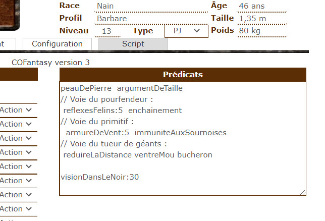

Sommaire
- Comment utiliser Le script
- Tokens et personnages
- Macros et Abilities
- Prédicats
- Méthodes de sélection de groupes
- Options de Mana
- Règles optionnelles utilisées
- Actions principales
- Le combat
- Soins
- Repos
- Statut et états
- Sorts
- Consommables
- Déplacements
- Lumière
- Jet de caractéristiques
- Anonymat et fausses identités
- Autres aspects du jeu
- Capacités par Classe
- Arquebusier
- Barbare
- Barde
- Chevalier
- Druide
- Ensorceleur
- Forgesort
- Guerrier
- Invocateur
- Magicien
- Moine
- Nécromancien
- Prêtre
- Psionique
- Rôdeur
- Samouraï
- Voleur
- Autres capacités
- Voies et capacités raciales
- Voies de prestige et capacités épiques
- Voies de créature
- Autres sorts
- Capacités diverses
- Terres d'Arran
- Markers personnalisés
- Console API
- Généralités sur la Console API
- Principaux messages d'erreur
- Principaux messages d'information
- Purger les variables d'état du jeu
- Conversion depuis Pathfinder
Documentation pour la version 3.14 de COFantasy
1. Comment utiliser Le script
1.1 Tokens et personnages
Ces scripts ont été écrits pour fonctionner avec les fiches de personnages développées par Natha.

Chaque token avec lequel vous souhaitez interagir doit représenter un personnage.
La barre 1 représente toujours les points de vie du token.
La barre 2 est soit la mana, pour les personnages qui ont des points de mana, soit les dégâts temporaires pour les personnages qui n’ont pas de points de mana
La barre 3 est utilisée pour donner un modificateur temporaire à l’attaque du token.
Les statuts des tokens sont en partie utilisés pour représenter des états. Voir plus loin pour la liste des statuts utilisés par les scripts.
Pour tenir compte d'autre états non visibles sur les tokens, les scripts utilisent des attributs supplémentaires (hors fiche). Parfois, le MJ devra créer et remplir lui-même certains attributs, d'autres fois cela sera géré par les scripts.
Il est important de noter la différence entre les tokens liés à un personnage (la barre 1 est liée aux points de vie du personnage, tout changement sur la fiche se répercute sur le token), et les tokens non liés (dans ce cas, la fiche de personnage est générique, et chaque token est une instance différente, avec des PV indépendants).
Pour gérer les états spécifiques à un token non lié, les scripts utilisent des conventions de nom d'attribut utilisant le nom du token. Pour que cela fonctionne correctement, il est important que deux tokens indépendants ne portent pas le même nom, même si ils représentent le même personnage. Pour cette raison, le script va automatiquement renommer les tokens indépendants, en leur associant un numéro. Il est toujours possible de remodifier le nom après la création du token, mais dans ce cas, c'est vous qui gérez...
Certains messages tiennent compte du genre (masculin ou féminin) des personnages. Ils utilisent le champ Sexe de la fiche de personnage. Un personnage est reconnu comme féminin si ce champ commence par la lettre F.
1.2 Macros et Abilities
Comme tous les scripts, ces scripts sont utilisables tels quels dans le chat, mais ils sont pensés pour être utilisés par des macros qui permettent un autre niveau d'automatisation parfois difficile d'accès au sein des scripts. le script génère d'ailleurs la plupart des macros utiles à la première utilisation, et il met automatiquement les macros à jour à chaque changement de version. Il est possible de demander des les re-créer en tapant la commande !cof-set-macros dans le chat.
Le script ne peut pas mettre les macros dans la barre de raccourci. Je recommande que chaque joueur se crée sa macro Centrer, contenant le code !cof-centrer-sur-token nom_de_leur_token_principal, qui leur permettra en un click de centrer la vue de la carte sur leur token. Pour le MJ, le script suggère de mettre un certain nombre des macros qu'il crée, au moment de la première utilisation.
Une partie des capacités et attaques des personnages devraient être utilisées au sein d'abilities de personnages, accessibles comme "Token action". Si ces abilities utilisent des macros, ne pas oublier de rendre ces macros accessibles aux joueurs.
1.3 Prédicats
Une façon courante d'informer le script qu'un personnage dispose d'une capacité particulière (que ce soit dû à son entraînement ou à un objet porté) consiste à utiliser des prédicats. Il s'agit de mots clés à rentrer dans la zone de texte Prédicats, visible depuis l'onglet Script de la fiche. Ces mots clés peuvent être séparés de blancs ou de retours à la ligne.
On peut associer une valeur à un prédicat (le plus souvent un nombre, mais en fait n'importe quel mot qui ne contienne ni virgule, ni blanc, ni :). Pour cela, faire suivre le prédicat de : puis de la valeur.
Dans chaque ligne de la zone de prédicats, tout ce qui vient après // est considéré comme du commentaire et ignoré (exception: les valeurs complexes, si le // vient après ::, voir plus bas).

Certains prédicats ont des valeurs complexes, qui peuvent contenir des blancs, des virgules, des guillements, ou même des : ou //. Afin de pouvoir utliser ces valeurs, vous pouvez faire suivre le nom du prédicat de ::. Tout ce qui viendra après jusqu'à la fin de la ligne sera considéré comme étant la valeur associée à ce prédicat. Un exemple typique d'utilisation : quand la valeur est un nom de personnage.
Il est aussi possible d'associer des prédicats à des attaques. Ces prédicats sont pris en compte quand ses attaques sont des armes, et ce que ces armes sont tenues en main. Cela permet de coder une grande variété d'effets magiques des armes. Attention, cela ne fonctionne pas pour les mooks avec les prédicats animeAPartirDExistant, intercepter, lienEpique, attaqueEnTraitre, sansPeur, immuniteSaignement, et controleSanguin.

1.4 Méthodes de sélection de groupes
Comme les joueurs ne peuvent pas sélectionner un nombre arbitraire d'ennemis, 7 méthodes sont disponibles :
- Le MJ lance la macro en sélectionnant les cibles
- option
--allies: cela fait chercher tous les handout dont le nom est Equipe suivi d'un nom, et tels que le handout contienne une liste de noms (un par ligne), parmis lesquels, celui du personnage qui agit. Le personnage qui agit est celui qui est sélectionné. Les cibles sont tous les alliés du personnage sélectionné, mais pas le personnage lui-même. Attention, les noms de personnages ne doivent pas contenir de balise XML (texte encadré par des < et >). Optionellement, on peut préciser une distance maximale entre le personnage sélectionné et ses allies. - option
--alliesEnVue: comme--allies, mais ne garde que les alliés en vue (en fonction des murs sur le layer lumière). - option
--equipe nom: agit sur tous les personnages mentionnés dans le handout s'appelant Equipe nom. - option
--self: pour rajouter le personnage sélectionné. Utile si on veut le personnage et ses alliés, par exemple. - option
--target: pour ajouter une seule cible, avec une id de token. Le personnage qui agit est celui qui est sélectionné. - option
--disque: le premier argument, optionnel, est l'id ou le nom d'un token qui représente un personnage, le deuxième argument un rayon. Cela sélectionne tous les tokens à une distance de moins que le rayon du premier argument (ou du personnage à l'origine de l'effet, si le premier argument est absent). Si un troisième argument est donné, il est interprété comme la portée maximum entre le centre du disque et le token du personnage à l'origine de l'effet. Si le premier argument représente un personnage avec un max de PV à 0, il est compris comme un personnage fictif créé juste pour définir le disque, et il sera supprimé après la sélection. À noter que le script crée par défaut un tel personnage, utilisable par tous, et appelé Cible. - option
--disquePasseMur: comme--disque, mais l'effet traverse les murs. - option
--enVue: sélectionne tous les tokens en vue du personnage qui lance l'effet. Accepte aussi un argument d'id de token, dans ce cas on garde les token en vue de celui avec cette id. - option
--saufAlliespermet d'exclure les alliés de la sélection (voir plus haut pour la définition des alliés).

1.5 Options de mana
COF sous ses différentes formes est une boîte à outils et nombreuses sont les variantes de système de magie qui peuvent être utilisées. Le script propose un support pour les plus populaires d'entre elles. Voici quelques consignes pour les implémenter.
Spécifier un coût en mana
- Les points de mana sont dépensés en ajoutant l'option
--mana Xà une action ou dans les options d'une attaque. Toutes les capacités implémentées dans la documentation donnent par défaut le coût en mana selon les règles de base. - Même un sort qui ne coûte pas de mana devrait utiliser
--mana 0. Cela permet au script de dissiper automatiquement un effet généré par un lanceur de sort mis hors de combat. - Une option d'affichage disponible via
!cof-optionspermet de demander au script d'afficher explicitement dans le chat toute dépense de PM effectuée par un personnage.
Système de base (COF p. 79)
Le support des effets supplémentaires à disposition du lanceur de sort sont gérées via l'utilisation d'options sur les commandes utilisées.
- Magie rapide : pas de support particulier
- Magie puissante (dés) : utiliser l'option
--puissantdans vos abilities ou attaques - Magie puissante (portée) : utiliser l'option
--puissant porteedans vos abilities ou attaques - Magie puissante (durée) : utiliser l'option
--puissant dureedans vos abilities ou attaques
On peut facilement combiner ces options avec un input de choix roll20 qui permettra au joueur de choisir le type d'incantation lorsqu'il lance le sort, tout en spécifiant la dépense de Mana.
--mana X ?{Incantation ?|Rapide, |Puissante (L),--puissant|Portée étendue (L),--puissant portee|Durée étendue (L),--puissant duree}
Mana Totale (COF p. 180)
La première chose à faire est d'activer l'option Mana totale via !cof-options. Pour le reste, vous pouvez réutiliser le principe du système de base ci-dessus.
Coût aléatoire
Vous pouvez utiliser des lancers de dés dans vos options --mana. Par exemple pour un sort de rang 1, on peut renseigner --mana [[1d3]]. L'option d'affichage de la dépense de mana prend ici tout son sens, activable via !cof-options.
Contrecoup
Vous pouvez activer la règle spécifique de Contrecoup via !cof-options.
Tempête de Mana (COF Compagnon p. 105)
Le script implémente un support complet des règles de Tempête de Mana. Pour ce faire, il faut ajouter les options --tempeteDeMana --rang X sur les sorts combinables avec Tempête de Mana. L'option rang permet d'indiquer le rang du sort afin que le script puisse calculer le maximum de PM qu'on peut dépenser lors du lancement du sort. Pour mettre ça de manière générique sur une action ou une attaque et permettre au joueur de choisir de faire appel à Tempête de Mana ou pas, on peut utiliser :
--mana X --rang Y ?{Tempête de Mana ?|Non, |Oui,--tempeteDeMana}
Tempête de Mana est compatible avec Mana Totale et Brûlure de Magie.
Option altruiste
Si vous désirez jouer avec l'option de Magie altruiste, il suffit de changer l'option en --tempeteDeMana altruiste sur les sorts où c'est utile.
Terres d'Arran (COTA p. 112)
Première chose à faire, activer l'option Brûlure de Magie via !cof-options. Note : si vous utilisez l'option de Brûlure de Magie avec l'option Mana Totale, vous pouvez utiliser un prédicat coefPVMana qui va diviser le nombre de PVs dépensé par point de mana.
Vous pouvez ensuite réutiliser le même principe que le système de base en combinant dépense de Mana et effets supplémentaires. Voici un exemple pour une Boule de Feu (Voie de l'élémentaliste, rang 4) :
--mana 2 ?{Incantation ?|Normale,--mana 2|Économe (L), |Puissante (L),--mana 2 --puissant|Portée étendue (L),--mana 2 --puissant portee} (notez que les coût total pour une incantation normale sera de 4 points de mana)
1.6 Règles optionnelles utilisées
Le script supporte l'utilisation de la règle des points de chance et des points de récupération.
J'ai aussi choisi, comme proposé par Kegron, de diminuer la DEF de tous les protagonistes après un certain nombre de tours de combat (-2 tous les 5 tours, peut être désactivé pendant un combat par la commande !cof-usure-off, ou bien dans les options de jeu).
Le script utilise aussi par défaut une règle de blessure grave : chaque fois qu'un personnage tombe à 0 PV, il encaisse une perte d'un point de récupération. S'il était à 0 points de récupération, il devient gravement blessé, ce qui le rend affaibli. Si le personnage était déjà gravement blessé, il meurt. Pour récupérer d'une blessure grave, le personnage doit se reposer une nuit, et réussir un test de CON difficulté 8 (avec le d12). Il est impossible de régénérer les points de récupération quand on est gravement blessé.
Le script utilise également une règle de dommages importants : chaque fois qu'un PJ reçoit plus de dommages en une fois que la somme de sa valeur de constitution et de son niveau, il perd 1PR et la règle de blessure grave s'applique. S'il était déjà blessé mais qu'il lui reste des PV, il tombe inconscient. Les deux règles sont désactivables séparément via !cof-options, dans la section dommages.
Le script propose également quelques autres options qui sont activables et/ou modifiables via la commande !cof-options. Quelques exemples :
- Initiative variable (individuelle / de groupe)
- Versions alternatives de capacités (interchangeable, forme d'arbre, rune de protection)
- Critiques étendus
- Dommages minimums
- Attaques de groupe
2. Actions principales
Pour la plupart des actions ci-dessous, il est généralement utile de créer des macros facilitant leur utilisation. Pour mettre en place un jeu de macros par défaut, vous pouvez taper !cof-set-macros dans le chat. Si vous souhaitez redéfinir des macros existantes, vous pouvez taper !cof-set-macros --force.
2.1 Le combat
Initiative : !cof-init
Les tokens sélectionnés sont ajouté au tracker de tour. Si celui-ci n'existe pas, un nouveau est créé, avec compteur de tour à 1, et on rentre en combat. Les tokens ayant un prédicat aucuneActionCombat ne sont jamais ajoutés au turn tracker.
Une option du script (ajustable en utilisant !cof-options) permet d'utiliser la règle de l'initiative variable (ajout d'un d6 explosif à l'initiative). Il est alors possible de faire lancer les dés d'initiative par les joueurs.
Les règles de tri suivent ce qui est donné p 70 : priorité aux PJs. Pour l'instant, on distingue un PJ d'un PNJ au dé de vie : si le personnage d'a pas de dé de vie, c'est un PNJ. Ensuite, entre PJs, priorité à la plus haute sagesse. Pour les PNJ, c'est aléatoire.
À chaque instant, le token dont c'est le tour d'agir est signalé par une aura qui bouge lentement. L'image de cette aura peut être modifiée dans les options (!cof-options images), et il est possible de spécifier une aura pour chaque token, en ajoutant une ligne dans le champ GM Notes du token (en bas de la partie basique de l'édition du token). Cette ligne doit commencer par init_aura:, et contenir une url valide pour un token. N'oubliez pas de sauvegarder le token comme token par défaut our un personnage si vous voulez que ce personnage ait toujours cette aura.
Il est possible de laisser les joueurs passer leur tour, en utilisant la commande !cof-tour-suivant. Une utilisation possible est de le mettre en macro dans les actions du tour (voir Actions du tour ci-dessous).
Astuces :
!cof-attendre ?{Nouvelle initiative}: Permet d'attendre avant d'agir en réduisant temporairement son initiative.- Il est possible de se passer de l'aura qui bouge, et d'utiliser à la place une icône de drapeau ou avec la syntaxe
!cof-init --auraune aura autour du Token de couleur verte (ou rouge si le personnage n'est pas contrôlé par un joueur ou dans une équipe contenant un personnage contrôlé par un joueur). Pour cela, désactiver l'initiative dynamique dans les options d'affichage (!cof-options affichage).
Liste d'actions pour le personnage dont c'est le tour
Le script affiche, pour le personnage dont c'est le tour, une liste d'actions. Cette liste est chuchotée au joueur qui contrôle le personnage, ou si aucun joueur le contrôlant n'est connecté, au MJ. Elle se compose par défaut des attaques du personnage et des actions d'attendre, se défendre et faire une manoeuvre.
Pour voir ce message en dehors du changement d'initiative, ou pour le MJ, on peut utiliser !cof-liste-actions en sélectionnant le token (un bon candidat pour une macro de type token action, d'ailleurs généré par la commande !cof-set-macros).
Pour contrôler ce qui est affiché dans cette liste, vous pouvez principalement utiliser la liste des attaques du personnage et surtout la partie script de la fiche.
Les attaques affichées
Il est possible de ne pas afficher une attaque en décochant la case sous le dé dans les options d'attaque. Les attaques sont affichées dans l'ordre des labels d'attaques. les attaques avec des conditions impossibles (du genre limite par jour épuisée, etc.) ne sont pas affichées.
À cela se rajoute éventuellement l'attaque avec l'arme en main. À côté de cette attaque, le script propose un bouton pour rengainer l'arme ou en dégainer une autre (parmis les armes de la fiche cochées). On peut modifier cette liste des armes à dégainer en utilisant des prédicats actionDegainern, de valeur le label de l'arme à afficher en position n dans la liste (seulement pour les premières armes, il n'est pas possible de ne spécifier que la 2nde arme ou la 1ère et le 3ème). On peut ainsi faire afficher 2 armes à dégainer en même temps en séparant les labels d'un - (par exemple pour faire dégainer l'arme 1 en main droite et l'arme 4 en main gauche, en première position dans la liste, on écrira actionDegainer1:1-4). À noter que si aucune arme n'est en main, et qu'aucune attaque naturelle n'est cochée, le script va tout de même afficher une des attaques naturelles non cochées à la place de l'arme en main. Cela permet d'avoir une attaque que l'on n'affiche que quand on n'a pas d'arme en main.
Notez qu'il est possible d'avoir une arme par défaut en main, en ajoutant un prédicat armeParDefaut, de valeur le label de l'attaque correspondante. C'est parfois bien pratique pour ne pas avoir à dégainer les armes de chacun des orques en embuscade, par exemple.
Choisir les actions à afficher
Pour changer les attaques affichées par défaut, rajouter des actions à la liste d'actions du tour, ou utiliser de nouvelles listes, il faut aller dans l'onglet Script de la fiche de personnage.
Pour rajouter des actions à montrer, il faut ajouter des lignes en-dessous de Montrer l'arme en main et dégainer. La case cochée devant chaque action peut être décochée pour ne pas afficher l'action. Les actions seront affichée dans l'ordre des numéros d'action. Attention, si deux actions ont le même numéro, une des deux ne sera pas affichée. Le titre de l'action peut soit être directement une commande (commençant par %, # ou !), et dans ce cas l'action affichée sera déterminée par le script, soit du texte qui sera affiché tel quel. Dans ce cas, il sera souvent nécessaire de préciser le code de l'action : cliquer sur la roue au bout à droite de la ligne de l'action pour faire apparaître les lignes de condition et de code. La ligne de conditions n'est pas encore utilisée par le script.
Il existe un certain nombre de commandes spéciales, qui peuvent être rentrée dans le titre ou le code :
!attaquesfera afficher toutes les attaques cochées de la fiche!arme-en-mainaffichera l'attaque correspondant à l'arme en main, ou si aucune arme n'est en main, une attaque naturelle non cochée, et si il n'y en a pas non plus, une attaque à mains nues. Vous pouvez faire suivre cette commandes d'options d'attaque, comme--m2d20.!optionspassera en option à toutes les actions suivantes tout ce que vous écrirez dans la même ligne (par exemple!options --traquenardpasse l'option--traquenardà toutes les actions suivantes).
Autres listes d'action
Il est possible d'ouvrir d'autre listes d'actions, à partir des commandes ou même d'une liste d'actions. La fiche propose 4 emplacements pour ces listes d'action, mais si cela ne suffit pas, vous pouvez utiliser des abilities dont le nom commence et termine par #. Pour faire référence à une liste dans une action, inscrivez simplement le nom de la liste dans le titre de l'action et sélectionnez Liste d'actions dans le menu déroulant à côté. Les listes d'action sur la fiche fonctionnent de la même façon que la liste des actions du tour, sauf qu'il n'y a pas d'affichage par défaut des attaques ou de l'arme en main (pour cela, une simple ligne avec en titre #Attaque -1 permet d'y remédier), et que la liste peut avoir une liste d'options globales (cliquer sur la roue à droite du nom de la liste).
Pour les listes d'actions supplémentaires, dans les abilities, il faut respecter la syntaxe suivante :
- une action par ligne
- chaque ligne est donc soit un commentaire, soit une macro (qui commence par
#), soit une ability (qui commence par%), soit une commande qui commence par! - l'action affichée sera le nom de la macro ou de l'ability (sauf pour les attaques, pour lesquelles le nom de l'arme sera affichée)
- les commandes disponibles sont
!optionset!attaques. - pour les listes d'actions, il suffit de mettre
%#suivi du nom de la liste et terminé par#.
Il est aussi possible de faire afficher une liste quelconque avec une commande, avec !cof-liste-actions nom (où le nom est celui de la liste, ou bien de l'ability sans les #). Par exemple, si on ne souhaite pas afficher la liste complète des sorts d'un personnage à son tour, on peut faire une liste Sorts, puis faire une macro qui lance !cof-liste-actions Sorts pour que le joueur puisse afficher la liste quand il le souhaite.
Attaquer une (ou plusieurs) cible : !cof-attack @{selected|token_id} @{target|token_id} n
où n est un argument optionnel qui peut soit correspondre au label de l'attaque sur la fiche du personnage (ce label est automatiquement généré par la fiche et affiché juste devant le nom), soit être le nom de l'attaque. Si cet argument est -1, le script cherchera si le personnage a une arme en main et utilisera cette arme. Si c'est -2, il va chercher l'arme en main gauche. Si cet argument est absent ou qu'il ne correspond pas à un label de la fiche du personnage, l'attaque aura les valeurs par défaut d'une attaque au contact infligeant 1d4 DM. Pour plus de facilité, vous pouvez utiliser la macro Attaque qui fait !cof-attack @{selected|token_id} @{target|token_id}
Exemple avec label :
!cof-attack @{selected|token_id} @{target|token_id} 1
L'attaque tient alors compte de toutes les informations de l'attaque, y compris chances de critique, portée, type d'attaque, type de dégâs et autres options spécifiées sur la fiche. Par défaut, l'attaque montre le label, le nom de l'attaque, le calcul du bonus d'attaque, le calcul des dégâts, la portée et un champ SPÉCIAL (ou encore appelé divers). En cliquant sur la roue au bout à droite de cette ligne, on affiche une deuxième ligne, avec un case à décocher pour ne pas faire apparaître l'attaque à chaque tour, un choix de type d'attaque, des modificateurs, un choix de type de degâts et un champ d'options. Les modificateurs sont constitués d'options sans argument, séparée par une espace. Les options sont reprises telles quels comme un argument à l'attaque (voir plus bas pour le liste de ces options). Attention, pour l'instant ne traite correctment les jets (parties entre crochets) et les demandes au joueur (de type ?{question?}) que si on passe par une liste d'actions (donc pas directement en faisant #Attaque 1 dans le chat). Une troisième ligne peut aussi s'afficher, pour gérer le nombre d'armes de jet, ou pour les armes portées, pour indiquer des prédicats actifs seulement quand on porte l'arme. Il est possible de spécifier une arme batarde (pouvant se porter à une ou deux mains) en renseignant un prédicat batarde de valeur le dé de DM à utiliser quand on porte l'arme à deux mains.
En l'absence de label, on peut spécifier ces informations sous forme d'options d'attaque
Exemple pour le sort "Flèche enflammée" :
!cof-attack @{selected|token_id} @{target|token_id} Flèche Enflammée --toucher [[@{selected|ATKMAG}]] --dm 1d6 + [[@{selected|INT}]] --portee 30 --fx beam-fire --feu --sortilege --enflammeMalus ou bonus temporaire à une attaque : utiliser la barre 3.
Toutes les attaques ayant une portée non nulles sont considérées par le script comme des attaques à distance.
Le test d'attaque à distance tient compte de la portée (malus de -1 à -5 si distance entre portée et deux fois cette valeur), ainsi que des tokens sur le trajet de l'attaque. Une attaque de trop loin ne porte jamais.
Utiliser une attaque fait rentrer l'attaquant en combat (et le rajoute au turn tracker).
Il existe une version spécialisée permettant de faire des dégâts dans un disque centré sur un token, !cof-explosion, dont le premier argument doit être le label d'une attaque.
Options pour l'attaque :
--nom txt: nom de l'attaque à afficher. Remplace le nom dans la ligne d'attaque si on a donné un label en argument. Le nom ne doit pas comporte de blanc usivi de 2 tirets (--).--toucher n: bonus de base de l'attaque. Remplace les valeurs dans la ligne d'attaque si on a donné un label en argument. Pour référence, sur les fiches de PJ, l'attaque au contact est[[@{selected|ATKCAC}]], l'attaque à distance[[@{selected|ATKTIR}]], et l'attaque magique[[@{selected|ATKMAG}]].--crit n: valeur à partir de laquelle le jet de dé est un critique. Remplace les valeurs dans la ligne d'attaque si on a donné un label en argument.--dm expr: Dégâts de base de l'attaque. Remplace les valeurs dans la ligne d'attaque si on a donné un label en argument. expr peut être un entier ou bien une expression du typeadb+c. La partie constante de cette expression est optionnelle et peut être négative.--portee n: la portée de l'attaque exprimée en mètres. Remplace les valeurs dans la ligne d'attaque si on a donné un label en argument.--special txt: remplace le champ spécial de l'attaque sur la fiche.--tempDmg: l'attaque fait des dégâts temporaires (tient compte de la force de l'adversaire, utilise la barre 2 pour les dmg temp, sauf si le token a des PM, auquel cas on utilisera un attribut temporaire).--pasDeDmg: l'attaque ne fait pas de DM.--poudre: l'arme est une arme à poudre, utilisation d'un dé de poudre. Une arme est aussi considérée comme une arme à poudre si elle contientpoudredans le nom de l'arme ou dans le champ modifcateur ou de prédicats.--epieu: l'arme est un épieu. À noter que l'arme est aussi considérée comme un épieu si elle contientépieudans son nom ouepieudans son champs modificateurs ou prédicats. Cette option augmente de 1 le nombre de dés contre un adversaire sans armure.--hache: l'arme est une hache. À noter que l'arme est aussi considérée comme une hache si elle contienthachedans son nom ou dans son champs modificateurs ou prédicats. Cette option permet de passer la RD/hache (pour les sylvaniens, par exemple).--marteau: l'arme est un marteau. À noter que l'arme est aussi considérée comme un marteau si elle contientmarteaudans son nom ou dans son champs modificateurs ou prédicats.--auto: l'attaque réussit automatiquement--bonusAttaque n: ajoute n au jet d'attaque--bonusCritique n: augmente n à la plage de coups critiques--modifiePortee n: ajoute n à la portée de l'attaque.--divisePortee n: divise la portée de base par n. C'est appliqué avant toute modification de portée.--bonusContreBouclier n: ajoute n au jet d'attaque si le défenseur porte un bouclier. Utile par exemple pour le fléau d'arme.--bonusContreArmure n: ajoute n au jet d'attaque si le défenseur porte une armure.--psave carac seuil: jet de carac, si le jet est supérieur à seuil, les dégâts sont divisés par 2. carac est l'abbréviation de caractéristiques de 3 lettres standard (FOR, DEX, ...). Il est possible de prendre la meilleure de 2 caractéristiques pour le save : pour cela indiquer les 2 caractéristiques collées (donc 6 caractères, par exemple FORDEX, pour le meilleur de FOR et de DEX). Le script choisira automatiquement la caractéristique qui donne les meilleures chances de réussite (en tenant compte de la difficulté et des caractéristiques supérieures). Enfin on peut encore ajouter un ou des arguments optionnels. Si vous avez besoin de plus d'un argument optionnel, séparez-les par - Si on souhaite que le jet ne permette de réduire qu'une partie des dommages (la dernière ajoutée avec
--plus), on peut ajouterlocal. La syntaxe complète est alors--psave carac seuil local. - Si on souhaite que la difficulté soit augmentée en cas de tempête de mana, on peut utiliser le mot clé
tempetesuivi si besoin de l'incrément en fonction de la mana (par defaut 1 mana augmente de 1 la difficulté). - Si on souhaite indiquer une difficulté alternative pour les cibles au contact, ajouter
contact n, où n est la difficulté en question. - Si on souhaite augmenter la difficulté du save en fonction de la marge de réussite du jet d'attaque, ajouter
augmenteAvecMargeDeToucher. --demiAuto: si l'attaque rate, on considère juste que les saves partiels sont automatiquemet réussi. Ça signifie en général que la cible prend au moins la moitié des dégâts.--dmSiRate dmg: si l'attaque rate, la cible est quand même touchée et se voit infliger dmg dégâts.--toucheDoubleDmg: si l'attaque rate, elle inflige les dégâts normaux, et si elle touche, elle double les dégâts de base. Pas cumulable avecdmSiRateoudemiAuto.--save carac seuil: même effet que--psave, mais pour annuler le dernier--effetouetat(aucun effet sur les DM). Si on rajoute un argumentdemiDureeau save, alors la réussite du save ne fait que diviser par 2 sa durée.--saveDM carac seuil: même effet que--psave, mais pour annuler l'ensemble des dégâts.--saveParTour carac seuil: même effet que--save, mais donne droit à un jet à la fin de chaque tour au lieu d'un jet au moment de l'attaque.--saveActifParTour carac seuil: même effet que--save, mais affiche un bouton pour faire le save dans la liste d'actions à chaque tour. Utile si les joueurs préfèrent jeter "eux-mêmes" le dé, ou si le save est sensé arriver au tour du joueur.--saveParJour carac seuil: même effet que--save, mais donne droit à un jet à la fin de chaque jour au lieu d'un jet au moment de l'attaque.--fx effet: ajoute un effet qui part de l'attaquant à la cible. Si l'attaque rate, l'effet rate aussi, d'autant plus que le jet d'attaque est loin de la défense. Il est possible d'utiliser un effet que vous avez défini vous-même en utilisant l'option--fx custom nom, où nom est le nom de votre effet.--targetFx effet: ajoute un effet au niveau de la cible (l'effet ne doit pas être directionnel). Comme avec--fx, on peut utiliser un effet qu'on a créé.-
--si condition: l'attaque n'est possible que si condition est validée. Une condition peut êtremoinsattribut : vrai si l'attribut attribut de la cible est moins haute que celle de l'attaquantetate : vrai si l'état e est actif sur l'attaquant. Cet état peut être un des états définis plus bas, ou un attribut quelconque.attributattr val: vrai si l'attaquant possède un attribut attr, de valeur val, aux majuscules près. On peut optionnellement préciser qu'il s'agit d'un attribut par token en rajoutant le mot clélocal, ou encore qu'il sagit d'un attribut de la fiche, avec éventuellement sa valeur par défaut, en ajoutant le mot cléfiche defaut.etatCiblee : vrai si l'état e est actif sur toutes la cible. Cet état peut être un des états définis plus bas, ou un attribut quelconque.attributCibleattr val: vrai si la cible possède un attribut attr, de valeur val, aux majuscules près. On peut optionnellement préciser qu'il s'agit d'un attribut par token en rajoutant le mot clélocal, ou encore qu'il sagit d'un attribut de la fiche, avec éventuellement sa valeur par défaut, en ajoutant le mot cléfiche defaut.predicatCiblepredicat: vrai si la cible possède un prédicat predicat. On peut aussi spécifier une valeur auquel le prédicat doit être égal.typeCibletype: vrai si la cible est du type spécifié. Les types reconnus sontanimal,démon,dragon,fée,insecte,mauvais,mort-vivant,géant,gobelin, et si le type n'est pas reconnu, va chercher si la race ou un prédicat correspondant.deAttaquen : vrai si le jet de dé d'attaque est supérieur ou égal à n.touche: vrai si l'attaque touche.critique: vrai si l'attaque est un critique.echecCritique: vrai si l'attaque est un échec critique.premiereAttaque: vrai si c'est la première attaque du combat.
--if conditionoptions--endif: permet de ne prendre en compte des options que si certaines conditions sont réalisées. Il est possible d'utiliser un--elsepour activer des options quand les conditions ne sont pas réalisées. Attention, les options qui modifient une option précédente (comme--valeur) doivent apparaître au même niveau que l'option qu'elles modifient. Comme les conditions peuvent dépendre du dé d'attaque, un certain nombre d'options ne sont pas affectées par cette conditionnelle : tempeteDeMana, les options d'aoe (ligne, cone, disque, target), avecd12, avantage, auto, demiAuto, test, pointsVitaux, tempsRecharge, sortilege, bonusCritique, disparition, affute, munition, tirDouble, semonce, tirDeBarrage, poudre, traquenard, feinte, magique, tranchant, percant, contondant, pasDeDmg. Ne pas hésiter à me demander si vous aviez besoin que l'une de ces options puissent être conditionnelle.--ifSaveFails carac seuiloptions--endif: comme--if, mais fait réaliser une jet de sauvegarde à la cible (comme avec--save), et si le test est raté, applique les options qui suivent. Un--elsepermet de choisir des options à appliquer quand le test est réussi. À utiliser seulement si on ne peut pas se contenter d'un--save, car ça marche moins bien.--decrAttribute nom: l'attaque n'est possible que si l'attribut existe et si sa valeur est strictement positive. L'attaque diminue cette valeur de 1. Si cette option est utilisée à l'intérieur d'un--if, alors l'option se contente de diminuer l'attribut (on peut savoir si la valeur est positive grâce à--if etat nom).--decrLimitePredicatParTour nom: l'attaque n'est possible que si un prédicat nom existe et si elle n'a pas été utilisée plus de fois dans le tour que la valeur de ce prédicat. L'attaque augmente ce nombre de 1.--tempsRecharge effet duree: l'attaque n'est possible que si l'effet est inactif sur l'attaquant, et de plus active l'effet sur l'attaquant pour la durée indiquée si l'attaque est possible. Il existe un effet temporaire générique,rechargeGen(desc)que vous pouvez utiliser si aucun effet existant ne correspond pour votre attaque.--etat e: si l'attaque touche, la cible passe dans l'état e. Il est aussi possible de spécifier une caractéristique et un seuil (comme pour!cof-set-state) pour faire afficher à chaque tour une action permettant de se libérer de l'état.--effet e duree: ajoute à la cible l'effet temporaire e pour la duree spécifiée. Pour que cela soit automatiquement mis à jour, il faut utiliser le turn tracker. Noter que l'argument de durée peut être omis pour certains effets, comme ceux qui par définition durent tout le combat.--valeur v: spécifie une valeur au dernier effet mentionné.--optionEffet opt arg1 arg2 ...: spécifie une option au dernier effet mentionné. L'option opt doit être donnée sans le--et sera passée telle quelle à l'effet, par exemple pour les dégâts périodiques, si on ne veut pas que la RD s'applique, on pourra ajouter--optionEffet ignoreRD.--peur seuil duree: fait un effet de peur si l'attaque touche. Le seuil sert pour le test de sagesse de résistance à la peur (tient compte de la capacité sans peur du chevalier).--affaiblirCarac carac n: l'attaque diminue la caractéristique carac de n. Si carac estrandom, le script tire une caractéristique au hasard.--plus dmg: ajoute dmg dégâts. Attention, si dmg est un simple nombre, ces dégâts sont multipliés par les critiques (sauf si de type différent de l'attaque principale). Ainsi,--plus [[1d6]]donnera des dégâts multipliés par les critiques (car la fonction ne voit que le résultat du jet), alors que--plus 1d6ne le sera pas.--plusCrit dmg: ajoute dmg dégâts en cas de réussite critique--testpour voir le résultat du jet d'attaque. On n'applique pas les résultats d'un touché.--sournoise n: ajoute nd6 de dégâts d'attaque sournoise ou par surprise. Si l'option n'a pas d'argument, le nombre de dés rajoutés sera celui associé à un prédicatattaqueSournoise, et si l'attaquant n'a pas de prédicatattaqueSournoise, l'attaque ajoute juste 1d6. Le script limite le nombre d'attaque sournoise par personnage à 1 par tour. On peut augmenter ce nombre en utilisant un prédicatsournoisesParTour, de valeur la limite au nombre de sournoises pour ce personnage.--magique: les dégâts sont magiques. On peut passer en argument le niveau de magie. Il est utilisé contre les créatures immunisées aux armes. Le niveau par défaut est 1.--+k: l'attaque utilise une arme magique +k. Pratique à mettre dans les modificateurs de l'attaque (dans ce cas, on n'a pas les--), cela rajoute les bonus au toucher et aux dégâts, et indique que les dégâts sont magiques. Si un niveau de magie est spécifié, rajoute k à ce niveau.--feu,--acide,--electrique,--froid,--sonique, --poison, --maladie,--argent,--drain,--energie: les dégâts sont de type feu, acide, électrique, froid, sonique, poison, maladie, argent, drain ou énergie. Le type spécifie uniquement le dernier--plusprécédent cette option, ou si il n'y en a pas, celui des dégâts principaux. Seul le dernier type spécifié est pris en compte (pas de type multiple pour l'instant). Le type affecte différents attributs, et aussi la couleur d'affichage des dégâts.--beni: les dégâts sont d'une source sainte ou bénie. Sert principalement à signaler pour les résistances aux dégâts qui peuvent dépendre de cela (genre RD 5/beni).--spectral: L'attaque peut toucher les créatures intangibles.--tranchant,--percant,--contondant: précise le type d'arme (si pertinent), pour pouvoir utiliser les RD spécifiques à un type d'arme.--ignoreRD: l'attaque ignore les RD et division de DMs. Il est possible de donner en argument une valeur de RD ignorée, de sorte que l'attaque ignore les RD jusqu'à cette valeur. Par exemple on pourra écrire--ignoreRD 5.--ignoreMoitieRD: l'attaque ignore la moitié de la RD.--sortilegepour indiquer qu'il s'agit d'un sortilège, de façons à pouvoir appliquer tous les effets spécifiques aux sorts. Cette options devrait être passées pour toutes les capacités suivies d'une étoile dans le livre des règles. En particulier, tout sortilege ignore les malus d'obstacles.--reroll1: relance les 1 aux dés de dégats. À noter que cela ne concerne que les dés de base de l'attaque, pas les DM supplémentaire.--explodeMax: relance les valeurs maximum aux dés de DM de base, et rajoute le nouveau résultat (qui lui-même explose).--mana n: l'attaque coûte n points de mana. Si l'attaque provoque un effet temporaire, le script essaiera de le supprimer à la mort du lanceur (même avec un coût nul).--magieRapide: augmente le coût en mana (1 avec la mana normale, 3 avec la mana totale) et affiche un petit message indiquant que le lancement est rapide. Il est possible de préciser un coût en mana différent.--rang n: indique le rang de la capacité utilisée, si besoin. Utilisé par l'option--tempeteDeMana.--tempeteDeMana liste: indique des effets de tempête de mana. La liste peut contenir un nombre (pour l'effet intense),duree,rapide,porteeetaltruiste id. Si le rang du sort est spécifié (par l'option--rang, un message est affichée si le coût en mana est supérieur au rang. Si la liste d'options est vide ou ne contient quealtruiste, le script affiche un menu dans le chat pour spécifier les options de tempête de mana. Il est possible d'utiliser les règles de mana totale pour les coûts de tempête de mana (à activer avec!cof-options).--magieEnArmure: applique un malus à l'attaque égale au rang du sort + le malus d'armure de l'attaquant. On peut ajouter un argument optionnel : soit un nombre qui va remplacer le rang dans cette formule, soitmanaqui va augmenter le coût en mana de l'attaque en fonction de l'armure portée.--frappeDesArcanes n: ajoute +5 à l'attaque et +nd6 aux DM, mais empêche de lancer des sorts pendant 1d6 tours si l'attaque touche. Si le nombre n n'est pas présent, le bonus est de 2d6.--limiteParJour l: limite le nombre d'utilisations de cette attaque à l fois par jour. On peut préciser un nom après l, qui va correspondre à une ressource pouvant être partagée avec d'autres attaques ou d'autres effets (voir!cof-effet-temp). Par défaut, le nom de cette ressource est le label de l'attaque. On peut remplacer le nombre n par le nom d'un prédicat dont la valeur sera utilisée.--limiteParCombat: même effet que la limite par jour. Si aucun argument n'est donné, la limite est de une fois par combat.--limiteParTour: même effet que la limite par jour. Si aucun argument n'est donné, la limite est de une fois par tour.--munition label: l'attaque utilise les munitions de labellabel(notées dans l'onglet équipement de la fiche). À chaque attaque portée, une munition est utilisée, et le script teste si elle sera récupérable (en fonction du taux de pertes notée sur la fiche). En fin de combat, on considère que le personnage récupère toutes les munitions récupérables. Si une arme est reconnue comme étant un arc,une arbalète ou une arme à poudre, et que les options de l'attaque ne contiennent pas l'option--munition, alors le script propose automatiquement de choisir parmis les munitions normales (supposées illimitées) et celles encores présentes du bon type. À noter que cette option devrait être inutile pour les armes de jet qui ont déjà leur propre case associée à l'attaque.--aussiArmeDeJet L: permet d'indiquer que l'arme peut aussi être employée comme arme de jet. L doit être le label de l'attaque avec cette arme en tant qu'arme de jet. Cela permet de tenir compte des cas où l'arme a été lancée et ne peut donc plus être utilisée au corps à corps. Si l'arme est utilisée à distance, le script va automatiquement utiliser l'attaque L.--arcComposite n: augmente les DM du modificateur de force, (qui peut être négatif), mais sans dépasser n. Si le modificateur est strictement inférieur à n, l'attaque se fait avec un malus de -2.--seulementDistance: l'attaque ne peut être réalisée que contre un adversaire à distance.--vampirise: soigne de tous les DM infligés, quel que soit leur type. Il est possible de soigner un pourcentage des dégâts : pour cela, préciser le pourcentage entier après l'option. Par exemple, pour une attaque qui soigne de la moitié des dégâts infligés, on pourra mettre--vampirise 50. À noter que les soins se cumulent avec les dégâts de type drain.--seulementVivant: n'affecte que les cibles vivantes--forceMinimum n: l'attaque n'est possible que si l'attaquant a au moins n en force.--necromancie: l'attaque est de la nécromancie--ferFroid: multiplie par 2 les dégâts contre les fées et les démons (le script reconnaît certaines races et les prédicatsdémonetfée).--adamantium: l'arme utilisée est en adamantium. Reconnu pour la RD.--tueurDe categorie: bonus de +2 en attaque et +2d6 DM contre les espèces appartenant à la catégorie (voir la conditiontypeCible.--tueurDeGrands: bonus de +1d6 DM contre les créatures de taille grande et +2d6 DM contre les créatures de taille énorme ou plus.--ignoreObstacles: ignore les tokens sur le trajet. Ça semble nécessaire pour les attaques magiques d'après Kegron.--retourneEnMain: L'arme de jet revient en main après l'attaque.--puissant: augmente la valeur max des dés de dégâts de 2. Si--puissantest suivi d'un argument effet, on teste la présence d'un attribut effetPuissantpour décider si l'attaque est puissante ou non. Il est aussi possible de donnerouiounonen argument (ce n'est alors pas considéré comme un effet).--puissant porteepermet de doubler la portée de l'attaque (utile pour l'option de Magie Puissante)--attaqueAssuree: implémente une attaque assurée (+5 à l'attaque, dégâts divisés par 2, critique impossible).--attaqueRisquee: implémente une attaque risquée (+2 à l'attaque au contact, -4 en DEF pendant un tour).--attaqueDeGroupe n: n est le nombre de créatures qui attaquent ; implémente une attaque de groupe (+2 à l'attaque par attaquant au-delà du premier, x2 DMG si l'attaque dépasse la DEF de 5 ou plus, x3 DMG si critique).--attaqueAcrobatique: l'attaquant effectue un test d'acrobatie difficulté 15, et s'il réussit, l'attaque bénéficie des effets d'une sournoise. On peut en option préciser le nombre de dés de cette attaque sournoise.--strigeSuce: option spécifique aux striges. Donne le malus de -3 en DEF et compte la quantite sucée. Quand cette quantité arrive à 6, enlève le malus de DEF et rend la cible affaiblie.--mainsDEnergie: +2 à +5 à l'attaque, selon l'armure de la cible--semonce: +5 au touché et +1d6 aux DM (ne change pas les charges de l'arme).--avantage: lance un dé de plus en attaque et garde le meilleur. plusieurs arguments avantage se cumulent et sont annulés par les désavantages (syntaxe alertnative: (--m2d20)--desavantage: lance un dé de plus en attaque et garde le moins bon. plusieurs arguments désavantage se cumulent et sont annulés par les avantages.--avecd12: lance un d12 au lieu du d20 pour le jet d'attaque. L'attaque est impossible si l'attaquant est déjà affaibli.--avecd12crit: comme--avecd12, mais le jet peut faire un critique. La plage de critique est divisée par 2, arrondie à l'inférieur. Ainsi si le d20 sevait critiquer sur un 20 seulement, le d12 ne fait pas de critique. Il fait un critique sur un 12 si le d20 devait faire un critique sur un 19 ou un 18, et ainsi de suite.--incrDmgCoef n: augmente le coefficient des dégâts de base de 1. Les dégâts de base comprennent les dés de dommage de l'arme (ou du sort), plus tous les bonus constants. Le coefficient par défaut est de 1, et une réussite critique augmente ce coefficient de 1.--incrCritCoef n: augmente le coefficient des dégâts critiques de n (1 si on ne donne pas d'argument).--diviseDmg n: divise les dégâts de base par n.--maxDmg: l'attaque inflige le maximum de DM permis par les dés de base.--runeDePuissance: l'arme est enchantée avec une rune de puissance permanente.--difficultePVmax: la difficulté du jet d'attaque est le maximum de PVs au lieu de la défense.--difficultePV: la difficulté du jet d'attaque est la valeur courante des PVs au lieu de la défense.--difficulteCarac carac: la difficulté du jet d'attaque est une des caractéristiques de la cible (sous forme de code à 3 lettres,FOR,DEX, etc). Il est possible de prendre le meilleur de 2 caractéristiques en écrivant les 2 noms collés. Par exemple, pour viser le meilleur de l'intelligence et du charisme, on écrira--difficuletCarac INTCHA.--affute: augmente de 1 les chances de crit et +1d6 aux DM des crit.--tirDeBarrage: ignore la charge, multiplie les DM par 2 et message pour undo si la cible bouge.--tirAveugle: ignore le malus de tir sur une cible invisible.--vicieux: ajoute 2d6 DM mais inflige 1d6 DM à l'attaquant.--enflamme: enflamme la cible, lui infligeant 1d6 DM par tour. Les flammes s'éteindent sur un 1 ou 2. Si l'option--puissantest donnée en conjonction, les DM augmentent de 1.--malediction: maudit la cible pour 3 jets.--armeDArgent: bonus de +2 en attaque et 1d6 aux DM si la cible est un mort-vivant ou un démon (utilise le champRacede la fiche ou si présent un prédicatmortVivant).--pietine: si l'attaquant est de taille au moins égale à celle de la cible (ou si la taille de l'un des deux n'est pas connue), fait un test opposé de FOR. En cas d'échec de la cible, elle est renversée et les DM sont doublés.--percute: comme--pietine, mais la cible est en plus projetée à 1d6+1 mètres et étourdie si elle rate un test de CON difficulté 15, renouvelable chaque tour.--feinte: L'attaque ne fait pas de dégât, mais un bonus de +5 en attaque est donné sur les attaques du tour suivant sur cette cible (par celui qui a fait la feinte), et +2d6 DM si l'attaque fictive était un succès. Si l'attaquant possède un prédicatbonusFeinte, c'est la valeur de ce prédicat qui est donné en bonus aux attaques, à la place de +5.--enveloppe difficulte type expr: si l'attaque touche, elle a une chance d'envelopper la cible. Dans ce cas, un bouton apparaît qui lance un test en opposition. Si celui-ci est remporté par l'attaquant, difficulte est la difficulté du test pour se sortir de l'enveloppement, type est soitlabel, et dans ce cas, expr doit être le label d'une attaque de l'attaquant, soitability, et dans ce cas, expr est le nom d'une ability de l'attaquant. Cette attaque ou ability est appelée pour les dégâts périodiques. Si les deux derniers arguments sont ommis, le script prendlabelet le label de l'attaque courante, et si le premier argument est ommis, la difficulté est de 15.--etreinte difficulte: si l'attaque touche, il y a une chance que l'attaquant puisse s'enrouler autour de la cible. Dans ce cas, un bouton apparaît qui lance un test en opposition. Si celui-ci est remporté par l'attaquant, difficulte est la difficulté du test pour se sortir de l'enveloppement. Cela fera apparaître un bouton pour les dégâts de l'étreinte, par défaut1d6, mais on peut spécifier une autre expression pour les dégâts (optionelle, juste après la difficulté).--ouvertureMortelle: touche automatiquement, fait des dégât comme en cas de critique et multiplie par 2 les dégâts d'attaque sournoise (si il y en a).--rate,--touche,--critique,--echecCritique,--pasDEchecCritique: options pour tricher : le résultat des dés donne toujours le résultat voulu.--ligne: l'attaque porte sur toutes les cibles à portée, entre l'attaquant et le token ciblé. Si le token ciblé est plus proche que la portée de l'attaque, les tokens derrière le token ciblé sont aussi visés. Pour permettre de viser un point quelconque, on peut utiliser un personnage dédié avec un maximum de 0 pv. À chaque fois qu'un token représentant ce personnage est utilisé comme cible de--ligne, le token est enlevé de la carte.--disque r: l'attaque porte sur toutes les cibles dans le disque de centre le token ciblé et de rayon r. Comme pour--ligne, on peut utiliser un token cible qui sera supprimé après l'attaque. À noter que l'attaquant lui-même peut prendre des dégâts, sauf si l'attaque a une portée nulle et que l'attaquant se cible lui-même (attaque centrée sur le lanceur). On peut donner en argument optionel le motsouffleDeMortpour ne valider l'attaque que si le centre du disque est un personnage mort depuis moins d'un tour et ne garder que les alliés de ce personnage de niveau inférieur ou égal.--cone angle: cible toutes les créatures dans un cône de sommet l'attaquant, d'angle angle degrés (90 degrés par défaut), et séparé en deux par le segment joignant l'attaquant et le token visé.--explosion: si l'attaque n'est pas déjà un disque, considère qu'elle forme un disque de rayon égal à la portée. L'attaquant est automatiquement exclus de la zone.--dmCible dmg: utilisé conjointement aux options de zone ci-dessus, cette option permet de remplacer les dommages de base de l'attaque spécifiquement sur la cible sélectionnée lors de l'attaque--saufAllies: ne cible pas les allies dans la zone ou les cibles spécifiées.--target id: ajoute une cible à l'attaque (s'ajoute à la cible principale et aux options d'aoe).--ciblesDansDisque n: impose que les différentes cibles soient dans un disque de rayon n.--ricochets n: l'arme de jet peut faire n ricochets. Une cible ne peut être touchée qu'une fois par attaque.--message texte: ajoute une ligne avec le message dans la fenêtre de l'attaque. Attention, texte ne doit pas contenir la séquence--.--secret: affiche les jets et résultats de l'attaque seulement aux joueurs qui contrôlent l'attaquant ou ses cibles, ainsi qu'au MJ.--allonge n: ajoute n mètres à la portée d'une attaque au contact. L'allonge peut être un nombre à virgule et même négative.--canaliseParFamilier: le point de départ de l'attaque est le familier s'il est actif sur la carte.--peutAgripper: l'attaque peut agripper comme si l'attaquant avait le prédicatagripper.--soundAttack son: joue le son son, à moins qu'une version plus longue de l'option (voir ci-dessous) n'existe et qu'elle soit active.--soundAttackEchec son: joue le son son lorque l'arme fait un echec, sauf si c'est un échec particulier et une version plus longue existe.--soundAttackEchecCritique son: joue le son n lorque l'arme fait un echec critique--soundAttackEchecClignotement son: joue le son son lorque l'arme fait un echec par clignotement--soundAttackSucces son: joue le son son lorque l'arme fait un succès--soundAttackSuccesCritique son: joue le son n lorque l'arme fait un succès critique--soundAttackSuccesChampion son: joue le son son lorque l'arme fait un succès champion--imgAttack img: Affiche dans le chat l'image (.jpg/.png/.gif) img, à moins qu'une version plus longue de l'option (voir ci-dessous) n'existe et qu'elle soit active.--imgAttackEchecCritique img: Affiche dans le chat l'image (.jpg/.png/.gif) img lorque l'arme fait un echec critique--imgAttackEchec img: Affiche dans le chat l'image (.jpg/.png/.gif) img lorque l'arme fait un echec--imgAttackEchecClignotement img: Affiche dans le chat l'image (.jpg/.png/.gif) img lorque l'arme fait un echec par clignotement--imgAttackSuccesCritique img: Affiche dans le chat l'image (.jpg/.png/.gif) img lorque l'arme fait un succès critique--imgAttackSucces img: Affiche dans le chat l'image (.jpg/.png/.gif) img lorque l'arme fait un succès--imgAttackSuccesChampion img: Affiche dans le chat l'image (.jpg/.png/.gif) img lorque l'arme fait un succès champion--terrainDifficile duree: si l'attaque affecte une zone en forme de disque, cette zone sera considérée comme du terrain difficile pendant duree tours. En deuxième argument, on peut mettre le nom de la zone, et en troisième argument une image à afficher sur la carte.--deplaceDe dmax: l'attaquant se déplacer de dmax mètres maximum pour arriver à portée de sa cible. Le déplacement (et l'attaque) n'a lieu que si il existe une position libre, sans aucun token sur le trajet. On peut spécifier une distance minimum avec--deplaceDe min max. On peut aussi ajouter le mot-clésautpour ignorer les tokens sur le trajet.
+:
Réduction des dégâts
Fonctionnement de base
- Le script utilise les cases RD et Casque présentes sur les fiches.
- Il est possible d'indiquer plusieurs RD différentes, il suffit de les séparer par une virgule.
- Toutes les RD se cumulent.
- Le script se base sur les types de dégâts pour choisir d'appliquer ou non les dégâts.
- Pour les armes magiques, il est possible de spécifier à la fois le type de l'arme (par exemple
--tranchant) et--magique.
RD simple
Dans le cas d'une RD simple (résistance à tous les dégâts), il suffit d'indiquer un nombre. Exemple : 3
RD à un type de dégâts particuliers
Pour une RD qui ne s'applique qu'à un type de dégâts particuliers, indiquer le type et la valeur séparés par :. Exemple : feu:5. On peut aussi spécifier une RD conte tous les types élémentaires avec le mot clé elementaire. On peut aussi avoir une RD qui ne s'applique qu'aux attaques à distance avec le mot clé distance.
RD sauf un ou plusieurs types de dégâts particuliers
Pour une RD qui s'applique tout le temps sauf un ou plusieurs types de dégâts particuliers, indiquer la valeur puis / puis les différents types séparés par _. Exemple /. Exemple : 5/argent_magique
Pour une RD qui s'appliquerait à tous les types d'armes sauf une, utiliser à la place une résistance aux 2 autres types d'armes. Exemple, pour 5/tranchant, utiliser percant:5,contondant:5.
RD critique
Utiliser un prédicat RD_critique avec comme valeur la résistance aux critiques. Se combine avec une éventuelle RD critique fournie par le port d'un casque.
Résistances
Pour les effets qui divisent la dégâts subits d'un type donné, utilisez un prédicat resistanceA_type. Une resistance à tous les dégâts non-magiques est possible avec resistanceA_nonMagique.Il est aussi possible d'octroyer une résistance temporaire, par exemple une potion de résistance au feu pourra être simulée par la commande !cof-set-attribute resistanceA_feu true. Cela ne sera pas visible dans les prédicats, local à un mook, et il faut ensuite effacer l'attribut à la fin de l'effet.
Pour les effets qui divisent par 2 les dégâts ou la durée, utiliser un prédicat diviseEffet_type.
Pour les effets qui donnent un bonus aux tests pour résister aux effets ou dégâts d'un certain type, utiliser un prédicat bonusSaveContre_type de valeur le bonus accordé. Par exemple, un objet qui donnerait +5 à tous les tests pour résister au poison pourrait être encodé par un prédicat bonusSaveContre_poison de valeur 5.
Armures/Boucliers de Protection (COF p. 203)
ajoutez un prédicat armureProtection ou bouclierProtection. Le script détecte si l'équipement est porté ou pas via la fiche, et fonctionne spécifiquement contre les attaques qui utilisent --sournoise. Il est aussi possible de spécifier le port d'un anneau de protection ayant le même effet (prédicat anneauProtection.
Manoeuvres
!cof-action-defensive avec comme argument soit simple, soit totale donne le bonus en défense de l'action défensive (p 71). Cette action est disponible par défaut dans la liste des actions du tour. Alternativement, si vous n'utilisez pas cette méthode, vous pouvez créer une macro accessible à tous les tokens, !cof-action-defensive ?{Action défensive|simple|totale}.
Les manoeuvres risquées peuvent être lancées avec la commande !cof-manoeuvre @{selected|token_id} @{target|token_id} effet. Liste des manoeuvres : aveugler, bloquer, desarmer, faireDiversion, menacer, renverser, repousser, tenirADistance.
Il est aussi possible de faire un test d'attaque opposée avec la commande !cof-test-attaque-opposee @{selected|token_id} @{target|token_id}.
Recharger des armes : !cof-recharger N
Il faut un prédicat charge dans le champ de prédicat des armes qui ont besoin d'être chargées pour fonctionner. On peut associer un nombre au prédicat, pour indiquer un maximum de charges supérieur à 1. Noter que si on a 2 armes à une charge, il faut utiliser un maximum de 2.
Recharge l'arme N (augmente les charges d'un). Les armes sont toutes rechargées à la fin d'un combat.
La commande admet un argment optionel --grenaille pour charger (une arme à poudre) avec de la grenaille.
Dégainer une arme : !cof-degainer N
Pour certaines capacités, (commme Plus vite que son ombre ou Désarmer), il peut être utile de savoir quelle arme est en main. Pour cela, le script peut utiliser deux méthodes :
!cof-degainer Loù L est le label d'une des attaques sur la fiche de personnage : cela fait rengainer l'arme en main et dégainer l'arme correspondant à cette attaque. Si le label ne correspond à aucune attaque (ou qu'on ne donne pas de label), l'action fait rengainer l'arme en main. On peut donner en argument 2 labels d'armes, pour faire dégainer à la fois une arme dans la main droite (le premier label) et une arme dans la main gauche.!cof-degainer l gauchepermet de dégainer uniquement une arme dans la main gauche. À noter que si une arme est notée comme arme gauche dans l'attaque, alors elle est toujours portée en main gauche. L'ordre de rengainer fait rengainer les deux armes si le personnage porte une arme en main gauche.- Si on attaque avec
!cof-attack tok1 tok2 L, et que l'attaque est de typeArme 1 main,Arme 2 mainsouArme gauche, alors on considère qu'on doit dégainer cette arme pour pouvoir l'utiliser. Le script envoie le message et considère ensuite l'arme comme étant en main, au MJ de vérifier que le joueur dispose bien d'une action de mouvement pour le faire. - En fin de combat, si le personnage a la capacité frappe du vide, le script va automatiquement lui faire rengainer son arme.
- Enfin, en fin de combat, si le personnage possède un prédicat
armeParDefaut, le script va lui faire dégainer l'arme dont le label est la valeur du prédicat. Donc si le prédicat n'a pas de label associé, le personnage va rengainer son arme.
Dans tous les cas, si le personnage dégaine une arme à 2 mains, le script fait enlever le bouclier, et il le fait remettre si on passe d'une arme à 2 mains à une arme à 1 main.
Il existe un prédicat DEF qui permet d'ajouter sa valeur à la défense d'un personnage. C'est particulièrement utile pour coder une arme de parade. Par exemple avecDEF:2 dans les prédicats de l'arme, elle augmentera la défense de 2 quand elle sera portée.
Couvert :!cof-bonus-couvert b
!cof-bonus-couvert ?{Bonus du couvert?} en sélectionnant les tokens bénéficiant du couvert. La commande accepte un argument --secret permettant de ne pas faire connaître l'action du personnage à tous les joueurs. Pour ne plus être à couvert, il suffit de lancer la commande sans argument.
Échecs critiques :
En cas d'échec critique à une attaque, le script va suggérer des effets d'échec critique inspirés de cette table suggérée par l'auteur du jeu. Le script proposera même dans la plupart des cas un bouton qui automatisera les lancers de dés et l'application de l'effet, si relevant.
Il est aussi possible d'utiliser une table personnelle, non-automatisée (voir les options d'affichage, !cof-options affichage). La table utilisée (Echec-Critique-Contact) peut être modifiée par le MJ.
Dégâts directs (sans attaquant, ou aire d'effet trop complexe pour !cof-attack) : !cof-dmg dm
Applique des dégâts à tous les tokens sélectionnés. L'argument dm peut être un inline roll. Utile par exemple pour les chutes, ou bien les dégâts d'environnement, voire de pièges.
Arguments optionels: une partie des options de !cof-attack, dont le type, et par exemple --psave carac seuil (jet de carac, si supérieur au seuil, les dégâts sont divisés par 2). On peut aussi donner un titre aux dégâts en utilisant l'option --titre
Il est possible d'infliger des dégâts sur la durée en utilisant la commande !cof-effet-temp dotGen(nom) duree --valeur expr type. Les arguments de --valeur donnent l'expression à évaluer, de type lancé de dé, et le type de dégâts. Par défaut, si rien n'est précisé, c'est 1d6 et normal. On peut utiliser les options habituelles de !cof-effet-temp. Ainsi, si on souhaite infliger des dégâts de poison de 1d4+1 par tour, pendant 10 tours, avec un jet de CON difficulté 12 pour arrêter l'effet, on pourra écrire !cof-effet-temp dotGen(monPoison) 10 --saveParTour CON 12 --valeur 1d4+1 poison.
Sortir du combat : !cof-fin-combat
Ferme aussi le tracker de tour. Encore à mettre en macro dans la barre du MJ (macro automatiquement générée par !cof-set-macros). Permet de tenir compte de pleins de capacités qui durent un combat, ou utilisables une seule fois par combat,...
Utilisation spéciale des images et son des armes
Les images des armes et les sons peuvent être redéfinis dans le champ détail de l'arme.
Pour ce faire vous devez ajouter les urls des images au format suivant dans la description de l'arme :
[Type de réussite] url de l'image [Type de réussite]
Par exemple : [img-attack-echec-critique]https://media0.giphy.com/media/3og0INyCmHlNylks9O/giphy.gif[img-attack-echec-critique]
Les types de réussite que vous pouvez mettre en image sont :
[img-attack-echec-critique] img: Affiche dans le chat l'image (.jpg/.png/.gif) img lorque l'arme fait un echec critique[img-attack-echec] img: Affiche dans le chat l'image (.jpg/.png/.gif) img lorque l'arme fait un echec[img-attack-echec-clignotement] img: Affiche dans le chat l'image (.jpg/.png/.gif) img lorque l'arme fait un echec par clignotement[img-attack-succes-critique] img: Affiche dans le chat l'image (.jpg/.png/.gif) img lorque l'arme fait un succès critique[img-attack-succes] img: Affiche dans le chat l'image (.jpg/.png/.gif) img lorque l'arme fait un succès[img-attack-succes-champion] img: Affiche dans le chat l'image (.jpg/.png/.gif) img lorque l'arme fait un succès champion
De la même manière vous pouvez ajouter des sons :
[Type de réussite] Nom du son dans votre jukebox [Type de réussite]
[sound-attack-echec-critique] son: joue le son n lorque l'arme fait un echec critique[sound-attack-echec] son: joue le son son lorque l'arme fait un echec[sound-attack-echec-clignotement] son: joue le son son lorque l'arme fait un echec par clignotement[sound-attack-succes-critique] son: joue le son n lorque l'arme fait un succès critique[sound-attack-succes] son: joue le son son lorque l'arme fait un succès[sound-attack-succes-champion] son: joue le son son lorque l'arme fait un succès champion
Par exemple : [sound-attack-echec-critique]bang[sound-attack-echec-critique]
Dans cette exemple le son nomé "bang" dans votre jutbox serra joué a chaque echec critique de cette arme
2.2 Soins :
!cof-soin @{selected|token_id} @{target|token_id} x
x peut être un nombre, un jet de dé ou leger, modere, groupe ou secondSouffle.
Les deux premiers arguments sont optionnels. Si !cof-soin n'a qu'un seul argument, c'est interprété comme le montant des soins, et les tokens soignés sont ceux sélectionnés. Si !cof-soin n'a que 2 arguments, le premier argument est le token du soigneur, et les cibles doivent être désignées avec une option de sélection de groupe.
--portee n: permet de spécifier une distance maximum entre le soigneur et le soigné (au-delà, le soin échoue)--transfer: le soin est payé avec les PV du soigneur--mana n: demande au lanceur de payer n points de mana--depasseLimite n: permet de lancer les sorts de soins léger, modéré ou de groupe quand la limite journalière est dépassée, mais en augmentant le coût en mana de n à chaque nouveau dépassement.--limiteSoinsParJour n: limite le nombre total de PVs soignés par jour. Cette limite peut être associée à une ressource (spécifier en deuxième argument de l'option, peut contenir des espaces), de sorte que seuls les soins qui mentionnent cette ressource sont concernés par cette limitation. Cette option n'a de sens que si un soigneur est précisé.--sacrifierPV: le soigneur doit sacrifier autant de PV que le montant des soins (que ces soins soient utilisés ou non).
2.3 Repos et changement de jour
Changement de jour
!cof-nouveau-jour : remise à zéro de toutes les limites journalières.
Repos de plus de 8 h
Fait récupérer 1 PR ou les points de vie correspondant à 1 PR, plus les points de mana.
!cof-nouveau-jour --repos: Pour une nuit qui se passe bien : fait l'effet d'un nouveau jour sur le monde, et, si aucun token n'est sélectionné, applique un repos de 8 h à tous les tokens de la page, sinon applique ce repos uniquement aux tokens sélectionnés.!cof-recuperation --reposLong: applique le repos aux tokens selectionnés, sans remettre à zéro les limites journalières.
Repos de 10 minutes
!cof-recuperation : dépense 1 PR pour se soigner. À mettre en macro associée aux tokens, car tous les joueurs en ont besoin (généré par !cof-set-macros.
2.4 Statut et états
!cof-statut affiche l'état courant de tous les tokens sélectionnés. Utile pour connaître facilement les états qui ne sont pas directement visibles sur un token (points de récupération, armes chargées, ...). Il est possible de rajouter l'affichage d'autres attributs que ceux sélectionnés par défaut par le script. Pour cela, utiliser un prédicat attributsDeStatut, de valeur la liste des noms d'attributs à afficher, séparés par des virgules. Attention, si vous avez besoin de séparer vos attributs par des virgules, pensez à utiliser la syntaxe avec ::. Si vous le souhaitez, vous pouvez utiliser plusieurs prédicats nommés attributsDeStatut.
États gérés en utilisant le statut des tokens
!cof-set-state etat [true|false] permet de changer l'état des tokens sélectionnés. Si cet état concerne un personnage avec tokens liés (en liant la barre 1 aux points de vie), alors l'état persiste si on change de carte (utilisation d'un attribut hors fiche).
Liste des états et markers correspondants :
| État | Source | Remarque | Marker Std. | Marker COF |
|---|---|---|---|---|
| Affaibli | LdB p70 | Apparaît sur la fiche perso | half-heart |
cof-affaibli |
| Apeuré | Victime d'un sort de Peur | screaming |
cof-apeure |
|
| Assommé | LdB p72 | pummeled |
cof-assomme |
|
| Aveuglé | LdB p70 | Change aussi la vision du token | bleeding-eye |
cof-aveugle |
| Blessé | LdB p177 | arrowed |
cof-blesse |
|
| Encombré | Comp p103 | frozen-orb |
cof-encombre |
|
| Endormi | sleepy |
cof-endormi |
||
| Étourdi | LdB p70 | half-haze |
cof-etourdi |
|
| Immobilisé | LdB p70 | cobweb |
cof-immobilise |
|
| Invisible | Sort d'invisibilité | ninja-mask |
cof-invisible |
|
| Mort | LdB p73 | Même état pour un PJ juste inconscient à 0 PV | dead |
dead |
| Paralysé | LdB p70 | fishing-net |
cof-paralyse |
|
| Ralenti | LdB p70 | snail |
cof-ralenti |
|
| Renversé | LdB p70 | back-pain |
cof-renverse |
|
| Surpris | LdB p70 | lightning-helix |
cof-surpris |
|
| Pénombre | LdB p71 | archery-target |
cof-penombre |
Pour faciliter la gestion des états, on peut deux macros dans la barre du GM, !cof-set-state ?{État|mort|surpris|assomme|renverse|aveugle|affaibli|etourdi|paralyse|ralenti|immobilise|endormi|apeure|invisible|blessé|encombre} true, et la même avec false. (N'oubliez pas que la commande !cof-set-macros permet de générer automatiquement les macros utiles au script). Une fois qu'on connaît bien les icônes, on peut directement les changer sur les tokens pour le même effet (et même faire un undo de ces changements si besoin).
À noter qu'un personnage ayant un prédicat nommé immunite_etat ne pourra pas être mis dans l'état etat.
Enfin, il est possible de faire réaliser un jet pour se libérer d'un état, en utilisant la commande !cof-save-state etat carac seuil. Il est possible de remplacer seuil par une id de token pour faire faire un test en opposition avec ce token. On peut aussi passer la caractéristique et le seuil en argument à !cof-set-state pour proposer le jet à chaque fois qu'on affiche les actions du tour ou qu'on affiche le statut du personnage.
Affaiblissements de caractéristiques
!cof-affaiblir-carac carac valeur permet d'affaiblir temporairement une caractéristique (force, dextérité, constitution, intelligence, sagesse, charisme ou random) d'une valeur positive. Il existe aussi une option pour les attaques, --affaiblirCarac, qui permet de n'affaiblir une caractéristique que si une attaque est réussie.
Une caractéristique affaiblie remonte de 1 après chaque nuit de repos. Le sort de régénération permet de récupérer 1d4 points d'une seule caractéristique physique (d'abord constitution, puis force puis dextérité). Le sort délivrance permet de récupérer 1d4 point d'une seule caractéristique, et comme indiqué dans les règles, le sort de guérison annule tous les affaiblissements de caractéritiques. Enfin le script propose une commande dédiée, !cof-soigner-affaiblissement carac valeur pour soigner les affaiblissements.
À noter que la diminution de constitution fait baisser les points de vie maximum, et qu'une constitution de 0 conduit à la mort.
Conditions hostiles et extrêmes
Pour des conditions hostiles, faire !cof-effet conditionsHostiles oui en sélectionnant les personnages concernés. Pour des conditions extrêmes, !cof-effet conditionsHostiles 5. À noter que le script permet de passer en argument n'importe quel nombre, qui sera appliqué en malus à la DEX, FOR, DEF et attaque.
Autres bufs et debufs
!cof-buf-def n : buf ou debuf de la DEF.
!cof-remove-buf-def : enlève tout buf ou debuf de la def.
!cof-effet-temp effet duree : ajoute l'effet effet à la cible pour la durée, !cof-effet-combat effet ajoute l'effet pour le combat, et !cof-effet effet ajoute ou enlève un effet à durée indéterminée. À noter que si la durée est 0 ou fin, alors la commande met fin à l'effet (utile pour des effets temporaires qui ont une action en fin d'effet, comme agrandissement ou formeDArbre). Un personnage ayant un prédicat nommé immunite_effetTemp est immunisé à l'effet temporaire de nom effetTemp.
--lanceur id: indique quel est le lanceur. Utile pour un certain nombre d'autres options.--mana id cout: impose au token id de dépenser cout mana. Si--lanceurest donné, id est inutile. La présence de cette option, même avec un coût de 0, indique au script que l'effet devrait être supprimé à la mort du lanceur.--limiteParJour l: limite le nombre d'utilisations de cette effet à l fois par jour. On peut préciser un nom après l, qui va correspondre à une ressource pouvant être partagée avec d'autres attaques ou d'autres effets (voir!cof-attack). Par défaut, le nom de cette ressource est effet. Attention, il faut un lanceur auquel appliquer la limite par jour !--limiteParCombat: même effet que la limite par jour. Si aucun argument n'est donné, la limite est de une fois par combat. Attention, il faut un lanceur auquel appliquer la limite par combat !--tempsRecharge effet duree: l'action n'est possible que si l'effet est inactif sur le personnage qui génère l'effet, et de plus active l'effet sur celui-ci pour la durée indiquée. Il existe un effet temporaire générique,rechargeGen(desc)que vous pouvez utiliser si aucun effet existant ne correspond.--dose nom: définie une ressource nomméedose_nom, dont la valeur doit être positive. Utile par exemple pour les parchemins, les potions ou les baguettes.--portee id d: impose aux cibles de l'effet d'être à moins de d mètres du token id. Si--lanceurest précisé, inutile de donner id.--puissant: lance la version puissante de l'effet--puissant oui: idem--puissant non: lance la version non puissante (efface le dernier effet puissant)--puissant duree: multiplie la durée par 2--puissant portee: multiplie la portée par 2--saveParTour carac seuil: la cible peut se sortir de l'effet chaque tour grâce à un test de carac de difficulte seuil.--saveActifParTour carac seuil: la cible peut se sortir de l'effet à tour grâce à un test de carac de difficulte seuil (utilisation dans bouton dans la liste d'actions).--save carac seuil: la cible peut faire un jet pour échapper à l'effet. Si on ajoute l'argumentdemiDuree, alors réussir la sauvegarde ne fait que diviser la durée.--seulementVivant: l'effet ne peut s'appliquer qu'aux personnages vivants.--tempeteDeMana liste: indique des effets de tempête de mana. La liste peut contenir un nombre (pour l'effet intense),duree,rapideetportee. Si le rang du sort est spécifié (par l'option--rang, un message est affichée si le coût en mana est supérieur au rang. Si la liste d'options est vide, le script affiche un menu dans le chat pour spécifier les options de tempête de mana.--magieEnArmure: indique d'appliquer les règles pour la magie en armure pour un profil hybride. Il faut pour cela un lanceur défini. Par defaut, va faire test l'intelligence par un jet de difficulté 10 + rang + malus d'armure. Le rang est obtenu par l'option--rang. J'utilise le malus d'armure car il n'y a pas moyen de distinguer la DEF intrinsèque de l'armure de ses bonus de DEF dûs à un bonus magique. Enfin, on peut utiliser la règle de dépense supplémentaire de mana à la place du jet d'INT en utilisant l'option--magieEnarmure mana. Encore une fois, je prends le malus d'armure, divisé par 3 et arrondi au supérieur pour les règles de mana de base.--accumuleDuree n: l'effet peut être accumulé : chaque fois qu'on applique à nouveau l'effet avec une durée donnée, on ajoute cette durée à la durée courante de l'effet sur la cible. On ne peut cumuler ainsi que n instances de l'effet.--valeur n: pour certains effet, permet de spécifier une valeur qui remplace la valeur par défaut de l'effet.--optionEffet opt arg1 arg2 ...: spécifie une option à l'effet. L'option opt doit être donnée sans le--et sera passée telle quelle à l'effet, par exemple pour les dégâts périodiques. Si on a besoin de plusieurs options, il faut utiliser plusieurs fois--optionEffet.--secret: le résultat de l'effet est chuchoté au joueur qui lance la commande.--fx effet: affiche l'effet spécial entre le lanceur et ses cibles. Il est possible d'utiliser un effet que vous avez défini vous-même en utilisant l'option--fx custom nom, où nom est le nom de votre effet.--targetFx effet: affiche l'effet spécial sur toutes les cibles (l'effet ne doit pas être directionnel).--son son: joue le son (normalement compatible avec Roll20AM)--image img: affiche l'image dans le texte d'activation de l'effet.--tokenSide n: utilisable seulement pour les tokens à plusieurs faces. Dans ce cas, va changer la face du token en n (à noter que les faces sont numérotées à partir de 0). Quand l'effet se termine, le token retrouve la face qu'il avait au moment où on avait appliqué l'effet.--type: il est possible d'associer un type à l'effet. L'utilisation la plus courante est le typepoisonoumaladie, qui vont permettre de tenir compte des bonus ou immunités contre les effets de ce type.--montreActions: affiche les actions du tours de la cible après avoir appliqué l'effet. Utile si les actions du tours dépendent de cet effet, pour afficher une liste à jour.--degainer L: le lanceur dégaine l'arme de label L.
!cof-boire-alcool et !cof-desaouler permettent de faire varier le niveau d'ébriété. Par exemple, pour tester si le niveau d'ébriété augmente après avoir bu un certain nombre de verres, on peut utiliser la macro !cof-boire-alcool --save CON [[10+?{Nombre de verres}]].
Effets retardés
On peut utiliser l'effet temporaire générique messageRetarde(nom) pour programmer un message qui sera affiché après un certain nombre de tours. Au bout de ce nombre de tours, le nom est affiché, ainsi que le texte de valeur (avec --valeur si besoin). La syntaxe est !cof-effet-temp messageRetarde(nom) duree --valeur message. Si vous avez besoin d'un message qui contienne des espaces, remplacez les espaces par des _.
On peut aussi déclencher un effet après un certain nombre de tour avec l'effet temporaire générique effetRetarde(effet). Après la durée de l'effet retardé, si effet est un état, la cible est mise dans cet état, si c'est un effet temporaire, on lui applique cet effet pour une durée de 1 tour, ou si un argument --valeur a été donné, il sera utilisé comme durée. Enfin si ce n'est ni l'un ni l'autre, un attribut avec le nom effet sera créé, de valeur courante true, ou bien si un argument --valeur a été donné, cette valeur sera utilisée comme valeur courante de l'attribut effet.
Prédicats : !cof-set-predicate
Il est possible d'ajouter ou de retirer un prédicat avec la fonction !cof-set-predicate nom, optionellement suivi de true ou false.
Autres attributs : !cof-set-attribute
!cof-set-attribute nom val. Optionellement, on peut spécifier en troisième argument une valeur maximale de l'attribut (comme dans !cof-set-attribute nom val max). Attention, ça peut interragir de façon imprévue avec le script ou la fiche, si on écrit dans un attribut utilisé par la fiche.
2.5 Sorts
!cof-attaque-magique @{selected|token_id} @{target|token_id} : fait un jet d'attaque magique opposé entre le lanceur et sa cible, et dit juste si le sort est raté ou réussi. Options disponibles : --portee et --mana.
!cof-lancer-sort texte : le token sélectionné lance un sort sans support particulier du script (seul un whisper est envoyé au joueur et au MJ). Options disponibles : --manapour indiquer un coût en mana et --son pour jouer un son. Pour un sort sur plusieurs cibles, utiliser l'option --lanceur @{selected|token_id}.
!cof-peur difficulté durée : effet de peur (nécromant, dragon, etc). Tant que la peur est active, statut screaming. difficulté est la difficulté du jet de SAG.
--resisteAvecForce: on prend le max de FOR et SAG pour résister--etourdi: la peur fait fuir ou rend étourdi--ralenti: la peur ralenti--paralyse: la peur paralyse--secoue: la peur ne donne qu'un malus de -2 aux tests. Mais un autre effet de peur de même type fait fuir.--effroi: la peur est passive (pas un sort)--portee n: limite la portée du sort à n metres.--lanceur id: le lanceur de l'effet de peur (si il y en a un). Nécessaire pour la portée, par exemple.--titre message: spécifie un titre pour la fenêtre affichant les jets de résistance à la peur.--immuniseSiResiste nom: la personne qui résiste à cet effet de peur est ensuite immunisé pour la journée aux effets de peur ayant la même option (avec le même nom).
courage permet d'obtenir un bonus (égal à la valeur du prédicat) au jet pour résister à la peur.
2.6 Consommables !cof-consommables
Cette fonction affiche une liste de consommables, avec la possibilité de cliquer sur un élément de la liste pour le consommer (et activer son effet) ou l'échanger avec un autre personnage (via le symbole d'échange).
Pour cela, la fonction utilise la liste des consommables sur la fiche (onglet "Équipement"). Elle ne va afficher que les consommables qui ont un effet (décrit dans la ligne Effet sous le nom du consommable).

Pour l'instant, seules les commandes !cof-effet-temp, !cof-effet-combat, !cof-effet, !cof-enduire-poison, !cof-attack, !cof-lancer-sort et !cof-soin diminuent correctement le nombre de consommables.
Attention :
- Pour la commande
!cof-attack, il est vivemement recommandé de ne pas utiliser de label, mais uniquement un nom et des options si vous voulez faciliter l'échange du consommable. - De manière générale, faites attention avec les références utilisé dans le consommable du personnage qui utilise le consommable.
L'échange via le symbole ↔ vous permettra de sélectionner un token destinataire qui recevra le consommable dans sa liste. Si le consommable existe déjà pour le destinataire, sa quantité sera augmenté de 1, sinon le consommable sera créé.
Cette fonction peut-être très utile pour que les PJ échangent entre eux un consommable, mais aussi pour faciliter la vente d'objet entre PNJ et PJ.
Pour cette dernière, il vous suffira de préparer un personnage avec un token qui contient, dans son équipement, les consommables à échanger/vendre.
2.7 Déplacements
Retrouver un personnage
Pour centrer la vue d'un joueur sur un token particulier, on peut utiliser !cof-centrer-sur-token suivi du nom du token. Généralement, c'est une bonne idée pour un joueur d'avoir une macro avec le nom de son token pour le retrouver facilement quand il arrive sur une nouvelle carte.
Personnages immobilisés
Le script bloque automatiquement personnages immobilisés (paralysé, étourdi, etc...). Pour permettre de déplacer ces personnages vous pouvez simplement enlever le blockage (click droit sur le token, propriétés avancées). Si vous souhaitez être le seul à pouvoir le bouger, sélectionner le (ou les) token et cliquer sur la macro Bouger. Cela crée un token non bloqué associé au personnage. Bien penser à supprimer ce token après utilisation.
Il est possible de mettre le jeu en pause (les joueurs ne peuvent plus bouger leurs tokens) en utilisant la macro ⏸. La macro change alors de nom et devient ⏵, que vous pouvez utiliser pour enlever la pause.
Escaliers
Pour gérer les escaliers sur les cartes, vous pouvez utiliser la méthode suivante, inspirée du script Teleport : placez dans le layer "GM Info Overlay", au niveau des escaliers, des tokens qui prennent exactement la place des escaliers. Nommez ces escaliers avec un nom, suivi d'une lettre majuscule. Par exemple EscalierA.
Chaque escalier de la même colonne doit avoir le même nom, et différer seulement par la lettre finale. Ensuite, si un ensemble de tokens est sur un escalier, utilisez !cof-escalier pour téléporter les tokens à l'emplacement de l'escalier suivant dans l'ordre des lettres. Si vous utilisez l'argument haut, alors les tokens n'iront pas plus loin que le dernier étage, et avec l'argument bas, il iront dans l'ordre inverse.
Dans l'exemple précédent, il serait téléporté à l'emplacement du token nommé EscalierB. Cela ne fonctionne que si les bouts de l'escalier sont sur la même carte. À vous de choisir sir vous préférez révéler cette fonctionalité à vos joueurs, ou si vous le faites vous-même.
La limite au nombre d'escaliers est de 12 étages, donc pas de lettre après L.
Il est possible d'avoir des escaliers qui mènent à d'autres cartes (ce qui fait alors changer la carte vue par le joueur). Il suffit que le nom de l'escalier commence par tmap_. Attention, à cause de limitations de Roll20, cela ne peut fonctionner que si l'image du token est dans une lirary personnelle d'un joueur : si elle vient du marketplace, il fait d'abord la copier dans sa library, puis utiliser l'image qui est dans la library pour le token.
Montures
Pour qu'un personnage puisse monter sur une monture, il faut que cette monture soit associée à une fiche de personnage et qu'il possède un prédicat monture. La commande pour monter sur la monture est !cof-en-selle @{selected|token_id} @{target|token_id}, à lancer en sélectionnant le cavalier.
On peut ensuite bouger la monture, cela déplace le cavalier. Le mieux est de lancer la commander alors que le token du cavalier est sur le token de la monture. Si on déplace le cavalier, cela fait aussi bouger sa monture.
Suivre un autre personnages
Suivre, puis on sélectionne le token à suivre. À partir de ce moment, le script déplace le premier token à chaque fois qu'on déplace le second (en tenant compte des états qui empêchent le mouvement et des obstacles sur le layer de lumière, si ils doivent empêcher le mouvement). On peut aussi suivre un token qui en suit un autre. Et pour arrêter de suivre un token, il suffit de déplacer manuellement le premier token.
Ça permet donc d'avoir un familier qui suit un personnage, ou bien de faire automatiquement bouger un groupe de perosnnage dont l'ordre de marche est déterminé.
Déplacer un personnage sur plusieurs cartes
Il est possible de synchroniser des tokens de même nom (représentant le même personnage) sur plusieurs cartes. Ainsi, déplacer le token sur une carte déplace aussi les token sur les autres cartes. Cela peut servir par exemple si tous les joueurs ne doivent pas voir la même chose sur une carte : chaque joueur est alors sur la carte qui lui montre ce qu'il doit voir, et tous les tokens des joueurs sont synchronisés entre les cartes.
La commande pour activer la synchonisation d'un (ou plusieurs) tokens séléctionnés est !cof-multi-cartes. Pour mettre fin à la synchronisation, on peut sélectionner ces tokens et faire !cof-multi-cartes false. Enfin, cette même commande sans selectionner aucun token met fin à toutes les synchronisations.
2.8 Lumière
Pour faire de la lumière, on peut utiliser !cof-lumiere token_id portee. Cela va faire en sorte que le token fasse de la lumière jusqu'à portee mètres. Il est possible d'avoir plusieurs sources de lumière, et la commande est compatible avec la vision dans le noir. La commande admet un troisième argument qui est la distance à laquelle la lumière devient moins brillante, et un quatrième argument qui est le nom du type de lumière (par défaut, lumiere), utilisé quand on éteint les lumières.
Pour éteindre des lumières, utiliser !cof-eteindre-lumiere en sélectionnant le ou les tokens désirés. Il est possible de prendre un argument optionnel qui est le nom du groupe de lumières que l'on souhaite éteindre. Par exemple, on peut ainsi éteindre toutes les torches et laisser les effets de lumière magique actifs.
Pour les torches, le script propose d'automatiser la gestion en utilisant la commande !cof-torche token_id. Si le token tient une torche allumée, cela éteint la torche (et propose au MJ d'indiquer combien de temps la torche est restée allumée), et sinon, si le token possède des torches, cela allume une torche. Le nombre de torche et leur état est stocké dans un attribut torches, dont la valeur courante contient le nombre de torches dans l'inventaire, et la valeur max le temps restant pour la torche en cours d'utilisation (60 minutes pour une torche neuve). Si aucun attribut de ce nom n'existe, le script se contente d'allumer ou d'éteindre une torche, sans gérer leur nombre.
Pour les armes qui font de la lumière, on peut préciser un prédicat eclaire dans le champ de prédicats de l'arme. La valeur du prédicat doit être la distance à laquelle l'arme éclaire. On peut préciser dans un prédicat eclaireFaible (toujours dans le champ de l'arme) le début de la lumière faible, si besoin. Ça peut aussi être une façon de gérer les torches.
Quand les personnages sont dans le brouillard, je mets la carte sans lumière, et je sélectionne les tokens et lance la commande !cof-vision-nocturne 6 pour qu'ils voient à 6 m.
2.9 Jet de caractéristiques
!cof-jet ?{Faire un jet de |Charisme, CHA|Constitution, CON|Dextérité, DEX|Force, FOR|Intelligence, INT|Sagesse, SAG} : fait un simple jet pour la caractérisique sélectionnée.
Il est aussi possible de donner en argument une difficulté au jet. Par exemple en faisant !cof-jet INT ?{difficulté}.
Si on ne donne aucun argument (en dehors des options), la commande demande de préciser la caractéristique à tester. Pour chaque caractéristique, le script va proposer d'utiliser une des compétences définies sur la fiche (liste sous les capacités). Si il existe un handout nommé Compétences, celui-ci sera aussi utilisé pour proposer pour chaque caractéristique un choix de compétences à tester. Le handout doit contenir dans ses notes des lignes commençant par une caractéristique (FOR, DEX, ...), suivi de :, puis des noms de compétences, séparés par des blancs, des retours à la ligne, des virgules ou des /.
La fonction accepte les arguments suivants:
--bonuspour spécifier un bonus numérique au jet.--attributpour spécifier un attribut dont la valeur doit être ajoutée au jet. Il est possible de spécifier plusieurs attributs, comme par exemple--attribut perception --attribut vigilancepour un jet de vigilance.--predicatpour spécifier un prédicat dont la valeur doit être ajoutée au jet. Il est possible de spécifier plusieurs pédicats.--nomprécise le nom du jet à afficher. De plus, cela va aussi faire rechercher une compétence de même nom (sans tenir compte des majuscules) pour une fiche de PJ et un attribut ou un prédicat pour une fiche de PNJ. Par exemple!cof-jet DEX --nom Discrétionva lancer un jet de DEX, qui sera affiché comme un jet de Discrétion, et qui va ajouter au jet le bonus d'une compétence discrétion ou d'un éventuel prédicatdiscrétion.--secret: le jet n'est visible que par les personnes qui contrôlent le personnage, plus le MJ. Si la personne qui a lancé la commande est MJ, il sera le seul à voir le résultat.--competences: si la commande n'a pas déjà d'option--nom, invite l'utilisateur à choisir une compétence parmis une liste correspondant à la caractéristique (incluant celles provenant du handoutCompétencestel que défini plus haut).--plageEchecCritique c: permet de considérer tout jet de dé inférieur ou égal à c comme un échec critique.--succes message: affiche message en cas de succès au jet. N'a pas d'effet si la difficulté du jet n'est pas définie.
Si le personnage possède un attribut numérique modificateurTests, ce modificateur sera pris en compte pour tous les tests.
Dans les options de jeu (affichés en utilisant !cof-options, dans le menu des options d'affichage, il est possible de choisir de ne faire afficher les résultats qu'au MJ, qui peut alors en cliquant sur un bouton le montrer aux joueurs (ou pas).
2.10 Anonymat et fausses identités
La fiche de personnage propose deux noms par personnage : le nom principal (appelé simplement "nom") et un alias. Le nom principal est celui visible dans la liste des personnages de l'interface Roll20. C'est aussi celui qui est montré quand on montre une fiche aux joueurs. La fiche propose de choisir le nom affiché lors des jets (champ "connu") : soit le nom principal, soit l'alias. Le script part toujours de l'hypothèse que c'est ce nom qui est connu des joueurs, et que le second est le "vrai" nom. Je laisse le choix au MJ de décider lequel est quoi, car les deux méthodes ont leurs avantages et leurs inconvénients : si on choisit d'avoir l'alias en nom caché, on peut montrer la fiche aux joueurs, sans dévoiler le vrai nom. En revanche, dans la liste des personnages, il peut être plus difficile de s'y retrouver, car le MJ ne verra pas le vrai nom. Si on choisit d'avoir le vrai nom caché, tout est bien clair pour le MJ, mais il doit faire attention à ne pas montrer la fiche aux joueurs.
Concernant les tokens, le script suppose que vous mettez en "connu" le nom visible par les joueurs.
Révéler le vrai nom d'un personnage
Pour révéler le vrai nom d'un personnage au joueurs, vous pourrez utiliser !cof-reveler-nom. L'effet s'applique à tous les personnages sélectionnés (voir les méthodes de sélection). L'effet est le suivant :
- Si le personnage était connu par son nom, et que l'alias était non vide, alors on copie l'alias à la place du nom, et on efface l'alias.
- Si le personnage était connu par son alias, alors on le passe en connu par son nom et on efface l'alias.
- Si on a fait un des deux changements ci-dessus, alors on change aussi les noms des tokens : si on a passé un nom en argument à
!cof-reveler-nom, alors on utilise ce nom. Sinon, on utilise le nouveau nom public. Tous les tokens liés prennent ce nom, et tous les tokens non liés gardent leur numéro et changent juste la partie avant le numéro en ce nom. On n'applique cette transformation qu'aux tokens dont les noms n'ont pas été modifiés (par rapport au token par défaut défini sur la fiche). - Et on change aussi le nom du token par défaut.
2.11 Autres aspects du jeu
Annuler une action : !cof-undo
Fait partie des fonctions que je met en macro dans la barre du MJ, ça peut servir très souvent. Elle est d'ailleurs générée par la commande !cof-set-macros.
Chance
Le script essaie de détecter les cas où un point de chance peut être utile, et dans ce cas fournit un bouton (utilisable par les joueurs contrôlant le perosnnage ou le GM), permettant de dépenser un point de chance. Attention, pour l'instant, il n'est pas possible de faire juste un undo de la dépense de point de chnce. Le undo après la dépense de point de chance annule toute l'action. Il faut ensuite faire un undo par point de chance dépensé.
Surprise : !cof-surprise ?difficulte
Fait un test de surprise sur tous les tokens sélectionné. Si la difficulté n'est pas présente, ils sont automatiquement surpris. Les valeurs des compétences vigilance et perception sont ajoutés au test de sagesse.
Si vous souhaitez préciser que la surprise est le fait d'un personnage ou effet non vivant (pour ne pas faire bénéficier du bonus de la capacité Radar mental), vous pouvez rajouter l'option --nonVivant.
Gestion de la bourse : !cof-bourse
La gestion de la bourse peut se faire sans ouvrir la fiche à l'aide de la commande !cof-bourse. Si un seul token est sélectionné (quelle que soit la méthode de sélection), la commande affiche le montant de la bourse, avec la possibilité de modifier directement les nombres de pièces ou de dépenser ou gagner un certain nombre de pièces.
!cof-bourse depenser n permet de faire dépenser de l'argent aux tokens sélectionnés. On peut préciser le type de pièces (pc, pa, po ou pp) après le montant, par défaut le script utilise les pièces d'argent. De même, on peut utiliser !cof-bourse gagner n pour ajouter de l'argent.
Jouer un son
Les fonctions d'attaque peuvent jouer un son (options commençant par --soundAttack). Une partie des actions admet aussi une option --son pour jouer un son. Finalement, il est aussi possible de simplement jouer un son en utilisant !cof-jouer-son son. Il est possible d'arrêter tous les sons avec la commande !cof-jouer-son, sans argument.
Le script est compatible avec Roll20AM, et si ce script est installé, il fera appel à lui. Mais si il n'est pas installé (et seulement dans ce cas !), il va simplement utiliser les sons dans le jukebox.
Changer la taille d'une page : !cof-agrandir-page
!cof-agrandir-carte coef permet de multiplier par coef les dimensions de tout ce qui se trouve sur la carte et le layer de la lumière. Les tokens sont déplacés pour se retrouver à la même position relative sur la carte. Je l'utilise pour les cartes que je trouve trop petites pour des groupes de 5-6 joueurs.
Retarder l'affichage de la mort
Pour retarder l'affichage de la mort d'un personnage, ajoutez à ce personnage un prédicat mortDemandeConfirmation. Ainsi, si le personnage meurt à la suite d'une attaque, les PVs finaux ne seront pas enlevés, et la croix rouge indiquant la mort ne sera pas dessinée. À la place, le MJ verra au bout de 2 secondes un bouton lui-demandant de confirmer la mort (par exemple le temps de décrire comment la mort advient).
3. Capacités par Classe
Arquebusier
Voie de l'artilleur
- Mécanismes : ajouter les bonus sur la fiche
- Tir de semonce : Ajouter une prédicat
tirDeSemonce. Si vous affichez les attaques avec armes en main, cela va automatiquement proposer des tirs de semonces dans les tours suivants les attaques à distance ratées. Si vous préférez le faire à la main, utilisez le modificateursemonceaux attaques. - Tir de barrage : Utiliser l'option
--tirDeBarrage. Ça multiplie les dégâts par 2, ignore la charge, et laisse un message demandant le undo si la cible décide de ne pas bouger. - Couleuvrine : ajouter une attaque à distance, avec dans les modificateurs,
poudre, limiteParCombat(ou en ligne de commande, avec l'option--limiteParCombat) - Feu nourri : faire les attaques comme pour le tir de barrage. Le script ne va pas vérifier que les cibles ne sont pas trop loin les unes des autres.
Voie des explosifs
- Chimiste : ajoutez un prédicat
chimiste, ainsi que les compétences de chimie et alchimie sur la fiche. Si vous utilisez la capacité alternative Grenaille, vous pouvez soit gérer les charges de grenaille avec!cof-recharger L --grenaille, soit (si vous ne voulez pas faire gérer les charges) utiliser l'option--grenaille. Si vous utilisez la même attaque pour plusieurs armes et que seule une partie est chargée de grenaille, il faudra aussi utiliser cette option pour utiliser l'arme chargée de grenaille. - Démolition : On peut noter le nombre de charges disponibles par jour dans un prédicat, par exemple nommé
voieDesExplosifs. Pour poser une charge de démolition, faire!cof-poser-bombe @{selected|token_id} demolition voieDesExplosifs --limiteParJour voieDesExplosifs chargesExplosives. L'explosion a lieu automatiquement au bout de 4 tours de combat (3 pour poser, 1 pour s'éloigner). Si vous avez un son nomméExplosiondans votre liste de sons du jeu, il sera joué au moment de l'explosion. - Poudre puissante : ajouter un prédicat
poudrePuissante. - Piège explosif : en supposant encore que le nombre maximum de charges par jour soit indiqué dans un prédicat
voieDesExposifs, on peut poser une bombe à retardement avec!cof-poser-bombe @{selected|token_id} piege 5d6 retard ?{Nombre de round?|1|2|3|4|5|6|7|8|9|10} --limiteParJour voieDesExplosifs chargesExplosives, et pour la bombe à intrusion,!cof-poser-bombe @{selected|token_id} piege 5d6 intrusion --limiteParJour voieDesExplosifs chargesExplosives. Personnellement, j'aime bien utiliser des dégâts explosifs pour les charges (5d6!). Il est aussi possible de changer la distance d'intrusion en ajoutant le nombre de mètres après le mot cléintrusion. La détection des pièges est laissée à gérer par le MJ. - Boulet explosif : ajouter une attaque de type Arme de jet, dégâts 5d6 de type contondant (ou feu ?), portée 20, modificateurs
auto, options--disque 5 --psave DEX [[12+@{selected|DEX}]] --limiteParJour 5 chargesExplosives
Voie du champ de bataille
- Action concertée : utiliser
!cof-echange-init @{selected|token_id} @{target|token_id} noù n peut valoir 0, 1 ou 2 selon le rang dans la voie. - À couvert :
!cof-a-couvert @{selected|token_id} @{target|token_id}le target est l'allié qui se déplace avec l'arquebusier. Se sélectionner soi-même si pas d'allié. - Combattant aguerri : se reporter à la capacité choisie
- Combat de masse : pas de support particulier, effectuer les actions supplémentaires en fonction des situations.
- Constitution héroïque : reporter le bonus sur la fiche
Voie du Pistolero
-
Plus vite que son ombre : ajouter un prédicat
plusViteQueSonOmbre. On peut associer un nombre à ce prédicat pour modifier le bonus à l'initiative, ou bien lui donner la valeurarbaletepour activer le bonus sur les arbalètes au lieu des armes à poudre. - Cadence de tir : pas de support
- Tir double : utiliser l'option
--tirDoublesi deux tirs sur une même cible. Si les deux armes sont différentes, rajouter le label de la deuxième arme après l'option (si le label est l2, cela donne--tirDouble l2). Si vous avez une pétoire dans la main droite et l'autre dans la main gauche, vous pouvez par exemple utiliser l'action#Attaque -1 --tirDouble -2. Attention, il faut faire 2 undo pour annuler une attaque de tir double réussie. - As de la gâchette : ajouter un prédicat
asDeLaGachettesur la fiche. - Dextérité héroïque : reporter le bonus sur la fiche
Voie de la précision
- Joli coup ! : ajouter un prédicat
joliCoupsur la fiche. - Tir précis : ajouter un prédicat
tirPrecis, valeur 1 ou 2 (le bonus apporté par la capacité) - Défaut dans la cuirasse : utiliser
!cof-defaut-dans-la-cuirasse @{selected|token_id} @{target|token_id} - Tir parabolique : ajouter un prédicat
tirParabolique. Surtout ne pas changer la portée des armes, pour que le script gère correctement les distances entre portéex2 et portéex3. - Tir mortel : Ajouter
?{Tir mortel ?|Oui, --avecd12crit --plus 2d6|Non,}aux attaques à distance du personnage
Barbare
Voie de la brute
- Argument de taille : ajouter le bonus de PV sur la fiche. Ajouter un prédicat
argumentDeTaille. Le script devrait automatiquement tenir compte de cette capacité pour les tests de négociation, persuasion et intimidation. Pour s'assurer que la bonne compétence est utilisée, vous pouvez ajouter ces noms au handout de compétence (voir la partie sur les jet de caractéristiques, le handoutCompétences) ou sur les fiches de personnages. - Tour de force : ajouter un prédicat
tourDeForce. Le script ajoutera systématique un bouton lors de tous les tests de FOR du personnage. Au MJ de décider s'il peut être utilisé ou non. - Attaque brutale : faire l'attaque avec les options
--bonusAttaque -2 --plus 1d6 - Briseur d'os : ajouter un prédicat
briseurDOs. Cela va automatiquement affecter les chances de coups critique au contact. - Force héroïque : reporter sur la fiche.
Voie du pagne
- Vigueur : ajouter les compétences avec leurs bonus sur la fiche
- Peau de pierre : ajouter un prédicat
peauDePierre. La nouvelle DEF sera calculée automatiquement. - Tatouages : ajouter le bonus choisi sur la fiche
- Peau d'acier : ajouter dans la partie RD de la fiche,
3/1 - Constitution héroïque : reporter les bonus sur la fiche
Voie du pourfendeur
- Réflexes félins : ajouter un prédicat
reflexesFelins, avec comme valeur le bonus aux saves et à l'initiative. - Charge : faire une attaque avec les options
--deplaceDe 5 20 --bonusAttaque 2 --plus 1d6. Pour gérer plusieurs armes, vous pouvez utiliser la commande#Attaque -1. - Enchaînement : ajouter un prédicat
enchainement. - Déchaînement d'acier :
!cof-attack-line @{selected|token_id} --distanceMax 10. L'attaque va être faite avec l'arme en main, mais on peut spécifier un label d'attaque (avant les options) et toutes les options supportées par!cof-attack. - Attaque tourbillon : Faite une action avec le code
!cof-explosion -1 --auto --disque 5 --saufAllies --limiteParCombat 1 tourbillon.
Voie du primitif
- Proche de la nature : ajouter le rang à une compétence
perception - Armure de vent : Ajouter un prédicat
armureDeVentavec comme valeur le rang dans la voie du primitif. Cela augmente la DEF, mais seulement lorsque le barbare ne porte pas d'armure (ne se voit pas sur le total de DEF de la fiche) - Vigilance : ajouter 5 à une compétence
vigilanceet ajouter un prédicatimmuniteAuxSournoises - Résistance à la magie : ajouter un prédicat
resistanceALaMagieBarbare. - Vitalité débordante : faire une ability de type token action, avec le code
!cof-soin ?{Nombre d'heures écoulées}d6--message guérit à une vitesse surnaturelle
Voie de la rage
- Cri de guerre :
!cof-effet-combat criDeGuerre - Défier la mort : ajouter un prédicat
defierLaMort. - Rage du berserk : utiliser
!cof-rage-du-berserk, à la fois pour entrer en rage et pour tenter d'en sortir avant la fin du combat. - Même pas mal : ajouter un prédicat
memePasMal. Le joueur doit lui-même activer la rage ou le furie si il souhaite en profiter. - Furie du berserk : utiliser
!cof-rage-du-berserk --furiepour entrer en rage et pour tenter d'en sortir avant la fin du combat. Pour sortir de la rage, l'option--furiepeut être omise.
rageDuBerserkAmelioree au personnage (par exemple pour la ceinture d'Anathazerïn p. 341)
Barde
Voie de l'escrime
- Précision : simplement utiliser le bon score sur la fiche.
- Intelligence du combat : ajouter un prédicat
intelligenceDuCombat. - Feinte : faire une attaque avec l'option
--feintepour profiter des effets de feinte au tour suivant. Par défaut, le bonus à l'attaque suivante est de +5 (règles de base), mais vous pouvez spécifier un bonus différent (par exemple 10 pour les règles de la boîte d'initiation) avec un prédicatbonusFeinte(la valeur du prédicat remplace le bonus de +5 par défaut). Il est aussi possible de changer le nombre de dés de dégât bonus en utilisant un prédicatnbDesFeinte. - Attaque flamboyante : faire une attaque avec le modificateur
attaqueFlamboyante. Le plus pratique pour l'utilisation avec différentes armes, est d'ajouter à la liste des actions du tour une action de titreAttaque flamboyanteet de code#Attaque -1 --attaqueFlamboyante. Attention, afin de garder un intérêt à la feinte quand on dispose de cette attaque, j'ai choisi de rajouter encore le mod. de charisme aux DM en cas d'attaque flamboyante suivant une feinte réussie. Si cela ne vous convient pas, vous pouvez à la place de cette option ajouter--bonusAttaque [[@{selected|CHA}]] --plus [[@{selected|CHA}]]. - Botte mortelle : ajoutez un prédicat
botteMortelle.
Voie du musicien
- Chant des héros :
!cof-effet-temp chantDesHeros [[5+@{selected|CHA}]] --allies. Il faut avoir défini une équipe avec le barde. - Attaque sonore :
- Sort : Ajouter une attaque sur la fiche utilisant l'attaque magique, DM 1d6+CHA, de portée 10, type Sortilège, dégâts soniques, options
--mana 0 --cone --fx breath-smoke. - Objet de sort :
#Attaque Attaque sonore --toucher [[@{selected|ATKMAG}]] --dm 1d6+[[@{selected|CHA}]] --portee 10 --sortilege --sonique --cone --fx breath-smoke
- Sort : Ajouter une attaque sur la fiche utilisant l'attaque magique, DM 1d6+CHA, de portée 10, type Sortilège, dégâts soniques, options
- Zone de silence :
!cof-effet-temp zoneDeSilence [[1d6+@{selected|CHA}]] --lanceur @{selected|token_id} --portee 35 --disque @{target|token_id} 3 --mana 1. Le script ne gère pas le moment où les cibles sortent de la zone. Si cela arrive, le MJ doit enlever à la main l'attributzoneDeSilencecréé par le script pour le personnage concerné. - Danse irrésisitible :
- Sort : Ajouter une attaque sur la fiche utilisant l'attaque magique, portée 20, type Sortilège, modificateur
pasDeDmg, options--mana 2 --effet danseIrresistible [[1d4+@{selected|CHA]]. - Objet de sort :
#Attaque Danse irrésisitible --toucher [[@{selected|ATKMAG}]] --pasDeDmg --portee 20 --sortilege --effet danseIrresistible [[1d4+@{selected|CHA]]
- Sort : Ajouter une attaque sur la fiche utilisant l'attaque magique, portée 20, type Sortilège, modificateur
- Musique fascinante :
!cof-lancer-sort joue une musique fascinante qui contrôle toutes les créatures de son choix de moins de [[5+@{selected|CHA}]] PV --mana 3
Voie du saltimbanque
- Acrobate : ajouter les compétences sur la fiche
- Grâce féline : ajouter un prédicat
graceFeline. Cela va affecter l'initiative et la DEF, mais sans se voir sur la fiche. - Lanceur de couteau : faire normalement l'attaque.
- Esquive acrobatique : ajouter un prédicat
esquiveAcrobatique. - Liberté d'action : ajouter un prédicat
liberteDAction.
Voie de la séduction
- Charmant : ajouter les compétences sur la fiche
- Dentelles et rapière : Ajouter un prédicat
dentellesEtRapiereavec comme valeur le rang dans la voie de la séduction. Cela augmente la DEF, mais seulement lorsque le barde ne porte pas d'armure et seulement contre les attaques au contact. (ne se voit pas sur le total de DEF de la fiche) - Arme secrète :
!cof-arme-secrete @{selected|token_id} @{target|token_id} - Suggestion :
- Sort : Ajouter une attaque sur la fiche utilisant l'attaque magique, portée 20, type Sortilège, modificateurs
pasDeDmg, options--mana 2 --difficultePVmax --attaqueMentale --if touche --message la cible doit faire l'action suggérée --endif. - Objet de sort :
#Attaque Suggestion --toucher [[@{selected|ATKMAG}]] --portee 20 --pasDeDmg --difficultePVmax --sortilege --attaqueMentale --if touche --message la cible doit faire l'action suggérée --endif
- Sort : Ajouter une attaque sur la fiche utilisant l'attaque magique, portée 20, type Sortilège, modificateurs
- Charisme héroïque : Reporter le bonus sur la fiche.
Voie du vagabond
- Rumeurs et légendes : ajouter les compétences sur la fiche
- Compréhension des langues :
!cof-lancer-sort lance un sort de compréhension des langues. --messageMJ la compréhension des langues va durer [[1d6+@{selected|CHA}]] minutes --mana 0 - Débrouillard : pas de support particulier. Ajouter le bonus aux compétences que vous souhaitez noter.
- Déguisement :
!cof-lancer-sort lance un sort de déguisement --mana 2 - Touche à tout : se reporter aux capacités choisies
Chevalier
Voie du cavalier
- Fidèle monture : Faire un personnage pour la monture, avec un prédicat
monture. Pour monter sur la monture, on peut utiliser une ability de type token action, avec!cof-en-selle @{selected|token_id} nom_de_la_monture. Pour en descendre, il suffit de cliquer à nouveau sur le bouton de l'ability. Si vous souhaitez éviter que la monture apparaisse dans le turn tracker, vous pouvez ajouter un prédicataucuneActionCombatà la monture. - Cavalier émérite : Ajouter au chevalier un prédicat
cavalierEmerite:2. Pour la défense de la monture, ajouter à cellle-ci un prédicatdefDeriveeDede valeur le nom du chevalier (exactement tel qu'il apparaît sur la fiche, il est possible que cela demande d'utiliser la syntaxe avec::). - Monture magique : pour les soins automatiques de la nuit, ajouter un prédicat
montureMagique. -
Charge : pas de support pour le déplacement, mais
- Pour l'attaque : utiliser
--m2d20 --plus 1d6 - Pour les créatures sur la trajectoire, utiliser
!cof-jet FOR 18, et en cas de succès, infliger les DM.
- Pour l'attaque : utiliser
- Monture fantastique : Faire un personnage pour la monture, avec un prédicat
monture.
Voie de la guerre
- Armure sur mesure : simplement reporter sur la fiche le bon malus d'armure
- Encaisser un coup :
- utiliser
!cof-effet-temp encaisserUnCoup 1pour se mettre en position - Le script proposera un bouton à activer en cas d'attaque réussie alors que le chevalier est en position.
- utiliser
- Coup de bouclier : faire une attaque de bouclier, de type
Arme gauche, avec le modificateuravecd12crit. Pour que cette attaque soit proposée dans les listes d'action seulement quand le personnage porte son bouclier, ajouter un prédicatattaqueAuBouclierde valeur le label de l'attaque. - Frappe lourde : faire l'attaque avec les options
--avecd12crit --plus 2d6 --ignoreMoitieRD --seulementContact - Force héroïque : reporter les bonus sur la fiche
Voie du héro
- Ignorer la douleur : Ajouter un prédicat
ignorerLaDouleur. Normalement, le script affiche un bouton quand cela est utilisable, mais on peut aussi le déclencher avec!cof-ignorer-la-douleurjuste après le coup. - Piqures d'insectes : ajouter un prédicat
piquresDInsectes, avec comme valeur le rang dans la voie. - Laissez-le-moi ! : Ajouter un prédicat
laissezLeMoi. Le bonus sera accordé contre tous les tokens ayant le statut dechef(donnés avec!cof-set-state chef true, ou alors simplement en activant le marker sur le token).
sur le token). - Seul contre tous : Utiliser
!cof-effet-temp seulContreTous 1pour se mettre en position. Les actions affichées en cas de riposte seront normalement une attaque avec l'arme en main si il y en a, plus les attaques naturelles cochées sur la liste d'attaque. Si ça ne convient pas, vous pouvez écrire une liste d'actions nomméeRipostes(voir les actions du tour). - Charisme héroïque : reporter sur la fiche.
Voie du meneur d'hommes
- Sans peur : Ajouter un prédicat
sansPeur, utilisé quand on essaiera de faire peur à un allié. - Intercepter : Ajouter un prédicat
intercepter, et un autrevoieDuMeneurDHommede valeur le rang dans la voie, s'il est différent de 2. - Exemplaire : Ajouter un prédicat
exemplaire. Si aucun bouton ne s'affiche alors que vous pensez pouvoir utiliser cette capacité, utilisez!cof-exemplaire, juste après l'attaque ratée. - Ordre de bataille : pas de support
- Charge fantastique :
!cof-charge-fantastique @{selected|token_id} --alliesEnVue --self --limiteParCombat 1
Voie de la noblesse
- Éduqué : pas de support particulier, juste reporter les bonus sur la fiche.
- Autorité naturelle : simplement reporter sur la fiche les bonus d'init et de DEF, et ajouter la capacité intimider.
- Écuyer :
- Pour le bonus au critique, ajouter un prédicat
ecuyer. - Pour les soins de nuit, ajouter à l'écuyer un prédicat
ecuyerDe, avec comme valeur le nom du chevalier (attention à utiliser la syntaxe avec::si ce nom contient des espaces). L'écuyer pourra soigner chaque nuit le chevalier et certains alliés, mais pour qu'il soigne les alliés, il ne faut pas oublier de le mettre dans la liste de l'équipe du chevalier. - Si on souhaite que l'écuyer puisse soigner gratuitement la monture, il faut aussi que celle-ci ait un prédicat
montureDe, avec comme valeur le nom du chevalier.
- Pour le bonus au critique, ajouter un prédicat
Druide
Voie des animaux
- Langage des animaux : pas de support particulier
- Nuée d'insectes : Pas de support particulier pour les DM de zone qui détruisent la nuée (enlever l'attribut
nueeDInsectesur la cible dans ce cas).- Sort : Ajouter une attaque sur la fiche utilisant l'attaque magique, portée 20, type Sortilège, modificateur
pasDeDmg, options--mana 0 --effet nueeDInsectes [[5+@{selected|SAG}]]. - Objet de sort :
#Attaque Nuée d'insectes --toucher [[@{selected|ATKMAG}]] --pasDeDmg --portee 20 --sortilege --effet nueeDInsectes [[5+@{selected|SAG}]]
- Sort : Ajouter une attaque sur la fiche utilisant l'attaque magique, portée 20, type Sortilège, modificateur
- Le guetteur : Si elle n'est pas déjà présente dans votre handout de compétences, ajouter au druide une compétence
perception(valeur 0 pour le moment). Créer un personnage et un token pour l'oiseau. Ajouter au druide un prédicatguetteurde valeur le nom exact de l'oiseau (sur la fiche, attention à utiliser la symtaxe avec::si le nom comporte des espaces). Ajouter de même un prédicatPVPartagesAvecde valeur le nom de l'oiseau. Ajouter aussi à l'oiseau un prédicatPVPartagesAvecde valeur le nom du druide. Pour le faire agir en même temps que le druide, ajoutez aussi à l'oiseau un prédicatinitiativeDeriveeDede valeur le nom du druide. Pour l'attaque, ajouter sur la fiche une attaque de contact faisant 1d4 DM, avec dans les options--attaqueMagiqueDe nom de personnage du druide. Si vous souhaitez que le guetteur rentre en combat en même temps que le druide, ajoutez au druide un prédicat nomméentrerEnCombatAvec, de valeur le nom du token de l'oiseau. - Masque du prédateur :
!cof-effet-temp masqueDuPredateur [[5+@{selected|SAG}]] --mana 2 - Forme animale : pas d'autre support que
!cof-lancer-sort se transforme en ?{Transformation en ?} --mana 3
Voie du fauve
- Vitesse du félin : ajouter un prédicat
vitesseDuFelin, de valeur le rang dans la voie. Pensez à ajouter des compétences de saut, escalade et course sur la fiche (sans les bonus !) s'ils ne sont pas déjà présent dans votre handout de compétences. - Panthère : ajouter un personnage pour la panthère, qui sera contrôlé par le joueur. Si vous souhaitez que la panthère rentre en combat à chaque fois que le druide entre en combat, ajoutez au druide un prédicat nommé
entrerEnCombatAvec, de valeur le nom du token de la panthère (il peut y avoir plusieurs prédicats avec ce nom). - Attaque bondissante : faire l'attaque avec les options
--si premiereAttaque --deplaceDe 5 30 saut --bonusAttaque 5 --plus 1d6. - Grand félin : ajuster la fiche de la panthère, et pour le soin, utiliser
!cof-soin @{selected|token_id} nom_familier ?{Montant des soins} --transfer. - Les sept vies du chat : pas de support particulier, la commande Undo peut être utilisée pour annuler l'action qui a mené le Druide à 0 PV.
Voie de la nature
- Maître de la survie : Ajouter +2 par rang à une compétence
vigilance - Marche sylvestre : ajouter un prédicat
marcheSylvestre. Pour indiquer un terrain difficile, on peut utiliser les objets graphiques sur le layer des cartes (map en anglais). Pour cela, éditer l'objet, et ajouter dans les notes pour MJ une ligneterrainDifficile. Tout le dessin est considéré comme un terrain difficile. On peut restreindre la partie considérée comme difficile à un disque en écrivantterrainDifficile: disque noù n est le diamètre du disque en pixels. À noter que la zone d'une prison végétale est considérée difficile par le script. Le druide est considéré en terrain difficile si vous le mettez dans l'étatconditionsHostiles(pour des valeurs inférieures à 5). Alternativement, si vous n'avez pas ajouté le type de terrain vous pouvez taper!cof-effet marcheSylvestre ouiquand le druide entre dans un terrain que vous considérez difficile. Dans ce cas, faire!cof-effet marcheSylvestre nonquand il sort de cette zone. - Résistant : ajouter dans la RD sur la fiche,
nature:v, avec comme valeur v la RD (donc deux fois le rang dans la voie). Cette RD s'applique à toute attaque ou dommages avec l'option--natureou--naturel. Il s'applique aussi à toute attaque venant d'un personnage avec un prédicatanimal, ouinsecteou bien avec un profil animal ou insecte, ou avec une race reconnue comme étant un animal ou un insecte. Dans ce cas, si on souhaite qu'une attaque d'une telle créature ne soit pas considérée comme naturelle, on peut utiliser l'option--artificielà l'attaque. - Bâton de druide : Simplement créer l'attaque correspondante et permettre les deux attaques en action limitée.
- Constitution héroïque : reporter sur la fiche
Voie du protecteur
- Baies magiques : Pour simplement créer les baies, on peut utiliser
!cof-creer-baies, avec éventuellement des arguments pour la dépense de mana. Si le sort ne demande pas de dépense et que le temps passé n'est pas important, il peut être plus simple de directement utiliser!cof-distribuer-baiesavec option--allies --selfou--targetpour créer et donner des baies (en ayant sélectionné le druide, le mieux est d'utiliser une ability). Pour consommer ensuite une baie, il faut utiliser!cof-consommables. - Forêt vivante : on peut mettre un effet (avec
!cof-effet)foretVivanteEnnemieaux personnages affectés. Par exemple, si on veut donner l'effet aux personnages non alliés du druide, on peut faire!cof-effet foretVivanteEnnemie oui --disque @{selected|token_id} 2000 --saufAllies --mana 0. Attention, l'effet ne disparaît que si on fait un!cof-effet foretVivanteEnnemie nonsur les personnages. - Régénération :
!cof-effet-temp regeneration [[@{selected|niveau} + @{selected|SAG}]] --lanceur @{selected|token_id} --target @{target|token_id} --limiteCibleParJour 1 --portee 0 --mana 1. - Forme d'arbre :
!cof-effet-temp formeDArbre [[5+@{selected|SAG}]] --mana 2. J'ai choisi de donner comme pouvoir supplémentaire à cette forme d'avoir ses propres PVs, et le druide récupère ses PVs originaux à la fin de l'effet. La transformation est annulée aussi si l'arbre perd tous ses PVs. Le nombre de PVs par défaut est de niveau x 5, mais il peut être modifié en ajoutant au argument--valeur pv. Pour augmenter un peu l'intérêt de ce sort, je lui fais aussi augmenter de 50% le bonus de peau d'écorce. Si vous utilisez les actions à afficher à chaque tour, vous pouvez aussi créer une liste d'actions nomméeForme d'arbrecontenant les sorts et actions possibles en forme d'arbre. Si une telle liste existe, elle va toujours afficher au moins les actions défensive, d'attente et d'attaque sous forme d'arbre (pas besoin de créer une attaque dédiée sur la fiche). Il est possible de spécifier une image pour le token en forme d'arbre, en utilisant le valeur d'un prédicattokenFormeDArbre. - Sagesse héroïque : reporter sur la fiche
Voie des végétaux
- Peau d'écorce :
!cof-effet-temp peauDEcorce [[5+@{selected|SAG}]] --mana 0. Par défaut, utilise la valeur d'un prédicatvoieDesVegetaux(qui devrait avoir comme valeur le rang dans la voie). Il est possible de choisir une autre valeur en utilisant l'option--valeur, et si aucune des deux méthodes n'est utilisée, le bonus de DEF est de 1. - Prison végétale :
!cof-effet-temp prisonVegetale [[5+@{selected|SAG}]] --saveActifParTour FOR [[10+@{selected|SAG}]] --lanceur @{selected|token_id} --disque @{target|token_id} 5 20 --saufAllies --mana 0. - Animation d'un arbre :
!cof-animer-arbre @{selected|token_id} @{target|token_id} --portee 0 --mana 1. Cela implique d'avoir un token représentant l'arbre sur la carte. Ce que je fais, c'est de passer un token d'arbre du layer map au layer tokens, puis je laisse le joueur faire le sort. Si c'est trop compliqué, vous pouvez aussi préparer un personnage arbre, avec les caractéristiques décrites, et le faire arriver sur la carte à la main (ne pas oublier sa RD10/feu_hache, dans ce cas). - Gland de pouvoir :
- Sort : Ajouter une attaque sur la fiche utilisant l'attaque magique, portée 10, type Sortilège, modificateur
pasDeDmg, options--mana 2 --effet statueDeBois [[2d6+@{selected|SAG}]] --valeur 10 10. À noter qu'un prédicatimmunite_petrificationpermet d'être immunisé à cet effet. - Objet de sort :
#Attaque Gland de pouvoir --toucher [[@{selected|ATKMAG}]] --pasDeDmg --portee 10 --sortilege --effet statueDeBois [[2d6+@{selected|SAG}]] --valeur 10 10
- Sort : Ajouter une attaque sur la fiche utilisant l'attaque magique, portée 10, type Sortilège, modificateur
- Porte végétale : Pas de support au niveau du script, à part
!cof-lancer-sort lance un sort de porte végétale --mana 3.
Ensorceleur
Voie de l'air
- Murmures dans le vent : pas de support autre que
!cof-lancer-sort lance un sort de Murmures dans le vent - Sous tension :
!cof-effet-temp sousTension [[5+@{selected|CHA}]] --mana 0pour lancer le sort et mettre l'ensorceleur sous tension- Ajouter une attaque sur la fiche utilisant l'attaque magique, dommages 1d6+CHA, portée 10, type Sortilège, dégâts électriques, options
--si etat sousTension --fx beam-holy. - Pour les objets de sorts, on peut mettre l'attaque directement sous la forme
#Attaque Décharge électrique --toucher [[@{selected|ATKMAG}]] --dm 1d6+[[@{selected|CHA}]] --electrique --portee 10 --sortilege --si etat sousTension --fx beam-holy
Note : Il est possible de spécifier une autre valeur pour les DM automatiques quand le lanceur est touché en contact, en rajoutant - Télékinésie : Pas de support autre que
!cof-lancer-sort lance un sort de télékinésie --mana 1 - Foudre :
- Sort : Ajouter une attaque sur la fiche utilisant l'attaque magique, 4d6+CHA, portée 10, type Sortilège, options
--mana 2 --psave DEX [[12+@{selected|DEX}]] --ligne --fx beam-holy. - Objet de sort :
#Attaque Foudre --toucher [[@{selected|ATKMAG}]] --dm 4d6+[[@{selected|CHA}]] --portee 10 --sortilege --psave DEX [[12+@{selected|DEX}]] --ligne --fx beam-holy
- Sort : Ajouter une attaque sur la fiche utilisant l'attaque magique, 4d6+CHA, portée 10, type Sortilège, options
- Forme éthérée :
!cof-effet-temp intangible [[5 + @{selected|CHA}]] --mana 3. Pour implémentaer des variantes, il existe aussi un effetintangibleInvisiblequi cumule les états intangible et invisible, et l'option--puissantdonne la possibilité au personnage de passer entre l'état tangible et intangible à chaque tour, tant que dure l'effet.
--valeur X à la première ability.
Voie de la divination
- 6eme sens : ajouter le bonus en DEF divers et initiative diver, ajouter une compétence
vigilance, de valeur 2*rang (le bonus aux jet de surprise). - Détection de l'invisible :
!cof-effet-temp detectionDeLInvisible [[5+@{selected|CHA}]] --mana 0. - Clairvoyance :
!cof-lancer-sort peut voir et entendre à distance --mana 1 - Prescience : ajouter un prédicat
prescience(on peut y associer un nombre pour avoir plus d'une prescience par tour). Si le personnage était sur la carte au moment de lancer le combat, il se verra proposer un bouton pour utiliser sa prescience à la fin de chaque tour. Attention, en l'état, il est impossible d'annuler l'utilisation de ce bouton. De plus, ce bouton ne fera rien si le script a été interrompu depuis le début du tour (interruption de la partie, redémarrage du script, etc...). - Hyperconscience : reporter sur la fiche.
Voie de l'envoûteur
- Injonction : utiliser
!cof-injonction @{selected|token_id} @{target|token_id} --portee 20 --mana 0 - Sommeil :
!cof-sommeil @{selected|token_id} --disque @{target|token_id} 5 20 --mana 0. Pour sélectionner le centre de la zone, on peut utiliser un personnage fictif (avec un token représentant une cible, par exemple) ayant 0 de max de PV. - Confusion:
- Sort : Ajouter une attaque sur la fiche utilisant l'attaque magique, portée 20, type Sortilège, modificateurs
pasDeDmgoptions--mana 1 --attaqueMentale --effet confusion [[3+@{selected|CHA}]] --saveParTour SAG [[10+@{selected|CHA}]]. - Objet de sort :
#Attaque Confusion --toucher [[@{selected|ATKMAG}]] --pasDeDmg --portee 20 --sortilege --attaqueMentale --effet confusion [[3+@{selected|CHA}]] --saveParTour SAG [[10+@{selected|CHA}]]
- Sort : Ajouter une attaque sur la fiche utilisant l'attaque magique, portée 20, type Sortilège, modificateurs
- Amitié:
- Sort : Ajouter une attaque sur la fiche utilisant l'attaque magique, portée 20, type Sortilège, modificateurs
pasDeDmgoptions--mana 2 --attaqueMentale --difficultePVmax --effet charme --save SAG [[12+@{selected|CHA}]] --saveParJour SAG [[12+@{selected|CHA}]]. - Objet de sort :
#Attaque Amitié --toucher [[@{selected|ATKMAG}]] --pasDeDmg --portee 20 --sortilege --attaqueMentale --difficultePVmax --effet charme --save SAG [[12+@{selected|CHA}]] --saveParJour SAG [[12+@{selected|CHA}]]
- Sort : Ajouter une attaque sur la fiche utilisant l'attaque magique, portée 20, type Sortilège, modificateurs
- Domination : utiliser
!cof-attaque-magique @{selected|token_id} @{target|token_id} --portee 20 --attaqueMentale
Voie des illusions
- Image décalée :
!cof-effet-temp imageDecalee [[5+@{selected|CHA}]] --mana 0. - Mirage : pas de support autre que
!cof-lancer-sort lance un sort de mirage ([[5+@{selected|CHA}]] minutes) --mana 0 - Imitation : pas de support autre que
!cof-lancer-sort lance un sort d'imitation ([[5+@{selected|CHA}]] minutes) --mana 1 - Dédoublement :
- Sort : Ajouter une attaque sur la fiche utilisant l'attaque magique, portée 20, type Sortilège, modificateurs
pasDeDmgoptions--mana 2 --effet dedoublement [[5+@{selected|CHA}]]. - Objet de sort :
#Attaque Dédoublement --toucher [[@{selected|ATKMAG}]] --pasDeDmg --portee 20 --sortilege --effet dedoublement [[5+@{selected|CHA}]]
- Sort : Ajouter une attaque sur la fiche utilisant l'attaque magique, portée 20, type Sortilège, modificateurs
- Tueur fantasmagorique :
!cof-tueur-fantasmagorique @{selected|token_id} @{target|token_id} --portee 20 --mana 3. Attention, j'en ai fait une interprétation un peu personnelle : au lieu de ne pas pouvoir toucher les cibles de niveau supérieur au lanceur, les cible de niveau supérieur gagnent un bonus de 5 par niveau au dessus de celui du lanceur pour résister au tueur fantasmagorique. Et ceux de niveau inférieur un malus de 1 par niveau de différence. Si cette interprétation ne vous convient pas, n'hésitez pas à me demander des changements.
Voie de l'invocation
- Familier : créer un personnage (de type PNJ) pour le familier, controlé par le joueur et avec un token lié ayant la capacité de voir.
- Pour le bonus en initiative, ajouter un prédicat
familierau personnage, avec comme valeur le nom du compagnon (doit être exactement le même que celui du token du compagnon). Cela automatise l'initiative quand le familier est présent. - Pour les points de vie partagés avec le familier, il faut mettre un prédicat
PVPartagesAvecde valeur le nom du familier (celui de la fiche, pas forcément le même que le token) pour le personnage, et un prédicat similaire chez le familier, de valeur le nom du personnage. Le partage de PVs ne fonctionne pas avec des mooks, et il ne fait pas le partage de dégâts temporaires. En revanche, le script devrait gérer correctement les dégâts de zone. - Pour la défense du familier, lui ajouter un prédicat
defDeriveeDe, de valeur le nom du personnage (nom complet sur la fiche, attention à bien utiliser la syntaxe avec::si ce nom contient des espaces ou autres caractères spéciaux). - L'initiative ne devrait pas être très utile, mais si besoin, ajoutez un prédicat
initiativeDeriveeDede valeur le nom du personnage. En fait, pour les familiers normaux, je préfères même qu'ils n'apparaissent pas sur le turn tracker, et je leur met donc un prédicataucuneActionCombat.
- Pour le bonus en initiative, ajouter un prédicat
- Serviteur invisible : pas de support autre que
!cof-lancer-sort crée une force invisible pour ([[5+@{selected|CHA}]] minutes) --mana 0 - Mur de force :
!cof-mur-de-force ?{Spherique?|Oui, |Non,mur} --mana 1. Cela affiche une image d'un champ de force, mais seulement si il est sphérique. Il est possible de ne pas afficher d'image avec la commande!cof-mur-de-force noImage. Il est possible d'utiliser une autre image que l'image par défaut en utilisant la commande!cof-mur-de-force pathoù path est l'adresse url d'une image de la librairie Roll20 qui représente un mur de force sphérique. On peut aussi changer l'image par défaut dans les options de jeu. - Épée dansante :
!cof-effet-temp epeeDansante [[5+@{selected|CHA}]] --mana 2pour lancer le sort- Ajouter une attaque sur la fiche utilisant l'attaque magique, dommages 1d8+CHA, portée 20, type Sortilège, dégâts magiques, options
--si etat epeeDansante --ignoreObstacles. - Pour les objets de sort, on peut utiliser une action
#Attaque Épée dansante --toucher [[@{selected|ATKMAG}]] --dm 1d8+[[@{selected|CHA}]] --magique --portee 20 --sortilege --si etat epeeDansante --ignoreObstacles
rapiereDansante. - Charisme héroïque : reporter sur la fiche
Forgesort
Voie des artefacts
- Bâton de mage : simplement adapter l'attaque, avec aussi le modificateur
magique. Pour l'éclair d'énergie, ajoutez dans les options?{Attaque|Normale,--magieRapide 2|Éclair d'énergie (L),--eclairDEnergie}. Si vous autorisez les règles de mana pour cette attaque, remplacez par?{Attaque|Normale, |Éclair d'énergie (L),--eclairDEnergie|Éclair d'énergie rapide, --eclairDEnergie --magieRapide|Éclair d'énergie puissant (L), --eclairDEnergie --tempeteDeMana 1}. - Blocage : pas de support autre que
!cof-lancer-sort scelle une porte ou un coffre (+5 solidité & RD) pour [[@{selected|INT}]] minutes --mana 0 - Sac sans fond : pas de support particulier
- Frappe des arcanes : le plus simple est d'utiliser la même ligne d'attaque (disons que son label est
E) que pour l'attaque d'énergie (mais si besoin, rien n'empêche d'en utiliser une autre). La commande sera alors!cof-explosion E --auto --magique --sortilege --portee 10 --etat renverse --save FOR [[10+@{selected|INT}]]. - Artefact majeur : pas de support particulier
Voie des élixirs
Pour créer ou juste voir ses élixirs, utiliser la commande !cof-elixirs. Pour cela, il faut aussi un prédicat voieDesElixirs avec comme valeur le rang dans la voie. Noter que la commande !cof-elixirs affiche une liste d'élixirs, et que pour effectivement créer un élixir, il faut cliquer sur le bouton correspondant dans cette liste. Le script propose les élixirs par défaut du jeu, mais vous pouvez modifier cette liste : pour changer un élixir de rang k (k<4), ajouter un attribut de nom Elixir k, de valeur courante le nom et de valeur maximale l'effet.
- Fortifiant : création à l'aide de
!cof-elixirs, et utilisation avec la même commande, ou bien en utilisant!cof-consommables. Si vous souhaitez avoir une potion de fortifiant indépendament de cette Voie (par exemple achetée dans une échope), vous pouvez ajouter un consommable avec l'effet!cof-fortifiant n, où n est le rang dans la Voie du forgesort qui a créé la potion. - Feu grégeois : création à l'aide de
!cof-elixirs, et utilisation avec la même commande, ou bien en utilisant!cof-consommables. - Élixir de guérison : création à l'aide de
!cof-elixirs, et utilisation avec la même commande, ou bien en utilisant!cof-consommables. - Potion magique : création à l'aide de
!cof-elixirs, et utilisation avec la même commande, ou bien en utilisant!cof-consommables. - Élixirs magiques : création à l'aide de
!cof-elixirs, et utilisation avec la même commande, ou bien en utilisant!cof-consommables.
Voie du métal
- Forgeron : Il faut un prédicat
voieDuMetalpour connaître le rang (ou utiliser l'option--valeur). Lancer le sort avec!cof-effet-temp forgeron(L) [[5+@{selected|INT}]]où L est le label d'une attaque. Ensuite, chaque fois que cette attaque sera utilisée, les dégâts seront ajoutés. Limitations : si deux attaques utilisent la même arme, il faut faire deux fois l'action, une pour chaque attaque. - Métal brûlant :
- Sort : Ajouter une attaque sur la fiche utilisant l'attaque magique, portée 20, type Sortilège, modificateurs
pasDeDmgoptions--mana 0 --effet ?{Chauffer|une arme,armeBrulante|une armure,armureBrulante} [[5+@{selected|INT}]]. - Objet de sort :
#Attaque Métal brûlant --toucher [[@{selected|ATKMAG}]] --pasDeDmg --portee 20 --sortilege --effet ?{Chauffer|une arme,armeBrulante|une armure,armureBrulante} [[5+@{selected|INT}]]
!cof-effet-temp ?{Se débarrasser d'une |arme,armeBrulante|armure,armureBrulante} 0 - Sort : Ajouter une attaque sur la fiche utilisant l'attaque magique, portée 20, type Sortilège, modificateurs
- Magnétisme :
!cof-effet-temp magnetisme [[3+@{selected|INT}]] --mana 1. L'effet n'est actif que contre les attaques ayant l'option--metal. Il est possible de changer le bonus de DEF apporté avec l'option--valeur. - Métal hurlant :
- Endurer : reporter les bonus sur la fiche
Voie du golem
- Grosse tête : Vous pouvez ajouter un prédicat
grosseTete. Normalement, le bonus devrait dépendre des actions du forgesort. Si vous souhaitez le faire, vous pouvez ne pas mettre le prédicat, mais juste avant un jet de force pour lequel vous pensez que la grosse tête s'applique, faire!cof-set-predicate grosseTete true(en sélectionnant le token du forgesort), puis après le jet faire!cof-set-predicate grosseTete false. Si vous voulez l'ajout de grosse tête par défaut, vous pouvez aussi faire l'opération dans l'ordre inverse pour les jets pour lesquels vous pensez que le bonus ne peut pas s'appliquer. - Golem : ajouter un personnage et un token pour le golem (ne pas oublier le prédicat
nonVivantpour le golem). Pour les réparations, utiliser!cof-soin @{selected|token_id} nom_du_golem rangd6+@{selected|INT}. Bien remplacer rang par le rang dans la voie, dans cette commande. Attention, le nom du golem est celui du token représentant le golem, et il ne doit pas contenir de blanc. - Protecteur :
!cof-interposerpermet de s'interposer à la place de la cible de la dernière attaque. (Attention, pas de undo pour cette action) - Golem supérieur : reporter les avantages sur la fiche du golem.
- Intelligence héroïque : reporter sur la fiche
Voie des runes
Ajouter un prédicat voieDesRunes pour le personnage avec comme valeur le niveau dans la voie des Runes.
- Runes de défense : Rien à faire, le prédicat
voieDesRunesest pris en compte dans le calcule de la DEF. - Rune d'énergie : La fabrication des runes de combat est gérée par la commande
!cof-runes(il est fortement conseillé de créer une ability pour le forgesort). Le script tente de détecter quand les runes peuvent être utilisées en combat et propose un bouton (à la manière des points de chance). Lors de chaque nuit (utilisation de la commande!cof-nouveau-jour) toutes les runes sont retirées, mais le script va suggérer des raccourcis au forgesort pour les restaurer facilement à tous les tokens présents sur la page des joueurs (par personnage, type de rune, et aussi un bouton "Tout renouveler"). Les points de mana sont automatiquement décomptés. - Rune de protection : cf. ci-dessus. Le script implémente par défaut un maximum de dommages absorbés par la rune équivalent au rang du forgesort dans la voie des Runes multiplié par 10. Il est possible de désactiver cette limitation via !cof-options.
- Rune de puissance : cf. ci-dessus. Créer une rune de puissance vous demandera d'indiquer en plus le numéro de l'arme sur la fiche du propriétaire.
- Rune de pouvoir : pas de support particulier, créer l'objet de pouvoir approprié.
Guerrier
Voie du bouclier
- Protéger un allié :
!cof-proteger-un-allie @{selected|token_id} @{target|token_id}. Fonctionne aussi si on remplace le target par un nom de token. Le script ne vérifie pas que le guerrier ne change pas d'allié plus d'une fois par tour. -
Absorber un coup :
- utiliser
!cof-effet-temp absorberUnCoup 1pour se mettre en position. Attention, ça ne vérifie pas si le guerrier porte son bouclier. - le script propose un bouton à activer en cas d'attaque réussie alors que le guerrier est en position.
- utiliser
-
Absorber un sort :
- utiliser
!cof-effet-temp absorberUnSort 1pour se mettre en position. Attention, ça ne vérifie pas si le guerrier porte son bouclier. - le script propose un bouton à activer en cas d'attaque réussie alors que le guerrier est en position.
- utiliser
- Armure lourde : Noter l'armure sur la feuille du personnage, et ajouter un prédicat
armureLourdeGuerrierau personnage. L'annulation du critique ne se produira que si l'armure est portée et que la valeur totale du bonus de défense supérieure ou égale à 7 (le bonus de DEF d'une armure de plaques complète).
Voie du combat
- Vivacité : simplement augmenter l'init sur la fiche.
- Désarmer :
!cof-desarmer @{selected|token_id} @{target|token_id}. On peut utiliser un troisième argument optionnel, qui est le label d'une arme par défaut, au cas où le guerrier n'aurait pas d'arme en main. - Double attaque : faire deux attaques, avec l'option supplémentaire
--bonusAttaque -2. - Attaque circulaire : faire les attaques normalement, ce n'est pas considéré comme une aoe.
- Attaque puissante :
#Attaque -1 --avecd12crit --plus 2d6 --seulementContact.
Voie du maître d'armes
- Arme de prédilection : il est possible de préciser une famille d'armes de prédilection (un peu plus large que dans les règles), parmis
arc,arbalete,hache,epee,marteau,masse,epieu,poudre,batonetrapiere. Si cela vous convient, ajoutez un prédicatarmeDePredilectionde valeur une de ces familles. Sinon, simplement ajouter le bonus sur les attaques dans la fiche. - Science du critique : pour ne pas avoir à modifier les chances de critique pour toutes les attaques, utiliser un prédicat
scienceDuCritique. Attention à ne pas faire ça ET modifier les chances de critiques de l'attaque, car ça s'additionne. - Spécialisation : reporter le bonus aux DM sur la fiche.
- Attaque parfaite : utiliser les options
--m2d20 --plus 1d6. - Riposte : ajouter un prédicat
riposteGuerrier. Les actions affichées en cas de riposte seront normalement une attaque avec l'arme en main, et les attaques naturelles cochées du personnage. Si cela ne convient pas, écrivez une liste d'actions nomméeRipostes.
Voie de la résistance
- Robustesse : rajouter les PV sur la fiche.
- Armure naturelle : rajouter la DEF sur la fiche.
- Second souffle : Ajouter un prédicat
secondSoufflepermet de faire apparaître un bouton pour utiliser le second souffle quand le guerrier a perdu des PVs en combat, limite le gain de PVs à ceux perdus dans le combat en cours, et utilise automatiquement la capacité en fin de combat si elle n'a pas été utilisée. Si cette automatisation ne vous convient pas, vous pouvez utiliser la commande!cof-soin @{selected|token_id} secondSouffleà la place. Enfin, on peut préciser une valeur pour ce prédicat, pour remplacer le niveau + CON (par exemple pour un PNJ). - Dur à cuire : rajouter un prédicat
durACuiresur la fiche. - Constitution héroïque : reporter les bonus sur la fiche.
Voie du soldat
- Posture de combat :
!cof-posture-de-combat bonus attr1 attr2, où les deux attr peuvent être soitDEFsoitATTsoitDM, et le bonus est retiré au premier attribut pour être ajouté au second. Le bonus peut être limité si le guerrier a un prédicatvoieDuSoldatqui indique son rang dans la voie. Exemple d'utilisation :!cof-posture-de-combat ?{Bonus} ?{Baisser|Défense,DEF|Attaque,ATT|Dégâts,DM} ?{Augmenter|Défense,DEF|Attaque,ATT|Dégâts,DM}. Normalement, la règle fait décider de sa posture au guerrier à chaque tour, mais en pratique, il en change assez rarement. Une posture de combat reste donc active jusqu'à la fin du combat ou jusqu'à ce qu'on en change (elle est neutre si on a le même attribut à buffer et débuffer). - Combat en phalange : ajouter un prédicat
combatEnPhalange. Les bonus seront ajoutés automatiquement en fonctions des alliés définis selon cette méthode. - Prouesse : ajouter un prédicat
prouesse(on peut y associer un nombre, si on souhaite plus d'une utilisation par tour). Le script générera automatiquement les boutons Prouesse sur les test appropriés. - Dernier rempart : pas de support particulier, le MJ doit gérer les attaques supplémentaires.
- Force héroïque : reporter sur la fiche.
Invocateur
Voie de la conjuration
- Conjuration de prédateur :
!cof-conjuration-de-predateur --mana 0. - Conjuration renforcée : vous pouvez soit utiliser un prédicat
voieDeLaConjuration, de valeur le rang dans la voie, soit ajouter ce rang en premier argument de!cof-conjuration-de-predateur. - Conjuration d'armée :
!cof-conjuration-armee --limiteParJour 1 --mana 1. Le niveau de puissance de l'armée et déterminé par la valeur d'un prédicatvoieDeLaConjuration, ou sinon par un argument optionnel qui donne les DMs infligés par l'armée (par exemple,!cof-conjuration-armee 2d6). L'armée va apparaître comme un token normal, mais avec une aura de 20m de coté qui représente la place qu'elle occupe. Pour les dégâts qu'elle inflige, utiliser son attaque sur toutes les cibles désignées par l'invocateur. Pour faire disparaître l'armée, il suffit de la tuer (par exemple en utilisant!cof-set-state mort true). Tous les personnages dans la zone de l'armée et qui ne sont pas alliés de l'invocateurs ont automatiquement une nouvelle action dans leur liste pour attaquer l'armée. Cette action leur permet aussi de bénéficier d'une division des DM par 2 lorsque l'armée les attaque.
Voie de l'entité
- Invocation d'une entité : ajouter la fiche correspondante.
- Lien magique : pour l'instant, gérer à la main le transfert de dégâts.
- Amélioration : ajuster la fiche de l'entité.
Voie du familier
- Familier : créer un token pour le familier, avec vue et controlé par le joueur. Le partage des PV n'est pas géré. Pour le bonus en initiative, ajouter un prédicat
familier, avec comme valeur le nom du compagnon (doit être exactement le même que celui du token du compagnon). Cela automatise l'initiative quand le familier est présent. - Résistance : ajouter la valeur de RD sur la fiche du familier.
- Sens développés : ajouter un prédicat
perceptionde valeur 5 (ou augmenter ce prédicat, si il existe déjà), et ajouter un prédicatvisionDansLeNoirde valeur 20 (40 si le personnage dispose déjà de la vision dans le noir).
Voie des mutations
- Mutation offensive :
!cof-effet-temp mutationOffensive [[5+@{selected|CHA}]] --mana 0pour lancer le sort- Ajouter une attaque sur la fiche utilisant l'attaque au contact, dommages 1d6+FOR+3, type Naturel, dégâts magiques, options
--si etat mutationOffensive - Pour un objet de sort, vous pouvez utiliser une action avec le code
#Attaque Mutation offensive --toucher [[@{selected|ATKCAC}]] --dm 1d6+[[3+@{selected|FOR}]] --magique --naturel --si etat mutationOffensive
- Mutation protectrice :
!cof-effet ?{Mutation protectrice|Cuirasse,mutationCuirasse|Écailles rouges,mutationEcaillesRouges|Fourrure violette,mutationFourrureViolette|Ouïes,mutationOuies|Sang noir,mutationSangNoir} true --classeEffet mutationProtectrice --mana 0. Pour la valeur de protection de la cuirasse, vous pouvez soit utiliser un prédicatvoieDesMutations, de valeur le rang dans la voie, soit remplacermutationCuirasseparmutationCuirasse --valeur rang. Pour enlever la mutation, le MJ peut ensuite simplement sélectionner le personnage et utiliser!cof-fin-classe-effet mutationProtectrice. - Surpuissance physique :
!cof-effet ?{Surpuissance physique|Muscles hypertrophiés,mutationMusclesHypertrophies|Silhouette filiforme,mutationSilhouetteFiliforme|Silhouette massive,mutationSilhouetteMassive} true --classeEffet surpuissancePhysique --mana 1. Pour enlever la mutation, le MJ peut ensuite simplement sélectionner le personnage et utiliser!cof-fin-classe-effet surpuissancePhysique. - Adaptation motrice : pas d'autre support que
!cof-lancer-sort --message se fait pousser ?{Adaptation motrice ?|Ailes|des ailes|Pattes demesurées,des pattes demesurées|Queue de poisson,une queue de poisson} --mana 2
Voie des portes
- Raccourci : pas de support autre que
!cof-lancer-sort lance un sort de Raccourci --mana 0 - Porte artificielle : pas de support autre que
!cof-lancer-sort lance un sort de Porte artificielle --mana 0. Un jour, je compte lui faire créer une porte. - Manoir d'outre-tombe : pas d'autre support que
!cof-lancer-sort enchante une porte --mana 1 - Enkystement lointain :
!cof-enkystement-lointain @{selected|token_id} @{target|token_id} --portee 20 --mana 2 --limiteParCombat 1 enkystement. - Porte dimensionnelle : pas de support pour l'instant.
Magicien
Voie de la magie des arcanes
- Agrandissement :
!cof-effet-temp agrandissement [[5+@{selected|INT}]] --target @{target|token_id} --lanceur @{selected|token_id} --portee 0 --mana 0. Si vous souhaitez qu'une arme puisse être tenue à une main quand le personnage est agrandi, ajoutez à l'arme le prédicatarmeDeGrand. - Forme gazeuse :
!cof-effet-temp formeGazeuse [[1d4 + @{selected|INT}]] --mana 0. Au MJ de faire attention que sous cette forme, toutes les capacités sont interdites. - Hâte :
!cof-effet-temp hate [[1d6+@{selected|INT}]] --mana 1, au MJ de gérer ensuite les actions possibles chaque tour. - Téléportation : Pas de support autre que
!cof-lancer-sort se téléporte (à [[@{selected|INTELLIGENCE}*10]] m maximum) --mana 2. - Désintégration :
- Sort : Ajouter une attaque sur la fiche utilisant l'attaque magique, dommages 5D6+INT, portée 20, type Sortilège, dégâts magiques, options
--mana 3. - Objet de sort :
#Attaque Désintégration --toucher [[@{selected|ATKMAG}]] --dm 5d6+[[@{selected|INT}]] --magique --portee 20 --sortilege
- Sort : Ajouter une attaque sur la fiche utilisant l'attaque magique, dommages 5D6+INT, portée 20, type Sortilège, dégâts magiques, options
Voie de la magie destructrice
- Projectile magique :
- Sort : Ajouter une attaque sur la fiche utilisant l'attaque magique, dommages 1d4, portée 50, type Sortilège, modificateurs
autodégâts magiques, options--mana 0 --fx beam-magic. - Objet de sort :
#Attaque Projectile Magique --auto --dm 1d4 --magique --portee 50 --sortilege --fx beam-magic
- Sort : Ajouter une attaque sur la fiche utilisant l'attaque magique, dommages 1d4, portée 50, type Sortilège, modificateurs
- Rayon affaiblissant :
- Sort : Ajouter une attaque sur la fiche utilisant l'attaque magique, portée 10, type Sortilège, modificateurs
pasDeDmgdégâts magiques, options--mana 0 --effet rayonAffaiblissant [[1d6+@{selected|INT}]] --fx splatter-magic. - Objet de sort :
#Attaque Rayon affaiblissant --toucher [[@{selected|ATKMAG}]] --pasDeDmg --portee 10 --sortilege --effet rayonAffaiblissant [[1d6+@{selected|INT}]] --fx splatter-magic
- Sort : Ajouter une attaque sur la fiche utilisant l'attaque magique, portée 10, type Sortilège, modificateurs
- Flèche enflammée :
- Sort : Ajouter une attaque sur la fiche utilisant l'attaque magique, dommages 1d6+INT, portée 30, type Sortilège, dégâts feu, options
--mana 1 --fx beam-fire --feu --enflamme. - Objet de sort :
#Attaque Flèche enflammée --toucher [[@{selected|ATKMAG}]] --dm 1d6+[[@{selected|INT}]] --feu --portee 30 --sortilege --fx beam-fire --enflamme
- Sort : Ajouter une attaque sur la fiche utilisant l'attaque magique, dommages 1d6+INT, portée 30, type Sortilège, dégâts feu, options
- Boule de feu :
- Sort : Ajouter une attaque sur la fiche utilisant l'attaque magique, dommages 4d6+INT, portée 30, type Sortilège, dégâts feu, options
--mana 2 --demiAuto --disque 6 --psave DEX [[10+@{selected|INT}]] --targetFx explode-fire. - Objet de sort :
#Attaque Boule de feu --toucher [[@{selected|ATKMAG}]] --dm 4d6+[[@{selected|INT}]] --feu --magique --portee 30 --sortilege --demiAuto --disque 6 --psave DEX [[10+@{selected|INT}]] --targetFx explode-fire
- Sort : Ajouter une attaque sur la fiche utilisant l'attaque magique, dommages 4d6+INT, portée 30, type Sortilège, dégâts feu, options
- Rituel de puissance : faire l'appel aux attaques avec
--avecd12crit --plus 2d6. On peut par exemple ajouter ceci dans les options des attaques lorsque le Rituel peut être utilisé :?{Rituel de puissance?|Non, |Oui,--avecd12crit --plus 2d6}
Voie de la magie élémentaire
- Asphyxie :
- Sort : Ajouter une attaque sur la fiche utilisant l'attaque magique, portée 20, type Sortilège,modificateurs
pasDeDmg, options--mana 0 --effet asphyxie [[1+@{selected|INT}]]. - Objet de sort :
#Attaque Asphyxie --toucher [[@{selected|ATKMAG}]] --pasDeDmg --portee 20 --sortilege --effet asphyxie [[1+@{selected|INT}]]
- Sort : Ajouter une attaque sur la fiche utilisant l'attaque magique, portée 20, type Sortilège,modificateurs
- Protection contre les éléments : ajouter un prédicat
voieDeLaMagieElementaireavec comme valeur le rang dans la voie. Pour lancer le sort, faire!cof-effet-temp protectionContreLesElements [[5+@{selected|INT}]] --mana 0. Notez que si vous utilisez une option--valeurà la place d'utiliser le prédicat, la RD sera cette valeur multipliée par 2. - Arme enflammée : Lancer le sort avec
!cof-effet-temp armeEnflammee [[5+@{selected|INT}]] --lanceur @{selected|token_id} --target @{target|token_id} --portee 0 --mana 1. Il faut que la cible tienne une arme en main (voir!cof-degainer). Limitations : si deux attaques utilisent la même arme, il faut faire deux fois l'action, une pour chaque attaque. Si vous souhaitez faire le même effet mais avec des dégâts de froid, vous pouvez utiliserarmeGlaceeà la place. - Respiration aquatique : pas de support autre que
!cof-lancer-sort lance un sort de respiration aquatique (durée 10 minutes, sur soi plus [[@{selected|INT}]] compagnons) --mana 2. - Peau de pierre :
!cof-effet-temp peauDePierreMag [[5+@{selected|INT}]] --mana 3. Le script va appliquer une RD de [5+Mod. d'INT] en dernier lieu, et compter le maximum des 40 dégâts par défaut. Il est possible de changer la valeur de la RD et le nombre de points de dégâts absorbés en ajoutant l'option--valeur rd absorbe. À noter que le script rajoute +1 à la RD et +5 au total de dégâts absorbés en cas de magie puissante, ou par point de mana depensé en magie intense.
Voie de la magie protectrice
- Armure du mage :
!cof-effet-combat armureDuMage --mana 0. - Chute ralentie : pas de support autre que
!cof-lancer-sort lance un sort de Chute ralentie --mana 0 - Flou :
!cof-effet-temp flou [[1d4+@{selected|INT}]] --mana 1. - Cercle de protection : Le script ne gère pas le cercle en lui-même, mais vous pouvez créer deux abilities.
!cof-effet-temp cercleDeProtection 100 --target @{target|token_id} --lanceur @{selected|token_id} --valeur @{selected|token_id}et cibler un personnage pour lui appliquer l'effet.!cof-effet-temp cercleDeProtection fin --target @{target|token_id} --lanceur @{selected|token_id}pour supprimer l'effet sur un personnage.
--mana {Coût ?}à la première ability. Indiquer le coût au lancement, et 0 pour les autres applications. - Arrêt du temps : pas de support autre que
!cof-lancer-sort arrête le temps pour [[1d6+@{selected|INT}]] tours --mana 3
Voie de la magie universelle
- Lumière :
!cof-lumiere @{target|token_id} 20 --mana 0. On peut utiliser une cible qui ne soit qu'un personnage sans PV, et dans ce cas le token disparaît, et pour éteindre la lumière, le MJ doit supprimer le token dans le layer de l'éclairage dynamique. Si la cible est un personnage avec des PV, alors la lumière se déplacera avec lui, et pour éteindre la lumière, il faut séclectionner le ou les tokens et lancer!cof-eteindre-lumiere lumiere. - Détection de la magie : pas de support autre que
!cof-lancer-sort lance un sort de Détection de la Magie --mana 0. - Invisibilité : utiliser
!cof-set-state invisible true --message se rend invisible --messageMJ l'invisibilité va durer [[1d6+@{selected|INT}]] minutes --mana 1. Pour les ennemis, mettre dans le layer gm, pour les joueurs, ne pas les cibler. Reste le problème des AOE... - Vol : pas de support autre que
!cof-lancer-sort vole --messageMJ le vol va durer [[1d6+@{selected|INT}]] minutes --mana 2 - Intelligence héroïque : reporter sur la fiche
Moine
Voie de l’énergie vitale
- Main d'énergie : utiliser l'attaque à mains nues avec l'option
--mainsDEnergie. D'autre part, ajouter l'option--magiqueà toutes les attaques à mains nues. - Pression mortelle : utiliser l'option
--pointsVitauxpour ne pas infliger immédiatement les dégâts, et l'option--pressionMortellepour libérer les dégâts. - Invulnérable: utiliser un prédicat
invulnerable - Projection du ki : ajouter simplement l'attaque sur la fiche, et utiliser le type d'attaque
Sortilegeet le type de dégâtsmagique. - Ascétisme : noter la constitution comme une caractéristique supérieure sur la fiche.
Voie de la maîtrise
- Esquive du singe : mettre à jour la défense sur la fiche, et ajouter une compétence
acrobatieavec le bonus donné par la capacité. - Morsure du serpent : pour ne pas avoir à modifier les chances de critique pour toutes les attaques au contact, utiliser un prédicat
morsureDuSerpent. Attention à ne pas faire ça ET modifier les chances de critiques de l'attaque, car ça s'additionne. (En revanche, pas de soucis avec la science du critique). - Griffes du tigre : rajouter l'option
--explodeMaxaux attaques à mains nues. - Fureur du dragon : Créer une action :
!cof-explosion Fureur du dragon --auto --portee 0 --disque 1 --saufAllies --dm 2D6+[[@{selected|FOR}]] --etat renverse --save FOR 10 --limiteParCombat 1 fureurDuDragon - Moment de perfection :
!cof-effet-temp momentDePerfection 1 --limiteParCombat 1
Voie de la méditation
- Pacifisme : ajouter un prédicat
pacifisme. Il est possible d'y associer une valeur pour appliquer un bonus à la défense différent de 5. - Transe de guérison :
!cof-transe-guerison - Maîtrise du ki : adapter les valeurs de DEF et init
- Projection mentale : aucun support
- Sagesse héroïque : reporter sur la fiche
Voie du poing
- Poings de fer : simplement enlever le
--tempDmget ajuster les dégâts - Parade de projectiles : ajouter un prédicat
paradeDeProjectiles. Le script proposera automatiquement un bouton pour parer l'attaque dans les cas appropriés. - Peau de fer : ajuster la DEF sur la fiche.
- Déluge de coups : le MJ gère le nombre d'attaques. Pour les attaques au d12, utiliser l'option
--avecd12. - Puissance du ki : utiliser les options
--avecd12crit --plus 2d6.
Voie du vent
- Pas du vent : un prédicat
pasDuVentavec comme valeur le rang dans la voie permet d'augmenter automatiquement l'initiative. Pour le reste, il n'y a pas de support particulier. - Course du vent : géré par le MJ.
- Course des airs : pas de support.
- Lévitation : pas de support.
- Passe-muraille : pas de support.
Nécromancien
Voie du démon
- Malédiction :
- Sort : Ajouter une attaque sur la fiche utilisant l'attaque magique, portée 20, type Sortilège, modificateurs
pasDeDmg malediction, options--mana 0. - Objet de sort :
#Attaque Malédiction --toucher [[@{selected|ATKMAG}]] --pasDeDmg --portee 20 --sortilege --malediction
- Sort : Ajouter une attaque sur la fiche utilisant l'attaque magique, portée 20, type Sortilège, modificateurs
-
Aspect de la succube :
!cof-effet-temp aspectDeLaSuccube [[5+@{selected|INT}]] --mana 0pour lancer le sort- Ajouter une attaque sur la fiche utilisant l'attaque magique, dommages 1d4+CHA, portée 0, type Sortilège, dégâts de drain, options
--si etat aspectDeLaSuccube. - Pour un objet de sort, le code sera
#Attaque Attaque de la succube --toucher [[@{selected|ATKMAG}]] --dm 1d4+[[@{selected|CHA}]] --magique --portee 0 --sortilege --si etat aspectDeLaSuccube --drain
- Pacte sanglant : créer un prédicat
pacteSanglantde valeur 3 (rang 3) ou 5 (rang 5). Le script va automatiser l'ajout de boutons sur tous les tests a posteriori, y compris sur les attaques qui ciblent le personnage. Aux joueurs de s'accorder sur la nécessité d'une déclaration a priori nécessaire pour l'utilisation de la capacité. - Aspect du démon :
!cof-effet-temp aspectDuDemon [[5+@{selected|INT}]] --mana 2pour lancer le sort- Ajouter une attaque sur la fiche utilisant l'attaque magique, dommages 1d6+4, portée 0, type Sortilège, dégâts magiques, options
--si etat aspectDuDemon - Pour un objet de sort, l'attaque pourra avoir le code
#Attaque Attaque du démon --toucher [[@{selected|ATKMAG}]] --dm 1d6+4 --magique --portee 0 --sortilege --si etat aspectDuDemon
- Invocation d'un démon :
!cof-invoquer-demon @{selected|token_id} --mana 3
Voie de la mort
- Siphon des âmes : ajouter un prédicat
siphonDesAmes. Par défaut, si il y a plusieurs personnages avec ce pouvoir, tous vont siphoner les âmes sans interaction. Mais il est possible de déclarer un ordre de priorité, telle que si les personnages de plus haute priorité ont siphoné tous les points de vie qu'ils pouvaient, il ne reste rien à siphoner pour les autre. Pour se faire, utilisez un prédicatsiphonDesAmesPrioritaireavec la valeur numérique de la priorité (0 par défaut, plus la valeur est grande, plus le personnage est prioritaire). - Masque mortuaire :
!cof-effet-temp masqueMortuaire [[5+@{selected|INT}]] --mana 0 - Baiser du vampire :
- Sort : Ajouter une attaque sur la fiche utilisant l'attaque magique, dommages 1d8+INT, portée 50, type Sortilège, dégâts de drain, options
--mana 1 --seulementVivant. - Objet de sort :
#Attaque Baiser du vampire --toucher [[@{selected|ATKMAG}]] --dm 1d8+[[@{selected|INT}]] --portee 50 --sortilege --drain --seulementVivant
- Sort : Ajouter une attaque sur la fiche utilisant l'attaque magique, dommages 1d8+INT, portée 50, type Sortilège, dégâts de drain, options
- Briser les coeurs :
- Sort : Ajouter une attaque sur la fiche utilisant l'attaque magique, dommages 5d6+INT, portée 20, type Sortilège, modificateurs
seulementVivant necromancie, options--mana 2 --psave CON [[10+@{selected|INT}]] tempete 2. - Objet de sort :
#Attaque Briser les coeurs --toucher [[@{selected|ATKMAG}]] --dm 5d6+[[@{selected|INT}]] --portee 20 --sortilege --psave CON [[10+@{selected|INT}]] tempete 2 --seulementVivant --necromancie
tempete 2implémente une chose qui n'est pas dans les règles, à savoir augmenter la difficulté du test de constitution de 2 par point de mana investi en tempête de mana intense. Je trouvais en effet que sans cet ajout, à mana égale, le sort était moins intéressant que le baiser du vampire. Il reste moins fort et plus situationnel que la désintégration du magicien (à mana égale), même avec ce changement. - Sort : Ajouter une attaque sur la fiche utilisant l'attaque magique, dommages 5d6+INT, portée 20, type Sortilège, modificateurs
- Mot de mort :
- Sort : Ajouter une attaque sur la fiche utilisant l'attaque magique, portée 10, type Sortilège, modificateurs
pasDeDmg necromancie difficultePV seulementVivant, options--mana 3 --etat mort --save CON [[10+@{selected|INT}]] tempete 2. - Objet de sort :
#Attaque Mot de mort --toucher [[@{selected|ATKMAG}]] --pasDeDmg --seulementVivant --portee 20 --sortilege --necromancie --difficultePV --etat mort --save CON [[10+@{selected|INT}]] tempete 2
- Sort : Ajouter une attaque sur la fiche utilisant l'attaque magique, portée 10, type Sortilège, modificateurs
Voie de l'outre-tombe
- Peur :
- Sort : Ajouter une attaque sur la fiche utilisant l'attaque magique, portée 20, type Sortilège, modificateurs
pasDeDmg, options--mana 0 --peur [[10+@{selected|INT}]] [[1d4+r]]où r est le rang dans la voie - Objet de sort :
#Attaque Peur --toucher [[@{selected|ATKMAG}]] --pasDeDmg --portee 20 --sortilege --peur [[10+@{selected|INT}]] [[1d4+r]]où r est le niveau de l'objet
- Sort : Ajouter une attaque sur la fiche utilisant l'attaque magique, portée 20, type Sortilège, modificateurs
- Animation d'un mort-vivant :
!cof-animer-mort @{selected|token_id} --mana 0. Cela met directement le nécromant et le zombie en combat. Les Zombies perdent automatiquement 1 PV tous les 6 rounds. Lorsqu'ils atteignent 0 PV (quelle qu'en soit la raison) ou à la fin du combat, ils sont automatiquement détruits et supprimés. Si le lanceur a un prédicatvoieOutreTombe, le script gère le maximum de zombies qu'il peut invoquer. Mana, consommables et limites sont gérées, mais pas Tempête de Mana. - Putréfaction :
- Sort : Ajouter une attaque sur la fiche utilisant l'attaque magique, dommages 1d6+INT, portée 10, type Sortilège, modificateurs
necromancie, options--mana 1 --effet putrefactionOutreTombe --save CON [[12+@{selected|INT}]] - Objet de sort :
#Attaque Putréfaction --toucher [[@{selected|ATKMAG}]] --dm 1d6+[[@{selected|INT}]] --portee 10 --sortilege --necromancie --effet putrefactionOutreTombe --save CON [[12+@{selected|INT}]]
- Sort : Ajouter une attaque sur la fiche utilisant l'attaque magique, dommages 1d6+INT, portée 10, type Sortilège, modificateurs
- Ensevelissement :
- Sort : Ajouter une attaque sur la fiche utilisant l'attaque magique, portée 20, type Sortilège, modificateurs
pasDeDmg necromancie, options--mana 2 --etat enseveli FORDEX [[13+@{selected|INT}]] - Objet de sort :
#Attaque Ensevelissement --toucher [[@{selected|ATKMAG}]] --pasDeDmg --portee 20 --sortilege --necromancie --etat enseveli FORDEX [[13+@{selected|INT}]]
- Sort : Ajouter une attaque sur la fiche utilisant l'attaque magique, portée 20, type Sortilège, modificateurs
- Armée des morts :
!cof-effet-temp armeeDesMorts @{selected|niveau} --limiteParJour 1 --mana 3. La zone couverte est symbolisée par l'activation d'une aura sur le token du lanceur. Le script utilisera pour cela l'aura 2 du token, donc attention si vous l'utilisez déjà sur le token du lanceur, elle sera écrasée. Toute cible (le script ignore les alliés du lanceur) qui s'active dans une zone couverte par une armée recevra dans ses actions un bouton spécial pour se défendre. Les dégâts sont infligés automatiquement en début de tour. En option, le script support l'argument--puissantdes règles de Mana de base, qui doublent la surface couverte (rayon 28m). Il est aussi possible d'utiliser l'option de Tempête de Mana ; la surface couverte sera multipliée par le nombre de PM investis en Magie Intense. Les adversaires avec un prédicatvolantne seront pas affectés.
Voie du sang
- Saignements :
- Sort : Ajouter une attaque sur la fiche utilisant l'attaque magique, portée 10, type Sortilège, modificateurs
pasDeDmg necromancie, options--mana 0 --effet saignementsSang rang, où rang est le rang dans la Voie - Objet de sort :
#Attaque Saignements --toucher [[@{selected|ATKMAG}]] --pasDeDmg --portee 10 --sortilege --necromancie --effet saignementsSang rang, où rang est le niveau de l'objet
immuniteSaignement. - Sort : Ajouter une attaque sur la fiche utilisant l'attaque magique, portée 10, type Sortilège, modificateurs
- Sang mordant :
!cof-effet-temp sangMordant [[5+@{selected|INT}]] --mana 0. - Exsangue : ajouter un prédicat
exsangue. - Hémorragie :
- Sort : Ajouter une attaque sur la fiche utilisant l'attaque magique, portée 10, type Sortilège, modificateurs
pasDeDmg necromancie, options--mana 2 --effet hemorragie [[5+@{selected|INT}]] - Objet de sort :
#Attaque Hémorragie --toucher [[@{selected|ATKMAG}]] --pasDeDmg --portee 10 --sortilege --necromancie --effet hemorragie [[5+@{selected|INT}]]
- Sort : Ajouter une attaque sur la fiche utilisant l'attaque magique, portée 10, type Sortilège, modificateurs
- Lien de sang :
- Sort : Ajouter une attaque sur la fiche utilisant l'attaque magique, portée 20, type Sortilège, modificateurs
pasDeDmg necromancie, options--mana 3 --effet lienDeSang [[5+@{selected|INT}]] - Objet de sort :
#Attaque Lien de sang --toucher [[@{selected|ATKMAG}]] --pasDeDmg --portee 20 --sortilege --necromancie --effet lienDeSang [[5+@{selected|INT}]]
- Sort : Ajouter une attaque sur la fiche utilisant l'attaque magique, portée 20, type Sortilège, modificateurs
Voie de la sombre magie
Ajouter sur la fiche une compétence Occultisme avec en bonus 2 fois le rang dans cette voie.
- Ténèbres :
!cof-tenebres @{selected|token_id} @{target|token_id} --mana 0. La commande pose un token transparent avec une aura noire visible par les joueurs pour visualiser la zone, et une petite aura jaune visible uniquement par le MJ (pour sélectionner le token si nécessaire). Tous les tokens présents dans la zone au lancement du sort sont automatiquement aveuglés. Au MJ ensuite d'enlever l'état aveuglé quand les cibles sortent de la zone. A la fin de la durée du sort, ou à la fin du combat, la zone et les états aveuglés restant disparaissent automatiquement. Il est aussi possible de changer les valeurs par défaut du sort (portée 20m, rayon 5m) avec les options--portee Xet--rayon X. En règle custom, l'optionpuissantpermet de doubler la superficie couverte (le script calcule le rayon approprié si custom). - Pattes d'araignées :
!cof-lancer-sort peut se déplacer sur les murs pendants [[5+@{selected|INT}]] tours --mana 0 - Strangulation : Le script va vérifier que la cible est bien vivante, en se basant sur la race, et sinon sur la présence éventuelle d'un prédicat
nonVivant.- Ajouter une attaque sur la fiche utilisant l'attaque magique, dommages 1d6+INT, portée 20, type Sortilège, dégâts magiques, modificateurs
necromancie, options--mana 1 --effet strangulation rang !cof-strangulation @{selected|token_id} @{target|token_id}pour maintenir la strangulation- Pour un objet de sort, le code de l'attaque sera
#Attaque Strangulation --toucher [[@{selected|ATKMAG}]] --dm 1d6+[[@{selected|INT}]] --magique --portee 20 --sortilege --effet strangulation rang
- Ajouter une attaque sur la fiche utilisant l'attaque magique, dommages 1d6+INT, portée 20, type Sortilège, dégâts magiques, modificateurs
- Ombre mortelle :
!cof-ombre-mortelle @{selected|token_id} @{target|token_id} [[3+@{selected|INT}]] --portee 20 --mana 2va créer un double de la cible, (à condition de disposer de 2 points de mana) et ajouter ce double à l'initiative. Au MJ ensuite de la faire attaquer à son tour (pas d'aoe, juste attaquer le token dont elle est l'ombre). Le token disparaît lorsque le nombre de tours est écoulé. Il est possible de choisir l'image utilisée pour représenter l'ombre en passant l'url de l'image avec l'option--image. - Intelligence héroïque : utiliser la fiche
Prêtre
Voie de la foi
- Parole divine : ajouter une compétence
convaincre, de valeur 2 fois le rang dans la voie, et ajouter cette compétence dans la liste. -
Arme d'argent :
- Pour attaquer avec l'arme d'argent, faire l'attaque avec les DM appropriés, les modificateurs
armeDArgent, magiqueet l'option--si etat armeDArgent. !cof-effet-combat armeDArgent --mana 0pour lancer le sort. Vous pouvez ajouter l'option--degainer L(où L est le label de l'attaque avec l'arme d'argent) si vous souhaitez que le prêtre puisse prendre l'arme en main dans le même tour.
- Pour attaquer avec l'arme d'argent, faire l'attaque avec les DM appropriés, les modificateurs
- Ailes célestes :
!cof-effet-temp ailesCelestes [[5+@{selected|SAG}]] --mana 1. - Foudres divines :
- Sort : Ajouter une attaque sur la fiche utilisant l'attaque magique, dommages 1d6+SAG, portée 10, type Sortilège, dégâts électrique, modificateur
saufAllies, option--mana 2. Décochez cette attaque, car elle sera appelée de manière spéciale : si le label de ce sort estL, il ne vous reste plus qu'à faire une action avec!cof-explosion L. - Objet de sort :
!cof-explosion Foudres divines --toucher [[@{selected|ATKMAG}]] --dm 1d6+[[@{selected|SAG}]] --electrique --sortilege --portee 10 --saufAllies
- Sort : Ajouter une attaque sur la fiche utilisant l'attaque magique, dommages 1d6+SAG, portée 10, type Sortilège, dégâts électrique, modificateur
- Charisme héroïque : reporter les bonus sur la fiche
Voie de la guerre sainte
- Arme bénie : utiliser les modificateurs
reroll1,benietmagiqueà l'attaque - Bouclier de la foi : ajouter un prédicat
bouclierDeLaFoi, de valeur le bonus en DEF. Ce bonus sera automatiquement ajouté quand le prêtre porte son bouclier. - Marteau sprirituel :
- Sort : Ajouter une attaque sur la fiche utilisant l'attaque magique, dommages 1d8+SAG, portée 30, type Sortilège, options
--mana 1 - Objet de sort :
#Attaque Marteau sprirituel --toucher [[@{selected|ATKMAG}]] --dm 1d8+[[@{selected|SAG}]] --portee 30 --sortilege
- Sort : Ajouter une attaque sur la fiche utilisant l'attaque magique, dommages 1d8+SAG, portée 30, type Sortilège, options
- Châtiment divin : Ajoutez dans la actions du tour une action nommée
Châtiment divin, de code#Attaque -1 --bonusAttaque [[@{selected|SAG}]] --plus [[@{selected|SAG}]]. - Mot de pouvoir :
!cof-effet-temp etourdi 1 --lanceur @{selected|token_id} --enVue --saufAllies --message @{selected|token_name} prononce un mot avec la voix de son dieu --mana 3
Voie de la prière
- Bénédiction :
!cof-effet-temp benediction [[3+@{selected|SAG}]] --alliesEnVue --self --mana 0. Il faut avoir défini une équipe avec le prêtre. - Destruction des morts-vivants :
!cof-destruction-des-morts-vivants 2d6 --mana 0. Au rang 4 dans la voie, ajuster les dégâts. Notez que le script considère comme mort-vivant tout personnage avec le champ race àsquelette,zombie,momie,goule,vampireoumort-vivant, ou alors qui possède un prédicatmortVivant. Pour éviter la répétition abusive du sort, vous pouvez augmenter la difficulté à chaque fois que le sort est réussi pendant un même combat, avec l'option--malusRepetition m. Un mort-vivant ayant le prédicatimmunite_destructionne sera pas affecté par ce sort. - Sanctuaire :
!cof-effet-temp sanctuaire [[5+@{selected|SAG}]] --mana 1. - Intervention Divine : ajouter au personnage un prédicat
interventionDivine. Ensuite, utiliser!cof-intervention-divine ?{Type ?|rate|touche}juste après l'attaque en sélectionnant le token du Prêtre pour modifier le résultat selon le choix. Il est très pratique de mettre cette commande dans une Ability à afficher en Token Action. Ne supporte que le jet de touche de la dernière attaque effectuée. - Sagesse héroïque : Reporter les bonus sur la fiche.
Voie des soins
Ajouter un prédicat voieDesSoins avec comme valeur le rang dans la voie.
- Soins légers :
!cof-soin @{selected|token_id} @{target|token_id} leger --mana 0. Vous pouvez rajouter un petit effet visuel, par exemple avec--targetFx bubbling-holy. À titre personnel, j'ajoute--depasseLimite 1pour permettre de lancer plus de sorts de soins léger en une journée (mais avec une augmentation cumulative du coût en mana de 1 à chaque dépassement). - Soins modérés :
!cof-soin @{selected|token_id} @{target|token_id} modere --mana 0. - Soins de groupe :
!cof-soin @{selected|token_id} groupe --mana 1(ne pas oublier de définir des alliés). Attention, toutefois, le sort ne va pas automatiquement soigner les personnages notés comme morts, ce qui est le cas général si ils sont tombés à 0 PV. Si certains alliés notés morts ne sont pas vraiment morts, mais juste inconscient, il faudra que le MJ fasse la mise à jour de l'état et des PV lui-même. - Guérison :
!cof-guerison @{selected|token_id} @{target|token_id} --portee 0 --limiteParJour 1 --mana 2. Pour l'instant ça ne fait que remettre les points de vie au maximum. - Rappel à la vie : pas de suport, simplement faire
!cof-lancer-sort Rappel à la vie --mana 3 --limiteParJour 1 rappelALaVie.
Voie de la spiritualité
- Vêtements sacrés : Ajouter un prédicat
vetementsSacresavec comme valeur le rang dans la voie de la spiritualité. Cela augmente la DEF, mais seulement lorsque le prêtre ne porte pas d'armure (ne se voit pas sur le total de DEF de la fiche) - Protection contre le mal :
!cof-effet-combat protectionContreLeMal --lanceur @{selected|token_id} --target @{target|token_id} --portee 0 --mana 0. Donne le bonus contre toute créature dont l'attributraceestsquelette,zombie,démon,élémentaire, ou bien qui possède un prédicatmauvais. - Délivrance :
!cof-delivrance @{selected|token_id} @{target|token_id} --portee 0 --mana 1 - Marche des plans :
!cof-lancer-sort marche entre les plans (il peut se déplacer de [[(3+@{selected|SAG})*10]] km) --mana 2. - Messie : pas d'autre support que
!cof-lancer-sort entre directement en contact avec son dieu pour réaliser un miracle --mana 3
Psionique
Voie de l'attaque mentale
- Attaque mentale : faire 2 attaques, une pour les DMs létaux, avec les options
--sortilege --attaqueMentale --mana 0et l'autre avec l'option supplémentaire--tempDmg(et en ajustant les DM). - Bouclier psi : ajouter un prédicat
bouclierPsi. - Attaque étourdissante : faire une attaque mentale, avec les options
--avecd12 --if moins niveau --if etatCible bouclierPsi --effet etourdi 1 --save CHA [[8+@{selected|CHA}]] --else --effet etourdi 1 --endif --endif --mana 1. - Vague psionique : faire les attaques mentales sur toutes les cibles. En cas d'utilisation avec la Mana, le plus simple est de faire deux ability :
!cof-lancer-sort lance une vague psychique --mana 2qui lance le sort (pratique pour y mettre votre dépense de Mana unique)- Une ability qui permet de faire une attaque mentale (sans dépense de Mana)
- Ego héroïque : reporter les bonus sur la fiche
Voie du contrôle corporel
- Proprioception : ajouter les PVs sur la fiche, et ajouter un prédicat
proprioception. - Transe de régénération : ajoutez une ability
!cof-soin @{selected|token_id} 1d6+[[@{selected|niveau} + @{selected|CHA}]] --limiteParJour rang --mana 0 --message entre en transe de régénération pour [[2d6]] tours. - Contrôle du métabolisme : ajouter un prédicat
controleDuMetabolisme. Ne pas modifier l'initiative, le bonus de charisme sera pris en compte par le script. - Contrôle sanguin : ajouter un prédicat
controleSanguin. Le script immunise aux poison, aux effets saignements automatisés, et divise par deux les dommages des attaques avec--vampirise.
Voie de l'empathie
- Perception extra-sensorielle : ajuster l'initiative et ajouter le bonus à une compétence
perception(pour les jets). - Défense intuitive : ajouter un prédicat
defenseIntuitive. Ne pas modifier la DEF sur la fiche, la sagesse sera automatiquement prise en compte. - Perception du passé :
!cof-lancer-sort tente de percevoir le passé --mana 1pour lancer le sort. On peut faire le jet en utilisant!cof-jet SAG 15. - Vision lointaine : pas de support autre que
!cof-lancer-sort projette son esprit à grande distance --mana 2. Utiliser!cof-jet SAGpour les jets de sagesse. - Perception héroïque : reporter les bonus sur la fiche
Voie de la télékinésie
- Manipulation à distance : pour les attaques à distance, le plus simple est d'utiliser une autre attaque en utilisant le score d'attaque magique et le bon modificateur de DMs.
- Champ de protection : pour l'effet de base, si vous suivez les règles, ajustez simplement la DEF sur la fiche. Si vous préférez en faire un sort, vous pouvez utiliser la commande
!cof-effet-temp champDeProtection [[5+@{selected|CHA}]]. La valeur par défaut est celle d'un prédicatvoieDeLaTelekinesie, et pour utiliser une autre valeur, on peut utiliser l'option--valeur. Pour le champ à distance, faire!cof-effet-temp champDeProtection 1 --lanceur @{selected|token_id} --portee 10 --valeur n --target @{target|token_id}. - Onde de choc :
- Sort : Ajouter une attaque sur la fiche dommages 1d8+CHA, portée 0, type Sortilège, modificateurs
auto, options--mana 1 --disque ?{Portée (max 10) ?|10} --etat renverse --save FOR [[10+@{selected|CHA}]] --targetFx explode-magic. Décochez cette attaque, et appelez la dans une action qui fait!cof-explosion loù i est le label de l'attaque. - Objet de sort :
!cof-explosion Onde de choc --auto --dm 1d8+[[@{selected|SAG}]] --portee 0 --sortilege --disque ?{Portée (max 10) ?|10} --etat renverse --save FOR [[10+@{selected|CHA}]] --targetFx explode-magic
- Sort : Ajouter une attaque sur la fiche dommages 1d8+CHA, portée 0, type Sortilège, modificateurs
- Combat kinétique : créer un prédicat
combatKinetique. Cela appliquera automatiquement la RD dans tous les cas où le personnage est attaqué par un adversaire et qu'il est conscient. Pour l'augmentation des dommages, reporter sur les attaques sur la fiche. - Psychoportation :
!cof-lancer-sort s'élève dans les airs pendant [[5+@{selected|INT}]] tours --mana 3. Passer la FOR en caractéristique supérieure via la fiche.
Voie de la télépathie
- Télépathie : pas de support autre que
!cof-lancer-sort communique par télépathie pendant [[5+@{selected|SAG}]] tours --mana 0 - Radar mental : ajouter un prédicat
radarMental, de valeur le bonus procuré par le radar mental (2 fois le rang dans la voie). En cas de surprise provoquée par quelque chose de non-vivant penser à utiliser l'option--nonVivantdans!cof-surprise. - Suggestion : Ajouter une attaque sur la fiche utilisant l'attaque magique, portée 20, type Sortilège, modificateurs
pasDeDmg, difficultePVmax, attaqueMentale, options--si moins niveau --if touche --message la cible doit faire l'action suggérée --endif. - Lire les pensées: faire une attaque de type sortilège, portée 10 m, avec l'option
--difficulteCarac SAG --if touche --message lit les pensées de @{target|token_name} pendant [[1d6+@{selected|SAG}]] tours --endif. - Domination psy : faire une attaque de type sortilège, portée 20 m, avec les modificateurs
dominationPsy,attaqueMentaleetpasDeDmg.
Rôdeur
Voie de l'archer
- Sens affutés : Créez un prédicat
sensAffutes. Cela va ajuster l'initiative (ne se voit pas sur la fiche), ainsi que les dégâts des arcs (attention à ne pas en plus le rajouter sur la fiche !). Ajoutez ensuite le bonus aux compétencesperceptionetvigilance(ou créez-les). - Tir aveugle : utiliser une attaque avec l'option
--tirAveugle. - Tir rapide : faire simplement deux attaques dans le tour
- Flèche de mort : faire l'attaque avec les options
--m2d20 --incrDmgCoef - Dans le mille : faire l'attaque avec les options
--avecd12crit --plus 2d6
Voie du compagnon animal
- Odorat : ajouter une compétence
pistage, de valeur 5 (ou augmentée de 5) - Surveillance : ajouter un prédicat
surveillance, avec comme valeur le nom du compagnon (doit être exactement le même que celui du token du compagnon). Cela automatise l'initiative et le bonus aux jets de surprise, le reste se gère manuellement - Combat : ajouter le loup sous contrôle du joueur. Si vous souhaitez que le loup rentre en combat à chaque fois que le rôdeur entre en combat, ajoutez au rôdeur un prédicat nommé
entrerEnCombatAvec, de valeur le nom du token du loup. - Empathie animale : pour soigner, utiliser
!cof-soin @{selected|token_id} nom_familier ?{Montant des soins} --transfer - Animal fabuleux : ajuster les caractéristiques du loup
Voie de l'escarmouche
- Chasseur émérite : ajouter un prédicat
chasseurEmerite. Puis, si dans le profil (attributprofil) de la cible, il y aanimal(ou si la cible a un prédicatanimal), le bonus s'applique. Ajouter aussi le bonus à une compétencepistage. - Traquenard : ajouter un prédicat
traquenard, puis option--traquenardpour l'attaque. Pour une utilisation pratique, le mieux est de faire une attaque d'arme en main avec l'option :#Attaque -1 --traquenard. - Attaque éclair :
--plus [[@{selected|DEX}]] --bonusAttaque [[@{selected|DEX}]] - Repli : simplement faire un jet en utilisant par exemple
!cof-jet DEX 10, et décrire le résultat. - Dextérité héroïque : reporter sur la fiche.
Voie de la survie
- Endurant : ajouter une compétence
survie, de caractéristique CON, avec le bonus 2xrang dans la Voie. - Nature nourricière : pour la recherche d'herbes, ajouter un prédicat
voieDeLaSurvieavec comme valeur le rang du personnage dans la voie. On peut utiliser!cof-nature-nourricierepour lancer la recherche. Cela crée automatiquement les doses de plantes médicinales dans les consommables du personnage. Ces doses sont supprimées toutes les nuits. Pour les besoins d'un personnage, j'ai aussi donné la possibilité de trouver des baies magiques à la place des herbes médicinales. Pour cela, il faut un prédicatnatureNourriciereBaies. - Grand pas : ajouter les compétences
natationetescalade, de valeur 5. - Increvable : ajouter un prédicat
increvable. - Constitution héroïque : reporter les bonus sur la fiche
Voie du traqueur
- Pas de loup : ajouter le bonus à une compétence
discrétion. - Ennemi juré : ajouter un prédicat
ennemiJureavec comme valeur la race des ennemis. Cette race doit se retrouver dans le champ race de l'ennemi. Le script reconnait aussi le typemort-vivant(tout en minuscules) et dans ce cas va déterminer si la cible est un mort-vivant (prédicatmortVivantou race reconnue comme mort-vivant), ainsi que le typegéant(pour les géants, ogres, trolls, etc.) et le typegobelin. - Embuscade : en cas d'attaque sur les ennemis, les mettre tous surpris avec la commande
!cof-set-state surpris true - Second ennemi juré : on peut renseigner une seconde race dans un nouveau prédicat
ennemiJure, ou alors le rajouter au prédicatennemiJureprécédant, en la séparant de la première par une virgule (exemple :ennemiJure:: orque, araignée, sans rien ensuite sur la ligne) - Perception héroïque : reporter les bonus sur la fiche
Samouraï
Voie de l'arc et du cheval
- Monture loyale : ajouter un prédicat
montureLoyale. Pour la monture, il faut faire un personnage avec un prédicatmonture. Pour monter sur la monture, utiliser!cof-en-selle @{selected|token_id} nom_de_la_monture, et pour en descendre, il suffit de faire la même commande (utiliser une ability "token action" rend cela assez facile à l'usage). - Tir en mouvement : pas de support particulier.
- Tir fatal : ajouter un prédicat
tirFatal. Pour tenir compte du bonus supplémentaire avec le rang dans la voie, ajouter un prédicatvoieDeLArcEtDuChevalde valeur le rang atteint dans cette voie. Si vous souhaitez que cette capacité s'applique à une autre classe d'arme que les arcs, vous pouvez associer ce nom au prédicattirfatal(attention, sans accent). Par exemple, pour les arbalètes,tirFatal:arbalete.
Voie du dirigeant
- Éduqué : simplement noter les bonus et compétences sur la fiche.
- Homme de cour : ajouter une compétence
étiquette, de valeur 5. - Lame de lignée : pas de support particulier pour l'arme, mais quand le samouraï perd l'arme, vous pouvez utiliser la commande
!cof-effet lameDeLigneePerdue true(avec le samouraï sélectionné). Quand il la retrouve, utilisez!cof-effet lameDeLigneePerdue false.
Voie de l'honneur
- Chef né : ajouter un prédicat
immunite_peur, et des compétences pour l'intimidation et commander. - Défi :
!cof-defi-samourai @{selected|token_id} @{target|token_id} bonus. Le bonus en argument est optionnel. S'il n'est pas présent, le script utilise la valeur d'un prédicatvoieDeLHonneur. - Honorable : pas de support particulier.
Voie du ki
- Esprit vide : ajouter un prédicat
espritVide. Si vous voulez un boonus différent (par exemple à partir du rang 4 dans la voie), associez les bonus au prédicat. - Main vide : faire l'attaque à mains nues correspondant à la capacité.
- Kiai : ajouter un prédicat
kiai, de valeur1. Au rang 5, mettre cette valeur à2, le script se charge d'attendre 1d6 tours avant de proposer le deuxième kiai. - Course mortelle :
!cof-attack-line @{selected|token_id} --distanceMax 10. L'attaque va être faite avec l'arme en main, mais on peut spécifier un label d'attaque (avant les options) et toutes les options supportées par!cof-attack. - Puissance du ki :
#Attaque -1 --avecd12crit --plus 2d6 --seulementContact.
Voie du sabre
- Technique du sabre : ajouter un prédicat
techniqueDuSabre, de valeur le rang dans la Voie. - Frappe du vide : ajouter un prédicat
frappeDuVide. - Lames Jumelles : faire les attaques avec le modificateur
lamesJumellespermet de prendre en compte la force courante de l'attaquant pour les malus éventuels à l'attaque. Comme le samouraï va par défaut commencer le combat les mains vides, et qu'avec cette capacité il voudra certainement dégainer à la fois le katana et le wakizachi, on peut utiliser un prédicat pour lui faciliter la tâche : si le label du katana est5et celui du wakizachi par exemple3, ajouter un prédicatactionDegainer1:5-3(de cette façon, le fait de dégainer le katana et le wakizachi sera en tête de liste).
Voleur
Voie de l'assassin
- Discrétion : ajouter une compétence discrétion sur la fiche, avec le bon bonus.
- Attaque sournoise : Ajouter un prédicat
attaqueSournoise, de valeur le nombre de dés de l'attaque sournoise. Ensuite, faire des versions des attaques avec--sournoise. Au MJ de vérifier que les conditions de l'attaque sournoise sont remplies. Le plus pratique pour l'utilisation avec différentes armes, est d'ajouter à la liste des actions du tour une action de titreAttaque sournoiseet de code#Attaque -1 --sournoise. - Ombre mouvante : utiliser la commande
!cof-ombre-mouvante --fx burst-smoke(la partie--fx burst-smokepeut être omise ou changée, bien sûr). Le script ne gère pas encore l'attaque sournoise qui peut suivre, au MJ de surveiller l'initiative du voleur par rapport à sa cible. - Surprise : ajouter un prédicat
immunite_surpris. Pour le reste, à gérer par le MJ. - Ouverture mortelle : ajouter les options
--ouvertureMortelle --limiteParCombat 1 ouvertureMortelle --sournoise. Selon les indications de Kegron, ne mettre la partie--sournoiseque si les conditions s'y prêtent (dans le dos, surprise, acrobatie, etc).
Voie de l'aventurier
- Sprint : Pour vérifier que ce n'est bien utilisé qu'une fois par combat, on pourra utiliser
!cof-lancer-sort pousse un sprint --limiteParCombat 1 sprint. - Provocation :
!cof-provocation @{selected|token_id} @{target|token_id}. Au joueur ensuite de faire son attaque gratuite si la provocation est réussie et que l'adversaire l'attaque. - Grâce féline : ajouter un prédicat
graceFeline. Cela va affecter l'initiative et la DEF, mais sans se voir sur la fiche. Pour les tests de déplacement, ajouter un prédicatgraceFelineVoleur(penser à proposer l'utilisation de compétences, en ajoutant les compétencescourse,saut,acrobatieetescaladeau voleur ou sur le handout de compétences).
Voie du déplacement
- Esquive : Ajouter un prédicat
esquiveVoleur, de valeur le rang dans la voie. Ne pas modifier la DEF sur la fiche, le script fera les ajustements (et montrera le total avec!cof-statut). - Chute : pas de support particulier.
- Acrobaties : faire
!cof-jet DEX 15 --nom acrobatiepour le jet de dextérité, le reste est géré par le MJ. Il est possible d'automatiser quand le personnage décide de faire une attaque quel que soit le résultat du jet d'acrobatie grace à la commande#Attaque -1 --attaqueAcrobatique. - Esquive de la magie : ajouter un prédicat
esquiveDeLaMagie. - Dextérité héroïque : ajouter les bonus sur la fiche
Voie du roublard
- Doigts agiles : utiliser des compétences sur la fiche de personnage
- Détecter les pièges : faire le jet avec
!cof-jet INT ?{Piège normal?|Oui,10|Magique,15} --secret - Croc-en-jambe : ajouter un prédicat
crocEnJambe. Pour distinguer les adversaires quadrupèdes qui ne seraient pas connues du script, lui ajouter un prédicatquadrupede. Les adversaires avec un prédicatvolantne seront pas affectés. - Attaque paralysante : lancer une des attaques de contact du voleur en rajoutant les options
--limiteParCombat 1 attaqueParalysante --pasDeDmg --effet paralysieRoublard [[1d4]]. - Attaque en traître : Ajouter un prédicat
attaqueEnTraitre. Les actions affichées en cas d'attaque en traître seront par défaut une attaque avec l'arme en main et les attaques naturelles de la fiche cochées. Si cela ne convient pas, vous pouvez créer une liste d'actions nomméeAttaques en traitrecontenant les attaques possibles pour l'attaque en traître.
Voie du spadassin
- Attaque en finesse : faire les modifications sur la fiche
- Esquive fatale : Ajouter un prédicat
esquiveFatale(on peut y associer un nombre pour permettre plus d'une utilisation par combat). En combat, si la situation s'y prête, un bouton permettre d'utiliser l'esquive. Ne pas oublier de définir les alliés du voleur pour que la vérification des cibles soit correcte. - Frappe chirurgicale : ajouter un prédicat
frappeChirurgicale. - Ambidextrie : pas géré par le script.
- Botte secrète : ajouter un prédicat
botteSecrete. Ne pas oublier le prédicatattaqueSournoisequi doit être associé au nombre de dés des attaques sournoises du voleur.
4. Autres capacités
4.1 Voies et capacités raciales
- Vision dans le noir : ajoutez un prédicat
visionDansLeNoirde valeur le nombre de metres à laquelle le personnage peut voir dans le noir. Le script va adapter la vison dans le noir à l'unité de mesure utilisée sur la page où le token du personnage est créé.
Âme forgée
Pour les capacités raciales, un prédicat vieArtificielle permet de diviser tous les soins par 2. Pour la résistance aux effets de drains, au feu et au froid, ajouter dans la RD sur la fiche drain:5, feu:5, froid:5. Pour l'immunité aux poisons et maladies, utiliser un prédicat creatureArtificielle. Enfin pour le saignement, ajouter un prédicat immuniteSaignement.
- Main lourde : ajuster les DM, et enlever l'option
--tempDmgpour l'attaque à mains nues.
Demi-ogre
- Vision dans le noir.
- Énorme : pas de support, ajuster les attaques
- Grande taille : quand le demi-ogre rentre dans une construction de taille humaine, utiliser
!cof-effet constructionTailleHumaine true. À la sortie du bâtiment,!cof-effet constructionTailleHumaine false. Pour les espaces exigus, de même avec l'effetespaceExigu. - Réaction violente : en cas de provocation, exécuter
!cof-effet-temp reactionViolente [[1d6]] --save SAG 10. On peut par exemple mettre ce code en ability liée au token. Au MJ et au joueur de gérer les actions qui s'ensuivent. Le script propose une action à l'ogre pour prendre sur lui à chaque tour.
- Sang-froid : ajouter un prédicat
sangFroid. Modifier la commande pour les provocations en!cof-effet-temp reactionViolente [[1d4]] --save SAG 5. - Violence ciblée : ajouter un prédicat
violenceCiblee.
Demi-orque
Vision dans le noir.- Force de la nature : ajouter les bonus sur la fiche
- Talent pour la violence : voir les capacités choisies
- Critique brutal : pour l'instant, ajouter le modificateur
incrCritCoefpour toutes les attaques au contact. - Attaque sanglante : faire une attaque (ou liste d'attaques) avec les options
--effet blessureQuiSaigne --saveParTour CON [[12 + @{selected|FOR}]] - Colosse : augmenter les caractéristiques sur la fiche.
Drakonide
- Souffle : ajouter une attaque naturelle cochée, faisant des dégâts du type du drakonide, de portée 10 m, avec comme option
--cone 30 --psave DEX 12 --tempsRecharge rechargeSouffle [[1d4]]. - Intimidant : ajouter la compétence
intimidationsur la fiche, avec un bonus de +5. - Écailles robustes : ajouter le bonus sur la fiche.
- Fureur drakonide : ajouter un prédicat
fureurDrakonide. - Héritage draconique : ajuster les caractéristiques sur la fiche.
Elfe sylvain
- Grâce elfique : simplement reporter sur la fiche
- Enfant de la forêt : voir les capacités choisies
- Archer émérite : ajuster les chances de critique sur les attaques à l'arc
- Flèche sanglante : faire une attaque (ou liste d'attaques) avec les options
--effet blessureQuiSaigne --saveParTour CON [[12 + @{selected|DEX}]] - Supériorité elfique : augmenter les caractéristiques sur la fiche.
Fée et lutin
- Vision dans le noir.
- Tout petit : ajouter un prédicat
toutPetitqui va automatiquement ajuster la défense et les jets de discrétion. - Vol et Téléportation : pas de support.
- Trop petit : ajouter un prédicat
tropPetit. Cela va aussi changer les dégâts de base des armes (il vaut mieux laisser les vrais DM pour que la capacité Grande taille fonctionne).
- Langage des animaux : aucun support
- Invisibilité :
!cof-set-state invisible true --message se rend invisible --messageMJ l'invisibilité va durer [[1d6+@{selected|INT}]] minutes --limiteParJour roù r est le rang dans la Voie. - Monture féérique : ajouter un ersonnage pour la monture. Ajoutez-lui le prédicat
monture. Pour monter sur la monture, utiliser!cof-en-selle @{selected|token_id} nom_de_la_monture, et pour en descendre, il suffit de faire la même commande (utiliser une ability "token action" rend cela assez facile à l'usage). Si vous souhaitez que la monture rentre en combat à chaque fois que l'être féérique entre en combat, ajoutez à l'être féérique un prédicat nomméentrerEnCombatAvec, de valeur le nom du token de la monture (pensez à utiliser la syntaxe avec::si ce nom contient des caractères spéciaux). - Grande taille :
!cof-effet grandeTaille oui --lanceur @{selected|token_id} --limiteParJour 3 --messageMJ La taille humaine durera [[1d6+@{selected|CHA}]] minutes. Le script ne gère pas les durées en minutes, le MJ devra penser à supprimer l'effet, par exemple depuis le statut (!cof-statut).
Félis
- Âme féline : ajouter un prédicat
ameFeline, de valeur le rang dans la voie. Pensez à ajouter des compétences pour le mouvement sur la fiche si ils ne sont pas déjà présent dans votre handout de compétences. - Armes naturelles :
- Créez une attaque "Griffes et crocs" naturelle de contact avec en DM 1d6 + Mod de FOR et les options
--si etat armesNaturelles --message Attaque de ses griffes et crocs !. - Pour faire sortir les griffes, dans l'onglet script, ajouter une action "Sortir/rentrer les griffes" faisant
!cof-effet armesNaturelles.
- Créez une attaque "Griffes et crocs" naturelle de contact avec en DM 1d6 + Mod de FOR et les options
Gnome
- Petit pote : ajouter le bonus de CHA sur la fiche
- Don occulte : se reporter aux capacités choisies.
- Insignifiant : ajouter un prédicat
insignifiant.
Gobelin
- Vision dans le noir.
- Attaque en meute : ajouter un prédicat
attaqueEnMeute. - Petite taille : ajouter un prédicat
petiteTaillepour ajouter les bonus de DEF et discrétion. Pour la limitation des armes, je préfère laisser le MJ vérifier.
- Rapide comme son ombre : ajouter un prédicat
rapideCommeSonOmbrede valeur le bonus en discrétion et initiative.
Halfelin
Petite taille : ajouter un prédicat petiteTaille pour ajouter les bonus de DEF et discrétion. Pour la limitation des armes, je préfère laisser le MJ vérifier.
- Petit veinard : ajouter un prédicat
petitVeinard(on peut y associer un nombre si on veut plus d'une utilisation par combat). Le script ne va automatiser que les relancer de dés d'attaque ou de jets de caractéristiques (et encore, pas tous). Il propose d'utiliser la chance à chaque attaque, même réussie, mais dans ce cas, c'est au joueur de relancer le dé concerné, et au MJ d'en appliquer les conséquences. - Résistance légendaire : ajouter le bonus en CON sur la fiche, et ajouter un prédicat
DEF_magieavec comme valeur 5.
Haut elfe
- Grâce elfique : ajouter les bonus sur la fiche
- Talent pour la magie : voir les capacités choisies
- Force d'âme : ajouter des prédicat
immunite_peuretimmunite_endormi. Ajouter aussi des prédicatsDEF_magieetbonusSagesseMagiede valeur5.
Humain
Instinct de survie : créer un prédicat instinctDeSurvieHumain.
- Adaptable : ajouter un prédicat
adaptable, de valeur le bonus en cas de test raté. Le script ne va appliquer le bonus que pour les tests avec difficulté identifiée. Le MJ devra l'appliquer dans les cas ratés par le script. - Loup parmi les loups : ajouter un prédicat
loupParmiLesLoupsavec comme valeur 1 ou 2 selon le rang dans la voie. Une créature sera considérée comme humanoïde si elle a un prédicathumanoide, ou si sa race est reconnue comme humanoïde. - Versatile : se reporter à la capacité choisie.
- Increvable : ajouter un prédicat
increvableHumain.
Lutin
Voir les fées.Minotaure
- Vision dans le noir.
- Coup de corne : ajouter simplement l'attaque.
- Sens de l'orientation : utiliser une compétence/
- Grande taille : quand le minotaure rentre dans une construction de taille humaine, utiliser
!cof-effet constructionTailleHumaine true. À la sortie du bâtiment,!cof-effet constructionTailleHumaine false. Pour les espaces exigus, de même avec l'effetespaceExigu. Si on veut un seul bouton, enlever simplement l'argumenttrue.
- Charge :
#Attaque -1 --deplaceDe 5 20 --bonusAttaque 2 --plus 1d6. Modifier les bonus si le minotaure possède la capacité Charge du barbare. - Frénésie : On peut faire passer en frénésie avec la commande
!cof-effet-temp frenesieMinotaure [[1d6]]. Quand j'aurai le temps, il devrait être possible de faire apparaître un bouton quand le minotaure est blessé. - Orientation infaillible : pas de support particulier.
- Encorner : pas de support particulier.
- Colosse : reporter sur la fiche.
Nain
- Résistance : ajouter les bonus sur la fiche
- Solide comme un roc : ajouter le texte
2/1dans la RD sur la fiche. - Haches et marteaux : ajouter un prédicat
hachesEtMarteaux. Ne pas oublier de mettre le modificateurhacheoumarteaupour les attaques qui sont concernées.
Tieflin
- Vision dans le noir.
- Résistance aux éléments : ajouter dans la RD sur la fiche
feu:5, electrique:5, froid:5
- Se faire discret : ajouter les jets sur la fiche, ou bien des compétences
mentiretdeguisementde valeur 5, à utiliser avec!cof-jet.
4.2 Voies de prestige et capacités épiques
Voie d'Arwendée
- Sens affutés : Créez un prédicat
sensAffutes. Cela va ajuster l'initiative (ne se voit pas sur la fiche), ainsi que les dégâts des arcs. Ajoutez ensuite le bonus aux compétencesperceptionetvigilance(ou créez-les). - Arc de maître : Créez un prédicat
arcDeMaitrepour automatiquement augmenter la portée des arcs de 20 m. - Carquois magique :
!cof-effet-temp carquoisMagique [[5+@{selected|SAG}]] --valeur ?{Type de DM?|feu|froid|foudre} --mana 1. - Protection contre les projectiles : Créez un prédicat
protectionContreLesProjectilesde valeur 10. Puis, pour lancer le sort, utilisez!cof-effet-temp protectionContreLesProjectiles [[6*(5+@{selected|SAG})]] --lanceur @{selected|token_id} --target @{target|token_id} --mana 2. - Pluie de flèches : lancer l'attaque avec les options
--limiteParCombat 1 pluieDeFleches --disque 5 --toucheDoubleDmg --mana 3.
Voie de l'archange
- Forme d'ange :
!cof-effet-temp formeDAnge [[5+@{selected|SAG}]] --mana 0. Le MJ devra gérer l'aspect en vol. - Soins améliorés : utiliser un prédicat
voieDeLArchangeavec comme valeur le rang dans la voie. - Épée céleste : rien à faire si le prédicat
voieDeLArchangea la bonne valeur. Si le personnage n'a pas déjà la capacité Arme d'argent, ajouter une attaque pour cette arme, avec le modificateurarmeDArgentet l'option--si etat armeDArgent.
Voie de l'archer arcanique
- Flèche magique : vous pouvez ajouter une munition de type flèche, avec les modificateurs
magique, reroll1. - Flèche tueuse : ajouter une munition dédiée, avec les modificateurs
magique, reroll1et les options--bonusAttaque 3 --plus rd6. Au Mj et au joueur de vérifier que cette flèche n'est utilisée que contre la bonne cible... - Flèche intangible : ajouter une action avec le code
#Attaque -1 --difficulteCarac DEX --ignoreObstacles. Attention, pour l'instant le script ne vérifie pas que l'arme utilisée est bien un arc. - Flèches vivantes : ajoutez aux munitions du rang 1 et 2 l'option
--if deAttaque 15 --plus 2d6 --message la flèche prend vie au contact du sang --endif. - Flèche chercheuse : faire une action avec le code
#Attaque -1 --plus 2d6 --portee 1000 --limiteParJour 1 flecheChercheuse.
Voie de l'expert
Reporter les bonus sur la fiche et créer les compétences adéquates.Voie de l'expert du combat
- Expertise du combat : créer un prédicat
expertDuCombatavec comme valeur le rang dans la voie. La commande!cof-statutdonne un état des lieux des dés dépensés pendant le combat/le tour. Les dés ne sont actifs qu'en combat et sont réinitialisés à l'utilisation de!cof-fin-combat. L'implémentation part du principe que l'augmentation de la DEF doit être décidée avant le jet de dommages, comme une esquive acrobatique par exemple. - Bousculer :
!cof-expert-combat-bousculer @{selected|token_id} @{target|token_id} - Expertise supérieure : il suffit de mettre à jour la valeur du prédicat
expertDuCombat; le script automatise la mise à jour des limites et la possibilité d'augmenter les DM. - Déplacement tactique : pas de support spécifique pour le déplacement, mais on peut prévoir une action
!cof-expert-combatpour le personnage, qui ne fera qu'une dépense simple de dé d'expertise. - Expertise majeure : les limites de dés par tour sont automatiques avec la bonne valeur du prédicat
expertDuCombat. Pour l'instant le cumul de dés sur le même jet n'est pas supporté.
Voie de l'homme du peuple
Reporter les bonus sur la fiche et créer les compétences adéquates.Voie de la fusion lycanthropique
- Lycanthropie :
!cof-effet-temp lycanthropie [[5*@{selected|SAG}]]. Si vous souhaitez un changement d'image du token, utilisez un token à plusieurs faces. Dans la liste des faces, en partant de 0, on note n le numéro de la face qui contient l'image de loup-garou. Ajoutez alors--tokenSide nà la commande. Par exemple, si la première face est l'image normale du personnage, et la seconde face celle d'un loup-garou, on pourra utiliser!cof-effet-temp lycanthropie [[5*@{selected|SAG}]] --tokenSide 1. - Éventration : ajouter un prédicat
lycanthropeEventre.
Voie de Morn
- Secrets de l'au-delà :
!cof-effet-temp secretsDeLAuDela 1 --mana 0 - Souffle de vie :
!cof-soin @{selected|token_id} @{target|token_id} souffleDeVie --mana 0 - Souffle de mort : faire une attaque magique, de portée 20 m (la portée par défaut pour les sorts, mais rien n'est spécifié dans le texte), de dégâts 2d8+INT. Ajoutez
autodans les modificateurs. Pour les options,--disque 10 souffleDeMort --effet souffleDeMort 1 --save CON 10 --mana 1.
Voie de Prestige du Loup-garou
Créer une fiche pour la forme de loup, avec son propre token. En cas de transfornation, simplement remplacer le token du personnage par le token de la forme de loup, en mettant à jour les états et les PVs. Pour résister à une transformation, utiliser !cof-jet SAG 18 --predicat controleLoupGarou --nom Résister --succes évite de se transformer en loup. Un prédicat lycanthrope proposera automatiquement le jet en cas d'encaissement de critique.
- Contrôle : ajouter un prédicat
controleLoupGarou, de valeur le bonus aux jets pour se contrôler. Le reste de la capacité n'est pas automatisée. - Forme hybride : Faire le jet
!cof-jet SAG 15 --predicat controleLoupGarou --nom Transformation, puis s'il est réussi,!cof-effet-temp formeHybride [[1d6+@{selected|CON}]]. Si vous souhaitez un changement d'image du token, utilisez un token à plusieurs faces. Dans la liste des faces, en partant de 0, on note n le numéro de la face qui contient l'image de la forme hybride. Ajoutez alors--tokenSide nà la commande. Par exemple, si la première face est l'image normale du personnage, et la seconde face celle d'un loup-garou, on pourra utiliser!cof-effet-temp formeHybride [[1d6 + @{selected|CON}]] --tokenSide 1. - Loup géant : mettre à jour la fiche de la forme de loup.
- Forme hybride supérieure : ajouter un prédicat
formeHybrideSuperieure. - Loup-garou naturel : effacer le prédicat
lycanthrope, et ne demandez plus de test pour les transformations.
Voie de Prestige spécialisée
- Expertise : ajouter un prédicat
expertiseSpecialisee, de valeur soit une caractéristique, soit une compétence, soit un mot-clé pour une capacité. Pour l'instant, ne sont implémentés que la rage du berserk (rageDuBerserk) et la furie du berserk (furieDuBerserk).
Voie de Périndé
- Soutient
- Présence réconfortante
- Prendre sur soit
- Défendre les siens
- Don de soi :
!cof-soin @{selected|token_id} ?{Nombre de dés?|1|2|3|4|5}d6 --allies 10 --sacrifierPV --mana 3
Voie des armes à deux mains
- Allonge : reporter le bonus d'attaque sur la fiche. Par facilité, j'ai considéré que le bonus d'Init était permanent et nous l'avons reporté sur la fiche.
- Gros Monstre, grosse arme : ajouter un prédicat
grosMonstreGrosseArme. - Tenir à distance (L) :
!cof-effet-temp tenirADistance 1. - Attaque à outrance :
!cof-attaque-a-outrance ?{Attaque à outrance ?|Non,0|-2 DEF / +1D6 DM,2}. Par facilité, cette "posture de combat" perdure jusqu'à la fin du combat ou jusqu'à ce que le guerrier en change. Au rang 5, on pourra utiliser!cof-attaque-a-outrance ?{Attaque à outrance ?|Non,0|-2 DEF/+1D6 DM,2|-5 DEF/+2D6 DM,5} - Critique destructeur : ajouter
--plusCrit 2d6aux attaques d'armes à 2 mains
Voie des vermines
- Nuée de criquets : ajouter une attaque magique, de portée 20 m, type Sortilege, modificateur
pasDeDmget options--effet nueeDeCriquets [[5+@{selected|SAG}]]. Pas de support particulier pour les DM de zone qui détruisent la nuée (enlever l'attributnueeDeCriquetssur la cible dans ce cas).
Voie du chasseur de corruption
Pour savoir si une cible est corrompue, le script va utiliser un prédicat corrompu qu'il appartient au MJ d'ajouter pour les créatures selon ses critères.
- Sentir la corruption :
!cof-sentir-la-corruption @{selected|token_id} @{target|token_id}. - Combattre la corruption : ajouter un prédicat
combattreLaCorruption. Y associer la valeur 2 au rang 4 dans la voie. - Chasseur de sorcière : ajouter un prédicat
chasseurDeSorciere. Pour reconnaître les nécromanciens et autres prêtres maléfiques, il faut aussi leur ajouter un prédicatnecromancien. - Frappe préventive : pas de support du script.
Voie du chevalier dragon
- Ordre du chevalier dragon : créer les compétences Persuasion et Intimidation avec les bonus de base de +5. Ajouter un prédicat
ordreDuChevalierDragon. Quand le personnage est monté, le script rajoutera automatiquement un bonus de +5 via!cof-jet - Épée de feu :
!cof-effet-temp armeEnflammee [[5+@{selected|CHA}]] --lanceur @{selected|token_id} --target @{selected|token_id}. Ne se cumule pas avec l'Arme enflammée du Magicien. - Résistance au feu : rajouter
feu:5(ou 10 au rang 5) dans la partie RD de la fiche - Monture puissante : modifier la fiche du Drake
- Souffle enflammé : ajouter une attaque au dragon, même jet pour touche, dm 2d6, portée 40, arme naturelle qui inflige des dégâts de feu, avec comme options
--disque 3 --dmSiRate 1d6 --dmCible 4d6
Voie du combat à deux armes
- Combat à deux armes amélioré : mettre une des attaques de type arme gauche, et y ajouter le modificateur
avecd12crit. Pas encore de support pour la capacité avancée : dans ce cas, ajoutez le +1 dans la barre 3 du token ou sur les attaques. - Parade croisée :
!cof-effet-temp paradeCroisee 1 --valeur rang --montreActionsoù rang est le rang dans la Voie.
Voie du danseur de guerre
- Pirouettes : on peut rajouter les bonus sur la fiche, ou bien ajouter un prédicat
pirouettes, de valeur le bonus en défense (qui ne s'applique que si le malus d'armure est inférieur à 4). - Vent des lames : pas de support du script, simplement ajouter les attaques adaptées sur la fiche
- Attaque en mouvement : pas de support du script.
- Danse des lames :
!cof-effet-combat danseDesLames. Pour l'attaque gratuite supplémentaire, on peut faire#Attaque -1 --si etat danseDesLames --avecd12crit.
Voie du familier fantastique
- Familier fantastique : créer un personnage (de type PNJ) pour le familier, controlé par le joueur et avec un token lié ayant la capacité de voir.
- Pour le bonus en initiative, ajouter au personnage un prédicat
familierde valeur le nom du compagnon (doit être exactement le même que celui du token du compagnon). Cela automatise l'initiative quand le familier est présent. - Pour les points de vie partagés avec le familier, il faut mettre un prédicat
PVPartagesAvecde valeur le nom du familier (celui de la fiche, pas forcément le même que le token) pour le personnage, et un prédicat similaire chez le familier, de valeur le nom du personnage. Le partage de PVs ne fonctionne pas avec des mooks, et il ne fait pas le partage de dégâts temporaires. En revanche, le script devrait gérer correctement les dégâts de zone. - Pour la défense du familier, ajouter lui un prédicat
defDeriveeDe, de valeur le nom du personnage (nom complet sur la fiche, attention à bien utiliser la syntaxe avec::si ce nom contient des espaces ou d'autres caractères spéciaux). - Pour l'initiative, ajoutez un prédicat
initiativeDeriveeDede valeur le nom du personnage.
- Pour le bonus en initiative, ajouter au personnage un prédicat
- Pouvoir mineur :
- Minimoi (Égocentrisme) : Téléportation, pas de support.
- Canalisation : Lancer l'attaque avec l'option
--canaliseParFamilier. - Pouvoir supérieur :
- Minimoi (Clone) : à faire.
Voie du gel
- Cône de froid : faire une attaque portee 20m, dégâts 2d6+INT de froid, avec comme modificateur
autoet comme options--cone 30 --fx breath-frost --ifSaveFails CON 13 --effet ralenti 1 --else --diviseDmg 2 --endif. Pour un objet de sort :!cof-attack @{selected|token_id} @{target|token_id} Cône de froid --sortilege --auto --dm 2d6+[[@{selected|INT}]] --froid --portee 20 --cone 30 --fx breath-frost --ifSaveFails CON 13 --effet ralentiTemp 1 --else --diviseDmg 2 --endif - Présence glaciale :
!cof-effet presenceGlaciale oui. Utiliser!cof-effet presenceGlaciale nonpour mettre fin à l'effet. On peut préciser un bonus de DEF et des dégâts différents avec l'option--valeur. Ainsi, la version grimoire sera!cof-effet presenceGlaciale oui --valeur 3 1d4.
Voie du guérisseur
- Premiers soins : ajouter un prédicat
voieDuGuerisseurde valeur le rang dans cette voie pour le bonus aux soins de la Voie des soins. Pour le sort, faire!cof-soin @{selected|token_id} @{target|token_id} premiersSoins --mana 0. - Immunité : utilisez
!cof-immunite-guerisseur [[1d6+@{selected|SAG}]] --mana 0 --target @{target|token_id}dans les actions du tour. Si utilisé directement dans le chat, ajoutez--lanceur @{selected|token_id}. - Soins rapides : pas de support au niveau du script.
- Zone de vie :
!cof-zone-de-vie [[1d6+@{selected|SAG}]] --mana 1 --limiteParJour 3 --lanceur @{selected|token_id}. Cela devrait respecter le sort, sauf pour le moment où le soin prend effet : c'est au début de chaque tour du prêtre.
Voie du guerrier-mage
Penser à utiliser l'option --magieEnArmure pour le lancement des sorts affectés.
- Magie en armure : Ajouter un prédicat
magieEnArmurede valeur la DEF totale à partir de laquelle le personnage peut lancer des sorts. Comme la fiche ne contient pas l'information de la DEF normale (sans magie) de l'armure portée, le script utilise la moyenne de la DEF et du malus d'armure. En ajoutant un prédicatmagieEnArmureFacilitee, le script diminue aussi la difficulté des jets d'INT pour les armures avec une DEF trop grande de la valeur du prédicat de magie en armure. - Rituel Assuré :
!cof-effet-temp rituelAssure 2 --mana 0. Le script ne permet pas de préciser le sort, le premier qui sera lancé après le rituel assuré bénéficiera de l'effet. - MagieDeCombat : Ajouter un prédicat
magieDeCombat. - Frappe des arcanes : faire une attaque avec l'option
--frappeDesArcanes, par exemple dans une action dont le code serait#Attaque -1 --frappeDesArcanes. - Expertise du combat : aucun support du script.
Voie du héro
- Destin héroïque : ajouter le bonus au bonus de points de chances sur la fiche (utiliser la roue crantée à droite de la section CHANCE de la fiche).
- Ténacité : ajouter un prédicat
tenacite. - Homme de la situation : pas de support.
- Meneur d'hommes : Ajouter une action :
!cof-set-attribute meneurDHommesCible @{selected|token_id} --target @{target|token_id}. Le personnage peut utiliser cette action pour désigner sa cible. Tous les alliés du personnage recevront automatiquement les bonus sur le reste du combat.
Voie du maître des poisons
Rappel : pour appliquer un poison, utiliser!cof-enduire-poison -1 type force save.
- Connaissance du poison : ajouter un prédicat
connaissanceDuPoisonpour éviter le test d'INT quand le voleur applique du poison. - Poison rapide : faire les applications à la main (
!cof-enduire-poison L rapide 2d6 12). - Poison affaiblissant : faire les applications à la main (
!cof-enduire-poison L affaiblissant 0 15).
Voie du messager
- Muet comme une tombe : pas de support pour l'instant.
- Jusqu'à bon port : ajouter les compétences correspondantes sur la fiche.
- Conducteur de diligence : ajouter les compétences, et en cas de combat depuis une diligence, utiliser la barre 3 pour le bonus à l'attaque.
- Sens du devoir : Activer avec
!cof-effet sensDuDevoir true. On peut enlever cet effet depuis le statut, au changement de jour, ou avec la commande!cof-effet sensDuDevoir false. - Attaque en mouvement : pas de support pour l'instant.
Voie du pacte vampirique
- Blessure sanglante : ajuter un prédicat
blessureSanglante. - Sang puissant : ajouter un prédicat
immuniteSaignementet un prédicatimmuniteAbsorptionVampire. - Drain de sang : ajouter un prédicat
drainDeSang. - Flot de sang : associer la valeur
2au prédicatblessureSanglante. - Énergie impie : ajouter un prédicat
energieImpie.
Voie du porteur de bouclier
- Expertise du bouclier : reporter le bonus sur la fiche dans le bonus de DEF conféré par le bouclier.
- Progresser à couvert :
!cof-effet-temp progresserACouvert 1 --lanceur @{selected|token_id} --target @{target|token_id} --self --portee 1. A utiliser pour cibler un allié à portée si nécessaire. Au MJ de vérifier qu'elle reste bien près du chevalier pour profiter du bonus. - Attaque au bouclier : Ajouter une arme avec son Bouclier en "Arme gauche" sur la fiche du personnage. Dans les modificateurs de l'arme, ajoutez
avecd12crit. Pour que cette attaque soit proposée dans les listes d'action seulement quand le personnage porte son bouclier, ajouter un prédicatattaqueAuBouclierde valeur le label de l'attaque. - Dévier les coups : Ajouter un prédicat
devierLesCoups(on peut y associer un nombre, si on souhaite plus d'une utlisation par tour). Le script ajoute automatiquement un bouton sur les attaques sur lesquelles cette capacité peut-être utilisée. - Parade au bouclier : Ajouter un prédicat
paradeAuBouclier. Sur l'ability Coup de bouclier créé pour le rang 3, ajouter--attaqueBouclierRenverse --decrLimitePredicatParTour paradeAuBouclier. Le script ajoute automatiquement un bouton sur les attaques sur lesquelles cette capacité peut-être utilisée. Si le personnage possède un bouclier en arme gauche, le script utilisera le bonus éventuel de l'arme en question sur le jet opposé.
Voie du tueur de géant
- Réduire la distance : ajouter un prédicat
reduireLaDistance. - Ventre mou : ajouter un prédicat
ventreMou. Cela va diminuer la RD fixe de 3 maximum pour une créature grande, 6 maximum pour une créature énorme et 10 maximum pour une créature colossale. - Bûcheron : ajouter un prédicat
bucheron.
Capacités épiques
- Libérateur de Dorn : ajouter un prédicat
liberateurDeDorn. - Libérateur de Kerserac : ajouter un prédicat
liberateurDeKerserac. - Libérateur d'Anathazerïn : ajouter un prédicat
liberateurDAnathazerin. La capacité donne le bonus de +2 quel que soit le poison. - Lien épique: ajouter pour chaque personnage un prédicat
lienEpique, qui contiennent la même chose dans le champ courant (pensez à un nom d'équipe, par exemple). - Vitalité épique : ajouter un prédicat
vitaliteEpique. Pas de support pour le coup mortel ou la régénération horaire. Attention, si vous utlisez!cof-soinpour cette régénération, les soins seront aussi doublés.
4.3 Voies de créatures
Voie du champion
-
Imparable:
- Utiliser l'option
--m2d20pour l'action limitée. - Pour l'effet permanent, utiliser un prédicat
champion
- Utiliser l'option
- Riposte : Ajouter un prédicat
riposte. Les actions affichées en cas de riposte seront normalement une attaque avec l'arme en main si il y en a, plus les attaques naturelles cochées sur la liste d'attaque. Si ça ne convient pas, vous pouvez écrire une liste d'actions nomméeRipostes(voir les actions du tour). - Hausser le ton : ajouter un prédicat
hausserLeTon.
Voie du chef d'armée
- Sergent : ne pas oublier l'action de plus donnée à un allié par tour. Utiliser un prédicat
sergent(pour l'attaque ignorée par combat) - Capitaine : pour désigner le capitaine d'un ensemble de tokens sélectionné (quelle que soit la méthode), on peut utiliser
!cof-capitaine @{selected|token_id} 2, en ajoutant les options de sélection (comme--target @{target|token_id}). Au lieu de sélectionner une cible, on peut utiliser le nom d'un token. Si le capitaine fait parti de la sélection, il sera automatiquement exclu (on ne peut être son propre capitaine). Si à la place de2, le deuxième argument est0, cela enlève le capitaine. L'attribut généré est lié à un personnage, pas un token spécifique, il suffit donc de cibler un token représentant un personnage pour affecter tous les tokens qui représentent ce personnage. Pas de support particulier pour l'attaque supplémentaire en cas d'action limitée. - Commandant : il faut ajouter un prédicat
commandant. La méthode pour désigner les personnages sous les ordres du commandant est la même que pour le capitaine :!cof-capitaine @{selected|token_id} 3(notez que la valeur est3pour le commandant, et2pour le capitaine).
Voie du cogneur
- Charger : Faire l'attaque avec les arguments
--deplaceDe 30 --m2d20 --pietine. - Enrager : ajouter un prédicat
peutEnrager. - Percuter : Remplacer
--pietinepar--percutedans l'attaque de Charge.
Voie du colosse
- Fauchage : ajouter la RD, et ajouter un prédicat
fauchage, qui va faire automatiquement le renversement si le dé d'attaque est entre 15 et 20. Il est possible de changer ce seuil associant au prédicat la valeur à laquelle le dé d'attaque provoque le renversement (15 par défaut). Par défaut, le fauchage est impossible si la taille du défenseur est supérieure ou égale à celle de l'attaquant. Vous pouvez spécifier un seuil de taille maximale dans un prédicattailleFauchage(5 = grand, 6 énorme et 7 colossal). - Balayage : faire une version de l'attaque avec
--target @{target|Cible 2|token_id} - Projection : ajouter un prédicat
projection.
Voie des créatures élémentaires
Ajouter un prédicat immunite_type, où type est le type de la créature élémentaire (feu, acide, froid, ...)
- Souffle : faire une attaque avec le bon nombre de d6 en DM, du type voulu, de portée la portée du souffle, à utiliser avec les modificateurs
auto coneet les options--tempsRecharge rechargeSouffle [[1d4]] --psave DEX 13. Ne pas oublier la possibilité d'utiliser un token cible temporaire pour le cone. - Corps élémentaire : ajouter un prédicat
corpsElementaire, de valeur l'élément (feu,froid,...). Cela va automatiquement ajouter les dégâts aux attaques de contact, et faire des dégâts à ceux qui l'attaquent au contact. Cela va aussi faire apparaître dans les actions du tour une action de régéneration, que le MJ peut utiliser chaque tour, à lui de voir si les conditions s'y prêtent (source élémentaire proche). Pas de support générique pour les victimes saisies ou agrippées, à gérer au cas par cas. - Explosion finale : ajouter un prédicat
explosionFinalede valeur le label de l'attaque d'explosion. Cette attaque ne doit contenir aucune demande de valeur (de type?{Munitions}). Par exemple, pour une explosion finale qui fait 3d6 DM à tout le monde dans les 10 m et qui permettrait de diviser les dégâts par 2 par un test de DEX difficulte 13 (18 si au contact) : on crée une attaque Explosion, de dégâts 3d6 du type voulu, de portée 10, de modificateurautoet avec l'option--psave DEX 13 contact 18. Pour changer les dégâts du corps élémentaire, on peut utiliser un prédicatnbCorpsElementairede valeur le nombre de d6 à utiliser (2 normalement pour cette capacité).
Voie des créatures magique
- Réduction des DM : Ajouter la RD sur la fiche
5/genre, où genre peut êtremagiqueou un des types d'attaque (feu, acide, poison, etc...). - Vitalité surnaturelle : ajouter un prédicat
vitaliteSurnaturelle, de valeur le nombre de PV régénéré par tour. Si la régénération doit continuer même à la mort du personnage, ajoutez un+à la fin de la valeur. Si un type de dégât empêche la régénération, faites suivre la valeur de régénération d'un/suivi du type (attention, ça ne peut pas être le type drain). Si plusieurs types de dégâts, les séparer par une virgule (et dans ce cas, penser à utiliser la syntaxe avec::. Par exemple, un troll aura un prédicatvitaliteSurnaturelle:: 5+ / feu, acide, en faisant attention à ne rien mettre ensuite sur la même ligne. Si vous voulez réinitialiser les dégâts qui ne peuvent pas se régénérer sur un personnage, vous pouvez utiliser des soins normaux (!cof-soin), et si vous avez augmenté à la main les PVs, vous pouvez effacer les attributsDMSuivistypequi ont été créés par le script. Pour empêcher la régénération même mort, le mieux est d'enlever le token de la page (ou de le mettre en token générique).
Voie des créatures volantes
On peut mettre un prédicat volant pour immuniser la créature à certains effets qui ne peuvent affecter que des créatures terrestres, comme l'armée des morts ou le croc-en-jambe.
- Vol rapide : simplement faire une variante de l'attaque avec les options
--bonusAttaque 5 --plus 1d6à utiliser le premier tour de combat si a créature est en vol et attaque une créature au sol. Ne pas oublier l'action de mouvement supplémentaire en vol. - Agripper : ajouter un prédicat
agripper(ne fera agripper que sur les attaques de contact).
Voie de la magie de combat
- Attaque magique : simplement une attaque, avec les options
--sortilege --magique --fx beam-magic. Pour la version de zone, utiliser les options--disque 5 --auto --psave DEX 10. - Armure magique : utiliser
!cof-effet-combat armureMagique
Voie de la magie de guérison
- Soigner :
!cof-soin @{selected|token_id} @{target|target1|token_id} [[ceil(@{target|target1|PV|max}/2)]] --limiteCibleParJour 1 - Guérir :
!cof-guerir @{selected|token_id} @{target|token_id} --portee 0
Voie de la magie maléfique
- Vampirisation :
- Ajouter une attaque magique avec les DMs de vampirisation, faisant des dégâts de type drain. (En objet, on utilisera les options
--sortilegeet--drain). - Ajouter un prédicat
siphonDesAmes, de valeur de NC de la créature (ou sans valeur, si le NC est 0). Si vous voulez que ce siphon empêche un autre siphon des âmes, rajoutez un prédicatsiphonDesAmesPrioritairede valeur un nombre positif et supérieur à ceux sur lequel il est prioritaire.
- Ajouter une attaque magique avec les DMs de vampirisation, faisant des dégâts de type drain. (En objet, on utilisera les options
- Animer un cadavre :
!cof-animer-cadavre @{selected|token_id} @{target|token_id}. Au cas où vous auriez besoin d'enlever l'état de cadavre, il suffit d'enlever l'attribut nommécadavreAnime. - Injonction Mortelle :
!cof-injonction-mortelle @{selected|token_id} @{target|token_id}
Voie de la meute
- Intergeanchables : Utiliser un prédicat
interchangeable, avec comme valeur le nombre d'opposants à partir duquel les cibles peuvent être interverties. Par défaut, cela va donner un bonus de +2 en DEF et +3 an attaque. Pour retrouver la valeur normale de +5 en DEF, utilisez!cof-options. - Attaque en traître : Au MJ de décider si une attaque est en traître ou pas. Pour une attaque en traître, rajouter les arguments
--sournoise 2 --bonusAttaque 5.
Voie du PNJ récurrent
- Instinct de survie : ajouter un prédicat
instinctDeSurvieavec comme valeur le nombre de PV en-dessous duquel le PNJ gagne un bonus de DEF. les autres effets sont à faire par le MJ. - Chair à canon : ajouter un prédicat
chairACanon. Ajouter ensuite à tous ses sous-fifres un prédicatchairACanonDede valeur le nom exact du token du PNJ. On peut y mettre plusieurs noms séparés par des virgules. Attention, dans ce cas (et aussi si le nom de token contient des espaces ou virgules, etc) pensez à utiliser::au lieu de:pour le prédicat.
Voie du prédateur
- Embuscade : Ajouter un prédicat
embuscade. Le bonus en initiative étant souvent déjà compris dans les stats blocks, le prédicat n'augmente pas l'initiative par défaut, mais si vous voulez rajouter ce bonus avec le prédicat, ajouter simplement la valeur du bonus d'initiative au prédicat (ça donneraembuscade:5). Le script va proposer au prédateur de faire une embuscade au moment d'entrer en combat. Alternativement, vous pouvez sélectionner les ennemis du prédateurs, et utiliser!cof-surprise. Par exemple, contre une équipe de joueurs dans le handoutEquipe joueurs(cf la méthode de sélection de groupes), on pourra utiliser la commande!cof-surprise [[15 + @{selected|DEX}]] --equipe joueurs. - Dévorer : ajouter un prédicat
devorer. - Gober : ajouter un prédicat
gober. Le script ne vérifie pas que le personnage fait son jet de force avant d'attaquer (mais il propose un bouton pour le faire), ni que l'arme utilisée n'est pas plus grande qu'une dague.
Voie du tueur
- Attaque mortelle : donner la possibilité de faire une attaque avec les options
--bonusAttaque 5 --sournoise rang*2. Rajouter un prédicatdiscrétionavec comme valeur 5. - Disparition : donner la possibilité de faire une attaque avec les options
--disparition rang*2. - Assassinat : rajouter
--if etatCible surpris --etat mort --save CON 15 --endifà l'Attaque mortelle.
4.4 Autres sorts
- Animation des objets :
!cof-animation-des-objets @{selected|token_id} ?{Taille d'objet|tabouret ou coffret,1|chaise ou coffre,2|meuble bas ou table,4|grande table,7|grosse armoire,10}On peut ajouter un troisième argument,@{target|token_id}pour animer un token d'objet sur la carte. - Armure d'eau :
!cof-effet-combat armureDEau. Le script automatise l'immunité aux étreintes (pas aux enveloppements) et à la capacité Agripper des créatures volantes. - Choc : Faire une attaque de portée 20 m, de type Sortilège, DM contondants, portée 20 m, et avec les options
--etat renverse --save FOR 10. - Coup au but :
!cof-effet-temp bonusAttaqueTemp 1 --valeur 10 --lanceur @{selected|token_id} --portee 10 --mana 0 --target @{target|token_id}. - Force de géant :
!cof-effet-temp forceDeGeant 10. Le bonus est de 2 par défaut, mais peut être modifié en utilisant l'option--valeur. - Mur de vent :
!cof-mur-de-force vent. Par défaut, la durée sera de 5+mod. d'INT, mais on peut donner une autre valeur en argument, aprèsvent. On peut aussi changer le rayon du mur en utilisant--portee. Cela ne gère ni les immunités, ni le jet de force pour passer le mur. - Nuée de scorpions : ajouter une attaque magique, de portée 20 m, type Sortilège, modificateur
--pasDeDmget option--effet nueeDeScorpions 10. Pas de support particulier pour les DM de zone qui détruisent la nuée (enlever l'attributnueeDeScorpionssur la cible dans ce cas). - Résistance à la magie : pour l'augmentation de la DEF contre la magie, utiliser un prédicat
DEF_magieet pour le bonus aux tests,resistanceALaMagie - Simulacre de vie :
!cof-set-attribute PVTemporaires [[1d10 + @{selected|niveau}]] --message simulacre de vie - Sixième sens :
!cof-effet sixiemeSens true. Pour mettre fin à l'effet du sort (qui a une durée en heures), on peut effacer l'attributsixiemeSens, ou mieux encore, sélectionner le token et faire!cof-effet sixiemeSens false. - Toiles :
!cof-effet-temp toiles [[5+@{selected|SAG}]] --saveActifParTour FOR [[10+@{selected|SAG}]] --lanceur @{selected|token_id} --disque @{target|token_id} 5 20 --saufAllies --mana 0.
4.5 Capacités diverses
- Absorption d'énergie (spectres et vampires) : ajouter un prédicat
absorptionEnergiede valeur la valeur du soin accordé à l'attaquant à chaque fois qu'il endommage une cible (5 par défaut, si vous ne mettez aucune valeur). Pour l'absorption des vampires, ajouter un prédicatvampire. - Action libre : ajouter un prédicat
actionLibre. - Agripper (démon dans Noirbois) :
!cof-agripper-de-demon @{selected|token_id} @{target|token_id} - Apparition : un prédicat
apparitionimmunise à tous les DMs, sauf ceux de canalisation (voir plus bas), ou les attaques avec l'optionenergiePositive. - Armes de l'été (Les seigneurs de l'hiver) : pour le bonus défensif contre le seigneur de l'hivers, ajoutez sur les arme un prédicat
armeDeLEteet sur la créature qui attaque (a priori seulement le seigneur de l'hiver) le prédicatcreatureDeLHiver. Pour la Flamme de l'été, on peut rajouter dans les options--if predicatCible CreatureDeLHiver --incrDmgCoef 3 --incrCritCoef 3 --else --plus 1d6 --feu --enflamme --endif, et pour la Lance de l'aubre,--if predicatCible CreatureDeLHiver --incrDmgCoef 1 --incrCritCoef 1 --else --plus 1d6 --feu --enflamme --endif - Attaque en meute : ajouter un prédicat
attaqueEnMeutede valeur le bonus d'attaque (2 pour un gobelin). Cela confère le bonus pour toutes les attaques de personnages avec ce prédicat suivant une effectuée par un autre personnage avec ce prédicat, ou un de leurs alliés, jusqu'au prochain tour de ce personnage. Ainsi, si 2 créatures continuent d'attaquer la même cible, elles bénéficieront du bonus tout le temps, sauf la toute première attaque. - Attaque violente (Invicible) : ajouter un prédicat
attaqueViolente. - Auras : pour les capacités qui font un effet permanent à une certaine portée, comme l'aura glaciale des spectres, utiliser un attribut nommé
aura, de valeur courante la portée en mètres de l'aura, et de valeur maximale l'effet à appliquer. Si cet effet contient la chaîne de caractère$TOKEN, cette chaîne sera remplacée par le nom du token à l'origine de l'aura. Pour un exemple d'utilisation, voyez la ligneAura glacialeen dessous. - Aura glaciale : ajouter un attribut
aura, de valeur courante5, et de valeur maximale!cof-effet-temp ralenti [[1d6]] --save CON 12 --magique --seulementVivant --message une aura de froid intense émane de $TOKEN. - Aura de profanation : ajouter un prédicat
auraDeProfanation. - Baroud d'honneur : ajouter un prédicat
baroudHonneur(Quand le personnage arrive à 0 PV, il ne meurt pas jusqu'à sa prochaine attaque, qui se fait avec un bonus de +5) - Bâton des runes mortes (Invincible) : ajoutez dans les prédicats de l'arme le prédicat
batonDesRunesMortes. Dans la fiche de Swarathnak, ajoutez le prédicatennemiDuBatonDesRunesMortes. - Bonus à l'attaque magique : utiliser un prédicat
bonusAttaqueMagiquede valeur le bonus permet d'ajouter ce bonus aux attaques magiques. Utile en particulier en prédicat d'arme. - Boutefeu (Invincible) : utilisez un prédicat
boutefeu. - Canalisation :
!cof-canaliser typeoù type peut êtrepositifounégatif, selon le type d'énergie canalisée. Il faut au moins soit une option--soin exprou--dm expr(il est possible d'avoir les deux), pour exprimer le montant des soins ou des dégâts. Si vous souhaitez avoir un certain nombre de dégâts par point de mana dépensé, vous pouvez utiliser un prédicatdeCanalisationcontenant l'expression des dégâts (ou soins) par point de mana, et utiliser la syntaxe--soin n pm. - Châtiment du mâle : utiliser un prédicat
chatimentDuMale. - Cibles multiples (nuées) : ajouter un prédicat
ciblesMultiples. - Clignotement :
!cof-effet-temp clignotement [[1d6+2]]. - Créature non-vivante : ajouter un prédicat
nonVivant. - Créature végétative : ajouter un prédicat
vegetatif. - Cyclone (pour les élementaires) :
!cof-effet-temp cyclone [[1d4+1]] --limiteParCombat 1. Cela va proposer une attaqueTraverserdans les actions de l'élémentaire, qui ne peut fonctionner que si le personnage a au moins une attaque sur sa fiche. Par défaut, l'attaque utilisée en traversant est l'attaque de label1, mais on peut préciser un autre label en utilisant l'option--valeur. - Dégâts si touché au contact (élémentaire de feu,...) : ajouter un prédicat nommé
dmSiToucheContact, de valeur les dégâts, suivis de--et du type si besoin. Par exemple, pour un élémentaire de feu, le prédicatdmSiToucheContact:: 1d6 --feu, en fin de ligne (rien ne doit suivre sur cette ligne). - Drain de force (pour la campagne Invincible) : ajouter un prédicat
auraDrainDeForce - Écraser (pour la campagne Invincible) : ajouter un prédicat
ecraserde valeur le label de l'attaque utilisée pour écraser. - Effroi (dragons) :
!cof-peur [[10+@{selected|FOR}]] 1d4 --effroi --ralenti --disque @{selected|token_id} 50à utiliser au premier tour de jeu. - Énergie de la mort (pour la campagne Vengeance) : ajouter un prédicat
energieDeLaMort. Le MJ devra être attentif au message indiquant le retour à la vie, car c'est lui qui devra enlever l'état mort et ajuster les PVs. - Enveloppement (cube gélatineux) : ajouter l'option
--enveloppe, puis quand le bouton apparaît si l'attaque réussit, cliquer dessus. En cas d'enveloppement, la cible ne peut plus bouger et se déplace avec le cube (déplacer le cube met la cible dans le cube), et au tour du cube, il faut presser les boutons de dégâts pour les infliger aux cibles enveloppées. - Étreinte (serpents) : ajouter l'option
--etreinte difficulte, puis quand le bouton apparaît si l'attaque réussit, cliquer dessus. En cas d'étreinte réussie, la cible ne peut plus bouger et se déplace avec le serpent, et au tour du serpent, il faut presser les boutons de dégâts pour les infliger aux cibles étreintes. - Étreinte (scorpions) : ajouter l'option
--etreinteScorpion. Le script prend le parti de ne pas étourdir la cible, mais le -5 en DEF, le jet de FOR et les dégâts sont automatisés. La cible est libérée automatiquement à la mort du scorpion. - Étreinte avec immolation (démon gardien) : pour l'attaque limitée qui immole, ajouter l'option
--etreinteImmole. Cette attaque réussira automatiquement contre une cible qui est déjà étreinte. - Faucheuse de géants: ajouter le modifcateur
tueurDeGrandsaux attaques. - Fièvre du chêne : pour ajouter encore une RD de 5 contre le feu, ajouter un prédicat
fievreChene. - Fiévreux :
!cof-effet fievreuxdonne -2 en attaque, au dégâts et aux tests. - Foudres du temps :
!cof-effet-chaque-d20 foudresDuTempspermet d'activer les foudres du temps. On peut donner un argument pour remplacer la valeur par défaut (13) par un autre jet de dés. Un deuxième argument permet de faire sortir la foudre pour tout jet entre les deux valeurs. Par exemple!cof-effet-chaque-d20 foudresDuTemps 13 14fait venir la foudre pour tout jet de 13 ou 14. Si votre jeu contient un son (ou playlist) nomméFoudre(avec la majuscule), le son sera joué à chaque fois que la foudre frappera. Finalement,!cof-effet-chaque-d20 foudresDuTemps finmet fin aux foudres du temps. - Frénésie : Ajouter un prédicat
frenesieavec comme valeur le nombre de PV en-dessous duquel la créature devient frénétique (+2 aus jets d'attaque). - Hors de portée : ajouter un prédicat
horsDePortee - Huile de fort assaut :
!cof-effet-temp dmgArme(L) 10 --valeur 1d6où L est le label de l'arme qu'on veut enduire d'huile de fort assaut. - Hurlement : Pour les chiens infernaux,
!cof-peur [[10+?{Nombre de chiens?}]] 2d4 --titre Hurlement --immuniseSiResiste hurlement --disque 50 --saufAllies, et pour les fantômes,!cof-peur 12 1d6 --titre Hurlement terrible --immuniseSiResiste hurlement --disque 10 --saufAllies. - Illusion : Pour les illusions qui disparaissent et réapparaissent un peu plus loin quand on essaie de les toucher, ajouter un prédicat
estUneIllusion. - Immunité aux armes : ajouter un prédicat
immuniteAuxArmes. À noter qu'il est possible de spécifier le niveau de magie d'une attaque en donnant un argument à l'option--magique. Ainsi une arme de niveau magique 3 aura en argument--magique 3. - Immunité aux attaques non magiques : ajouter un prédicat
immunite_nonMagique - Immunité aux critiques : ajouter un prédicat
immuniteAuxCritiques. - Indéracinable : ajouter un prédicat
inderacinable. - Insensible : ajouter un prédicat
insensibleAffaibli. - Intangible (à la Pathfinder 1) : ajouter un un prédicat
creatureIntangiblepour l'immunité aux armes non-magiques et la division des autres dégâts. - Invisible : passer le personnage invisible (
!cof-set-state invisible true, ou mettre directment le statut sur le token). Si il peut rester invisible en combat, lui ajouter un prédicatinvisibleEnCombat. Si il est attaqué autrement qu'avec tir en aveugle par quelqu'un qui ne voit pas l'invisble (à vous de montrer au moins temporairement le token), un malus de +5 en DEF au contact et +10 à distance sera appliqué, de même que le bonus de +5 en attaque contre ceux qui ne voient pas l'invisible. Le script suppose toujours qu'un personnage qui dispose de tir aveugle utilise sa capacité contre les cibles invisibles: à vous de vérifier qu'il ne cumule pas ça avec une capacité limitée. - Langage sombre : en plus de comprendre les elfes noirs, j'ai décidé d'octroyer un bonus de +1 en DEF et +1 aux DM contre les elfes noirs, bonus justifié par la meilleure compréhension de leur culture et de leurs tactiques. Pour cela, j'utiliser un prédicat
langageSombreHetre. - Lycanthrope : le mieux est de créer une fiche pour la forme alternative. Pour résister à une transformation, utiliser
!cof-jet SAG 18 --predicat controleLoupGarou --nom Résister --succes évite de se transformer. Un prédicatlycanthropeproposera automatiquement le jet en cas d'encaissement de critique. - Message en cas de coup critique reçu : on peut utiliser un prédicat
messageSiCritiqueavec en valeur un message à afficher en cas d'echec critique subit. Pensez à bien utiliser la syntaxe avec::. - Mot de pouvoir qui immobilise :
!cof-mot-de-pouvoir-immobilise --lanceur @{selected|token_id} --enVue --saufAllies - N'abandonne jamais : ajouter un prédicat
nAbandonnejamais. - Noirbois : À l'entrée dans des ténèbres magiques, utiliser la commande
!cof-tenebres-magiques. À la sortie ou la fin de ces ténèbres, faire!cof-tenebres-magiques fin. Pour allumer la fiole de lumière, sélectionner un token et faire!cof-fiole-de-lumiere doù d est la distance à laquelle la fiole éclaire. On peut ajouter un troisième argument, qui est la distance à laquelle la lumière devient moins brillante (pas d'effet sur la mécanique de jeu). Pour éteindre la lumière, il faut mettre utiliser!cof-fiole-de-lumiere fin. - Noyade (plante carnivore) : il existe un effet de combat nommé
noyade(pas de durée, il dure par défaut tout le combat) qui fait perdre 1d6 PV par tour, sauf à réussir un test de CON difficulté 15, et qui impose un malus de -3 aux attaques et aux DMs. - Ondes corruptrices (Anathazerïn) : Pour simplement le premier effet, faire
!cof-effet ondesCorruptrices 2, puis pour augmeter l'effet!cof-effet ondesCorruptrices +2. L'effet peut être annulé avec!cof-effet ondesCorruptrices 0. Pour le porteur du bouclier de Grabuge, on peut mettre un prédicatporteurDuBouclierDeGrabuge. - Paralysie des goules : ajouter à l'attaque de morsure
--effet paralyseGoule [[1d6]] --save CON 10. - Perte de substance (Invincible) : Ajouter pour tous les personnages concernés un prédicat
perteDeSubstance. Le changement de jour va augmenter un compteur, à condition que les tokens des joueurs soient sur la page, et soit on ne sélectionne aucun token quand on lance la commande de changement de jour, soit on sélectionne au moins tous les tokens des joueurs. Le test de CHA n'est pas automatisé, mais le script en rappelle la difficulté. Pour les ancres, ajouter un prédicatancreInvincible(par exemple dans les prédicats de l'arme). Pour la réduction des dégâts, ajouter au dragon un prédicatdragonInvincible. Pour les DM indirects, il faudra gérer à la main la réduction de DM. - Phylactère de canalisation : ajouter un prédicat
phylacterePositifpour un phylactère de canalisation positive, ouphylactereNegatifpour un phylactère de canalisation négative. Associez à ce prédicat la valeur ajoutée pour chaque PM dépensé (nécessite l'utilisation du prédicatdeCanalisation). Une valeur de1d4semble adaptée pour le phylactère de canalisation de Pathfinder 1. - Piqûres d'insectes : Rajouter un prédicat
piquresDInsectesavec comme valeur la résistance aux dégâts à distance appropriée -
Poison : pour enduire une arme de label L de poison, utiliser
!cof-enduire-poison L type force save. Pour l'instant, type ne peut être querapideouaffaiblissant. Pour un poison rapide, force est une expression pour les dégâts (typiquement,2d6), pour un poison affaiblissant c'est une expression indiquant au bout de combien de tours le poison fait effet (si c'est 0, alors l'affaiblissement ne dure que pendant un combat, sinon c'est une durée en heures, à gérer par le MJ). save est la difficulté du jet de CON pour résister au poison. On peut rajouter deux arguments optionnels :--testINTn: fixe la difficulté du jet d'INT pour réussir à poser le poison. La difficulté par défaut est 14.--dosenom: indique une ressource dans laquelle on puise pour enduire de poison. Il faudra que le personnage ait un attribut de nomdose_nomavec comme valeur le nombre de doses possédées.
munition_Loù L est le label de la munition. Le script suppose que toute munition lancée perd son poison.Il existe les effets suivants pour simuler directement des poisons affaiblissants :
- poisonAffaiblissant est un effet qui rend affaibli pendant tout un combat.
- poisonAffaiblissantLong, le même effet mais sans limite de durée (à gérer par le MJ).
- poisonAffaiblissantLatent est un effet à durée en tours. Quand l'effet prend fin, le personnage devient empoisonné et affaibli.
- Potion de sang de l'Arbre-Coeur :
!cof-effet sangDeLArbreCoeur true, à enlever quand les 24h sont passées. - Protection contre les souffles et dégâts de zone : ajouter un prédicat
protectionDMZone. Pour une protection contre un seul élément (feu, froid, etc), ajouter_et le nom de l'élément. Par exemple, contre le feu, on aura un prédicatprotectionDMZone_feu. On peut aussi avoir une protection contre les souffles de dragons uniquement, mais qui annule les DM en cas de succès au test de DEX, avec le prédicatprotectionSouffleDeDragon. On peut aussi donner une RD contre les souffles de dragons avec un prédicat numériquerdSouffleDeDragon. - Putréfaction : ajouter à l'attaque
--effet putrefaction 5 --save CON 14(pour les données des momies) - Rage (pour la campagne Invincible) : pour entrer en rage, faire
!cof-effet-combat rage. On peut par exemple mettre cette commande dans une ability. - Réaction allergique : il existe un effet
reactionAllergiquequi fait le malus en DEX et CHA et disparaît en cas de soin magique. Pour une attaque, on peut par exemple mettre--effet reactionAllergique --save CON 11. - Résistant (insectes) : ajouter un prédicat
durACuire. - Regard pétrifiant : ajouter un prédicat
regardPetrifiant. Comme il est difficile de savoir qui est affecté et quand, le prédicat génère juste une action pour la créature et le MJ doit décider à qui l'appliquer et quand. À noter qu'on peut associer une valeur au prédicat pour changer la difficulté de 16 par défaut (-4 quand un adversaire est conscient du pouvoir et évite de croiser le regard). Pour détourner le regard d'une cible, utiliser!cof-effet-combat detournerLeRegard. Pour fermer les yeux,!cof-effet-combat detournerLeRegard --valeur 5. Pour arrêter de détourner le regard!cof-effet-combat detournerLeRegard fin. Si vous souhaitez enlever un effet de pétrification, vous pouvez utiliser la commande!cof-effet petrifie false. - Saisir et broyer : ajouter un prédicat
saisirEtBroyer - Sang de fer : ajouter un prédicat
sangDeFerIf. - Sans esprit : ajouter un prédicat
sansEspritpermet la réussite automatique des jets de résistance basés sur INT, SAG ou CHA. - Sphère de feu :
!cof-sphere-de-feu. - Tremblements de terre :
!cof-effet-chaque-d20 tremblementsDeTerrepermet d'activer les tremblements de terre. On peut donner un argument pour remplacer la valeur par défaut (13) par un autre jet de dés. Un deuxième argument permet de faire trembler la terre pour tout jet entre les deux valeurs. Si votre jeu contient un son (ou playlist) nomméTremblementTerre(avec la majuscule), le son sera joué à chaque fois que la terre tremblera. Finalement,!cof-effet-chaque-d20 tremblementsDeTerre finmet fin aux tremblements de terre. - Vision nocturne : on peut utiliser
!cof-vision-nocturne 18pour un effet de potion de vision nocturne. Attention, pour remettre la vision habituelle, il faut encore effacer le token et remettre le token du personnage depuis la fiche. - Vulnérabilité aux coups critiques : si la créature possède un prédicat
vulnerableCritique, le script interprète la valeur de ce prédicat comme les chances (sur 100) qu'un coup critique tue directment la créature. Par exemple, la valeur sera de 25 pour un esprit du givre. - Vulnérabilité à un type de dégâts : ajouter un prédicat
vulnerableA_type, pour augmenter de 50% les dégâts reçus de ce type.
5. Terres d'Arran
Le script determine s'il doit utiliser les règles par défaut des Terres d'Arran ou celles de COF générique en fonction des fiches de personnages présentes sur la partie. Pour que toutes vox fiches soient bien adaptées au setting des Terres d'Arran, assurez-vous de bien sélectionner ce setting dans les réglages du jeu (accessibles avant de lancer la partie "Options de jeu" ou "Game Settings".

Le fait d'être dans ce mode de règles change le calcul de l'initiative et des mods d'attaque.
5.1 Les peuples d'Arran
5.1.1 Elfes
Voie du peuple des Elfes
- Grâce Elfique : Ajouter le bonus au jets de charisme sur la fiche, et une compétence
discrétionpour les déplacements silencieux. - Essence magique : ajouter un prédicat
DEF_magiede valeur 2, et un prédicatresistanceALaMagiede valeur 2 aussi. Passer ces valeurs à 4 au rang 4 dans la voie. - Maîtrise des armes elfiques : Pas de support pour l'instant
- Empathie elfique : Pas de support
- Immortalité :TODO
Voie culturelle des elfes blancs
- Mémoire du monde : En Attente
- Prédispositions magiques : En Attente
- Lancier d’élite : En Attente
- Blancheur immaculée : En Attente
- Parangon elfe blanc : En Attente
Voie culturelle des elfes bleus
- Équilibre parfait : Ajouter une compétence équilibre avec le bonus.
- Natif d’Elsémur : voir la capacité choisie.
- Imperturbable : En Attente
- Les enseignements de l’eau : En Attente
- Parangon elfe bleu : En Attente
Voie culturelle des elfes noirs
- Artiste de l’ombre : En Attente
- Apprenti de Slurce : En Attente
- Armes secrètes : En Attente
- Noir comme le sang : En Attente
- Parangon elfe noir : En Attente
Voie culturelle des elfes sylvains
- Le chant de la Terre : En Attente
- Enfant de la forêt : voir la capacité choisie
- Archer émérite : ajuster les chances de critique pour les attaques utilisant les arcs.
- Compagnon animal supérieur : En Attente
- Parangon elfe vert : En Attente
5.1.2 Nains
Voie du peuple des Nains
- Résistance : En Attente
- Solide comme un roc : En Attente
- Maîtrise des armes runiques : En Attente
- Résistance à la magie : En Attente
- Ténacité naine : En Attente
Voie culturelle de l’ordre de la Forge
- Artisan de la forge : En Attente
- Forgeron runique : En Attente
- Marteler le métal : En Attente
- Runes de défense : En Attente
- Maître artisan : En Attente
Voie culturelle de l’ordre du Talion
- Plein aux as : En Attente
- Le sens des affaires : En Attente
- Pot-de-vin : En Attente
- La Loge noire : En Attente
- Seigneur du Talion : En Attente
Voie culturelle de l’ordre du Temple
- Grosse tête : En Attente
- Enseigne du Temple : En Attente
- Invention étrange : En Attente
- Rites funéraires (L) : En Attente
- Maître du temple : En Attente
Voie culturelle de l’ordre du Bouclier
- Combat en phalange : En Attente
- Formation militaire : En Attente
- Capitaine du Bouclier : En Attente
- Fuite interdite : En Attente
- Veilleur du roi : En Attente
Voie culturelle de l’ordre des Errants
- Moins que rien : En Attente
- Passé révolu : En Attente
- Paysan aguerri : En Attente
- Solidarité des Errants : En Attente
- Volonté héroïque : En Attente
5.1.3 Humain
Voie du peuple des Humains
- Adaptable : En Attente
- Loup parmi les loups : En Attente
- Enseignement exotique : En Attente
- Versatile : En Attente
- Dépassement : En Attente
Voie culturelle des ruines nordiques
- Pied marin : En Attente
- Barbare : En Attente
- Expertise des haches : En Attente
- Homme des clans : En Attente
- Conquéran: En Attente
Voie culturelle du Mitan
- Homme des cités : En Attente
- Entre tradition et progrès : En Attente
- Modernisme : En Attente
- Conspirateur : En Attente
- Maître marchand : En Attente
Voie culturelle des empires austraux
- Érudition : En Attente
- Études arcaniques : En Attente
- Autorité culturelle : En Attente
- Prédispositions arcaniques : En Attente
- Mage : En Attente
Voie culturelle des Terres orientales
- Connaissances cosmopolites : En Attente
- Rejeton de la cité des Sang-mêlés : En Attente
- Sentir la magie : En Attente
- Chevaucheur de dragons : En Attente
- Expert en filouterie : En Attente
5.1.3 Peaux Vertes
Voie du peuple des Peaux Vertes
- Pour l’honneur : En Attente
- Frappe déloyale : En Attente
- Maîtrise des armes sauvages : En Attente
- Croyances païennes : En Attente
- Héros tribal : En Attente
Voie culturelle des Ogres
- Énorme : En Attente
- Brute : En Attente
- Attaque massive (L) : En Attente
- Intuable : En Attente
- Monstre : En Attente
Voie culturelle des Orcs
- Force de la nature : En Attente
- Talent pour la violence : En Attente
- Critique brutal : En Attente
- Attaque sanglante (L) : En Attente
- Colosse : En Attente
Voie culturelle des Gobelins
- Insignifiant : En Attente
- Agile et sournois : En Attente
- Ombre mouvante (L) : En Attente
- Rochassier : En Attente
- Teigneux : En Attente
5.2 Voies de la famille des combattants
Voie du bastion
- Protéger un allié :
!cof-proteger-un-allie @{selected|token_id} @{target|token_id}. Fonctionne aussi si on remplace le target par un nom de token. Le script ne vérifie pas que le combattant ne change pas d'allié plus d'une fois par tour. Pour la capacité avancée, ajouter un prédicatprotegerUnAllieAvance. - Absorber un coup (L) :
- utiliser
!cof-effet-temp absorberUnCoup 1pour se mettre en position. Attention, ça ne vérifie pas si le combattant porte son bouclier. - le script propose un bouton à activer en cas d'attaque réussie alors que le combattant est en position.
- utiliser
- Coup de bouclier : faire une attaque de bouclier, de type
Arme gauche, avec le modificateuravecd12crit. Pour que cette attaque soit proposée dans les listes d'action seulement quand le personnage porte son bouclier, ajouter un prédicatattaqueAuBouclierde valeur le label de l'attaque. - Absorber un sort (L) :
- utiliser
!cof-effet-temp absorberUnSort 1pour se mettre en position. Attention, ça ne vérifie pas si le combattant porte son bouclier. - le script propose un bouton à activer en cas d'attaque réussie alors que le combattant est en position.
- utiliser
- Armure lourde : Noter l'armure sur la feuille du personnage, et ajouter un prédicat
armureLourdeGuerrierau personnage. L'annulation du critique ne se produira que si l'armure est portée et que la valeur totale du bonus de défense supérieure ou égale à 7 (le bonus de DEF d'une armure de plaques complète).
Voie de la bravoure
- Robustesse : rajouter les PVs sur la fiche.
- Armure naturelle : rajouter la DEF sur la fiche
- Prouesse : ajouter un prédicat
prouesse(on peut y associer un nombre, si on souhaite plus d'une utilisation par tour). Le script générera automatiquement les boutons Prouesse sur les test appropriés. - Dernier rempart (L) : pas de support particulier, le MJ doit gérer les attaques supplémentaires.
- Constitution héroïque : reporter les bonus sur la fiche.
Voie du combat à deux armes
- Combat à deux armes (L) : mettre une des attaques de type arme gauche, et y ajouter le modificateur
avecd12crit. Pas encore de support pour la capacité avancée : dans ce cas, ajoutez le +1 dans la barre 3 du token ou sur les attaques. - Parade croisée (L) :
!cof-effet-temp paradeCroisee 1 --valeur 2 --montreActions. Pour la capacité avancée,!cof-effet-temp paradeCroisee 1 --valeur 4 --montreActions. - Symétrie : En Attente
- Double peine : En Attente
- Combat à deux armes parfait : En Attente
Voie du combat monté
- Fidèle monture : Faire un personnage pour la monture, avec un prédicat
monture. Pour monter sur la monture, on peut utiliser une ability de type token action, avec!cof-en-selle @{selected|token_id} nom_de_la_monture. Pour en descendre, il suffit de cliquer à nouveau sur le bouton de l'ability. Si vous souhaitez éviter que la monture apparaisse dans le turn tracker, vous pouvez ajouter un prédicataucuneActionCombatà la monture. - Cavalier émérite : Ajouter au combattant un prédicat
cavalierEmerite:2. Pour la défense de la monture, ajouter à cellle-ci un prédicatdefDeriveeDede valeur le nom du combattant (exactement tel qu'il apparaît sur la fiche, il est possible que cela demande d'utiliser la syntaxe avec::). Attention, cela suppose que le combattant a une meilleure DEF que sa monture. Si ce n'est pas le cas, faire les ajustements sur la fiche du combattant. - Massacrer la piétaille : En Attente
- Charge : pas de support pour le déplacement, mais
- Pour l'attaque : utiliser
--m2d20 --plus 1d6 - Pour les créatures sur la trajectoire, utiliser
!cof-jet FOR 18, et en cas de succès, infliger les DM (!cof-dmg 1d6)
- Pour l'attaque : utiliser
- Monture fantastique : faire un personnage pour la monture, avec un prédicat
monture.
Voie du commandement
- Action concertée : utiliser
!cof-echange-init @{selected|token_id} @{target|token_id} noù n peut valoir 0, 1, 2 ou 3 selon le rang dans la voie et si la capacité est avancée. - À couvert (L) :
!cof-a-couvert @{selected|token_id} @{target|token_id}le target est l'allié qui se déplace avec l'arquebusier. Se sélectionner soi-même si pas d'allié. Pas encore de support pour la capacité avancée. - Exemplaire : faire
!cof-exemplaire, juste après l'attaque ratée. - Ordre de bataille : pas de support
- Charge fantastique (L) :
!cof-charge-fantastique @{selected|token_id} --alliesEnVue --self --limiteParCombat 1
Voie de la férocité
- Cri de guerre :
!cof-effet-combat criDeGuerre - Charge (L) :
#Attaque -1 --deplaceDe 5 20 --bonusAttaque 2 --plus 1d6. - Rage du berserk (L) : utiliser
!cof-rage-du-berserk, à la fois pour entrer en rage et pour tenter d'en sortir avant la fin du combat. Si le MJ souhaite mettre fin à la rage à cause d'un effet extérieur, il peut utiliser la commande!cof-effet-combat rageDuBerserk fin. - Même pas mal : ajouter un prédicat
memePasMal. Le joueur doit lui-même activer la rage ou le furie si il souhaite en profiter. - Attaque tourbillon (L) :
!cof-explosion -1 --auto --disque 5 --saufAllies --limiteParCombat 1 tourbillon.
Voie de la guerre
- Posture de combat :
!cof-posture-de-combat bonus attr1 attr2, où les deux attr peuvent être soitDEFsoitATTsoitDM, et le bonus est retiré au premier attribut pour être ajouté au second. Le bonus peut être limité si le combattant a un prédicatvoieDuSoldatqui indique son rang dans la voie. Exemple d'utilisation :!cof-posture-de-combat ?{Bonus|1|2|3|4|5} ?{Baisser|Défense,DEF|Attaque,ATT|Dégâts,DM} ?{Augmenter|Défense,DEF|Attaque,ATT|Dégâts,DM}. Normalement, la règle fait décider de sa posture au combattant à chaque tour, mais en pratique, il en change assez rarement. Une posture de combat reste donc active jusqu'à la fin du combat ou jusqu'à ce qu'on en change (elle est neutre si on a le même attribut à buffer et débuffer). - Désarmer (L) :
!cof-desarmer @{selected|token_id} @{target|token_id}. - Double attaque (L) : faire deux attaques, avec l'option supplémentaire
--bonusAttaque -2. - Attaque circulaire (L) : faire les attaques normalement, ce n'est pas considéré comme une aoe.
- Attaque puissante :
#Attaque -1 --avecd12crit --plus 2d6 --seulementContact.
Voie de la maîtrise des armes
- Arme de prédilection : il est possible de préciser une famille d'armes de prédilection (un peu plus large que dans les règles), parmis
arc,arbalete,fronde,hache,epee,marteau,masse,sabre,epieu,poudre,batonetrapiere. Si cela vous convient, ajoutez un prédicatarmeDePredilectionde valeur une de ces familles. Sinon, simplement ajouter le bonus sur les attaques dans la fiche. - Science du critique : En Attente
- Spécialisation : En Attente
- Attaque parfaite (L) : En Attente
- Riposte : En Attente
Voie du pugilat
- Poings de fer : En Attente
- Peau de pierre : En Attente
- Peau d’acier : En Attente
- Déluge de coups (L) : En Attente
- Force héroïque : En Attente
Voie de la puissance
- Argument de taille : En Attente
- Tour de force : En Attente
- Attaque brutale (L) : En Attente
- Briseur d’os : En Attente
- Vitalité débordante : En Attente
5.3 Voies de la famille des aventuriers
Voie de l’acrobatie
- Acrobate : En Attente
- Grâce féline : En Attente
- Lanceur de couteau : En Attente
- Esquive acrobatique : En Attente
- Dextérité héroïque : En Attente
Voie de l’arbalètrie
- Joli coup! : En Attente
- Cadence de tir : En Attente
- Tir double (L) : En Attente
- As de la gâchette : En Attente
- Tir mortel : En Attente
Voie de l’archerie
- Sens affûtés : En Attente
- Tir aveugle (L) : En Attente
- Tir rapide (L) : En Attente
- Flèche de mort (L) : En Attente
- Dans le mille : En Attente
Voie de l’assassinat
- Discrétion : En Attente
- Attaque sournoise (L) : En Attente
- Frappe chirurgicale : En Attente
- Surprise : En Attente
- Botte secrète : En Attente
Voie du bohème
- Rumeurs et légendes : En Attente
- Argumenter : En Attente
- Débrouillard : En Attente
- Déguisement : En Attente
- Touche-à-tout : En Attente
Voie du charme
- Charmant : En Attente
- Provocation (L) : En Attente
- Attaque flamboyante (L) : En Attente
- Suggestion (L) : En Attente
- Charisme héroïque : En Attente
Voie de la chasse
- Proche de la nature : En Attente
- Nature nourricière : En Attente
- Attaque éclair (L) : En Attente
- Ennemis jurés : En Attente
- Perception héroïque : En Attente
Voie du compagnon animal
- Odorat : En Attente
- Surveillance : En Attente
- Combat : En Attente
- Empathie animale : En Attente
- Animal fabuleux : En Attente
Voie de l’escrime
- Attaque en finesse : En Attente
- Intelligence du combat : En Attente
- Feinte (L) : En Attente
- Ambidextrie : En Attente
- Botte mortelle : En Attente
Voie de la fourberie
- Doigts agiles : En Attente
- Détecter les pièges : En Attente
- Croc-en-jambe : En Attente
- Attaque paralysante (L) : En Attente
- Attaque en traître : En Attente
5.4 Voies de la famille des mystiques
Talents magiques
- Détection de la magie : pas de support.
- Flamme : Faire une attaque magique de type feu pour l'attaque au contact. Pour l'illumination,
!cof-lumiere @{selected|token_id} 5 1 --mana 0. - Inspiration :
!cof-effet-temp inspiration [[2+@{selected|SAG}]] --target @{target|token_id} --lanceur @{selected|token_id} --portee 10. Pour l'instant le script ne vérifie pas que le sort n'est pas actif sur trop de cibles à la fois. - Lumières dansantes :
!cof-lumiere @{selected|token_id} 20 15 --mana 0. Le script ne gère pas encore l'annulation de l'effet au moindre choc. - Projectile de force :
Ajouter une attaque sur la fiche utilisant l'attaque magique, dommages 1d4, portée 50, type Sortilège, modificateur
autodégâts contondants, option--mana 0.
Voie de l’alchimie
Pour créer ou juste voir ses élixirs, utiliser la commande !cof-elixirs. Pour cela, il faut aussi un prédicat voieDeLAlchimie avec comme valeur le rang dans la voie. Noter que la commande !cof-elixirs affiche une liste d'élixirs, et que pour effectivement créer un élixir, il faut cliquer sur le bouton correspondant dans cette liste.
- Fortifiant : création à l'aide de
!cof-elixirs, et utilisation avec la même commande, ou bien en utilisant!cof-consommables. Pour la version avancée, ajouter un prédicatfortiviantAvance - Feu grégeois : création à l'aide de
!cof-elixirs, et utilisation avec la même commande, ou bien en utilisant!cof-consommables. Pas de support pour la version avancée pour l'instant : utiliser!cof-dmg rang --feupour les personnages qui auraient raté leur jet de DEX. - Huile instable : création à l'aide de
!cof-elixirs, et utilisation avec la même commande, ou bien en utilisant!cof-consommables. - Élixir de guérison : création à l'aide de
!cof-elixirs, et utilisation avec la même commande, ou bien en utilisant!cof-consommables. - Élixirs de Protection : création à l'aide de
!cof-elixirs, et utilisation avec la même commande, ou bien en utilisant!cof-consommables.
Voie des arts druidiques
- Langage des animaux : En Attente
- Nuée d’insectes* : En Attente
- Le guetteur : En Attente
- Masque du prédateur* : En Attente
- Sagesse héroïque : En Attente
Voie de la divination
- Sixième sens : ajouter le bonus en DEF divers et initiative divers, ajouter une compétence
vigilance, de valeur 5 (le bonus aux jet de surprise). - Détection de l’invisible* : En Attente
- Clairvoyance* : En Attente
- Prescience* : En Attente
- Hyperconscience : En Attente
Voie de l’envoûtement
- Injonction* : En Attente
- Sommeil* : En Attente
- Confusion* : En Attente
- Amitié* : En Attente
- Domination* : En Attente
Voie des forêts
- Peau d’écorce* :
!cof-effet-temp peauDEcorce [[5+@{selected|SAG}]] ?{Magie|Normale,--mana 1|Économe (L),--mana 0|Étendue (L),--puissant duree --mana 1}. Si le personnage a un prédicatvoieDesForetsde valeur 4 ou plus, le bonus sera de +4 en DEF. Ajouter un prédicatpeauDEcorceAvanceepour la version en capacité avancée. - Prison végétale* : En Attente
- Baies magiques* : En Attente
- Animation d’un arbre* : En Attente
- Régénération* : En Attente
Voie des illusions
- Image décalée* :
!cof-effet-temp imageDecalee [[5+@{selected|SAG}]] ?{Magie|Normale,--mana 1|Économe (L),--mana 0|Étendue (L),--puissant duree --mana 1}. Pour la version avancée de la capacité, ajouter un prédicatimageDecaleeAvancee. - Mirage* : En Attente
- Imitation* : En Attente
- Dédoublement* : En Attente
- Tueur fantasmagorique* : En Attente
Voie de la magie élémentaliste
- Brumes* :
!cof-tenebres @{selected|token_id} @{target|token_id} --brumes --mana 1. La commande pose un token de brouillard pour visualiser la zone. Tous les tokens présents dans la zone au lancement du sort sont automatiquement dans l'état pénombre. Au MJ ensuite d'enlever l'état pénombre quand les cibles sortent de la zone. A la fin de la durée du sort, ou à la fin du combat, la zone et les états pénombre restant disparaissent automatiquement. Il est aussi possible de changer les valeurs par défaut du sort (portée 20m, rayon 20m) avec les options--portee Xet--rayon X. En règle custom, l'optionpuissantpermet de doubler la superficie couverte (le script calcule le rayon approprié si custom). - Sous tension* :
!cof-effet-temp sousTension [[5+@{selected|SAG}]] ?{Magie|Normale,--mana 2|Économe (L),--mana 0|Étendue (L),--puissant duree --mana 2|Puissante (L),--puissant --mana 2}pour lancer le sort et mettre le personnage sous tension- Ajouter une attaque sur la fiche utilisant l'attaque magique, dommages 1d6+INT, portée 10, type Sortilège, dégâts électriques, options
--si etat sousTension --fx beam-holy. - Utiliser un prédicat
voieDeLaMagieElementalistede valeur le rang dans la voie pour le passage des dégâts à 2d6 quand le personnage est touché. - Pas de support particulier pour la version avancée.
- Armure de terre* :
bien utiliser un prédicat
voieDeLaMagieElementalisteavec comme valeur le rang dans la voie. Pour lancer le sort, faire!cof-effet-temp protectionContreLesElements [[5+@{selected|SAG}]] ?{Magie|Normale,--mana 3|Économe (L),--mana 1|Étendue (L),--puissant duree --mana 3}. - Boule de feu* : En Attente
- Intelligence héroïque : En Attente
Voie de la magie runique
- Forgeron* : Il faut un prédicat
voieDuMetalpour connaître le rang (ou utiliser l'option--valeur). Lancer le sort avec!cof-effet-temp forgeron(L) [[5+@{selected|SAG}]]où L est le label d'une attaque. Ensuite, chaque fois que cette attaque sera utilisée, les dégâts seront ajoutés. Limitations : si deux attaques utilisent la même arme, il faut faire deux fois l'action, une pour chaque attaque. - Rune d’énergie* : En Attente
- Rune de puissance* : En Attente
- Rune de garde* : En Attente
- Rune de tradition : En Attente
Voie du mysticisme
- Bénédiction* : En Attente
- Protection contre le mal* : En Attente
- Délivrance* : En Attente
- Sanctuaire* : En Attente
- Rituel de puissance : En Attente
Voie des sombres savoirs
- Saignements* : En Attente
- Malédiction* : En Attente
- Pacte sanglant* : En Attente
- Hémorragie* : En Attente
- Invocation d’un démon* : En Attente
5.4 Voies de prestige
6. Markers Personnalisés
6.1 Présentation
Roll20 peut être déroutant lors des premières utilisations pour des joueurs plus habitués au Jeu de Rôle sur table. Il introduit des notions peu courantes du fait que les combats vont se dérouler sur des "battlemaps" quadrillées ou non. Aussi on va prendre quelques minutes pour expliquer deux notions importantes : les tokens et les tokens markers (plus simplement appelés markers par la suite).
Le token : Un token est la représentation graphique d'un personnage (PJ ou PNJ) sur la battlemap. Grâce au token on sait à tout moment où se trouve le personnage, s'il subit un sort à effet de zone ou si sa ligne de tir est dégagée par exemple.
Le marker : Un marker est forcément attaché à un token. Il représente un "état" qui affecte le personnage (liste des états). Il se matérialise par une icône dans le coin en haut à doite du token. Un token peut afficher plusieurs markers au même moment. Ils représentent plusieurs états qui se cumulent pour ce personnage.

Dans l'image ci-dessus le token c'est le personnage à la cape bleue qui représente un PJ et le marker c'est le petit escargot qui signifie que ce même PJ est "ralenti". Le script gère les états des PJ et PNJ et il matérialisera leurs états grâce aux markers. Par exemple le MJ va demande un jet de surprise, le script effectue les jets de dés nécessaire et matérialise l'état "surpris" grâce à un marker pour les personnages qui ont raté leur jet de dé. Le script applique automatiquement le malus -5 à la DEF. Au bout d'un tour l'état "surpris" et le marker seront retirés automatiquement par le script. Le MJ peut aussi mettre directement un état à un personnage. Par exemple s'il considère que ses PJs voyagent trop chargés il peut ajouter le marker "encombré" qui lui rappelera que dorénavant les jets de DEX se font sur un d12 et plus sur un d20.
Il existe des markers qui ne représentent pas un état mais ils sont rares. On peut souligner les ronds de couleurs qui permmettent au joueur de retrouver son token plus facilement. De la même manière dans les markers cof il y existent deux marqueurs cof-init... qui permettent de repérer le prochain joueur pendant les combats. Ce n'est pas un état.
6.2 Récupération des markers dédiés COF
Roll20 possède des markers par défaut mais ils ne sont pas toujours adaptés pour Chroniques Oubliées Fantasy. La communauté a voté pour choisir les tokens les plus pertinents dans le contexte COF. Voici le lien vers le post dans le forum BBE. N'hésitez pas à venir poser vos questions ou proposer vos talents de graphiste à la communauté.
Avant de pouvoir créer votre propre jeu de markers sur Roll20, vous devez préalablement télécharger ceux mis à disposition par la communauté depuis le repository GitHub du projet. Procédez comme suit :

Une fois le fichier téléchargé sur votre PC dézippez le répertoire cof-marker-set et son sous-répertoire
6.3 Importation des markers dans Roll20
Dans le répertoire cof-marker-set vous trouverez tous les markers qui ont été choisis par la communauté. Dans le répertoire markers-alternatifs vous trouverez les glorieux seconds au vote que vous pouvez utiliser en lieu et place du marker choisi s'il vous plaît plus. Il vous suffit alors de glisser-déposer le fichier dans le répertoire principal et de confirmer l'écrasement de l'autre marker. Vous pouvez aussi choisir vos propres markers dans cette géniale bibliothéque d'icônes. Vous pouvez aussi déssiner vos propre marker. Les limites sont que la taille de l'image doit être exactement de 512x512 px. Un fichier PNG est préférable pour gérer la transparence. Enfin votre fichier doit porter exactement le même nom qu'indiqué dans cette documentation.
Dans Roll20 rendez-vous dans le menu "Outils" puis "Token Marker Library". Appuyez sur "Create Set". Puis renseignez le nom du marker set. "cof markers" par exemple. Appuyez sur "Create Set".

Vous arrivez alors sur la fenêtre suivante où il suffit de déposer les fichiers pour qu'ils soient uploadés sur Roll20

A ce moment il y a deux écoles de vie : ceux qui lâchent tous leurs markers en même temps et qui laisse le soin aux serveurs de Roll20 de décider dans quel ordre ils verront apparaître les markers dans leur interface pour le restant de leur jour. Et ceux qui posent les fichiers un par un pour que l'ordre qu'ils souhaitent soit respecté par Roll20. Quand tout est prêt cliquez sur "Upload". Vous avez un message "Fichiers en cours de traitement" pendant 1 à 2 minutes. Ensuite Roll20 vous propose de renommer vos tokens. Ne changez rien et faîtes "Save". Ca y est, vos markers personnalisés sont enfin prêts !
6.4 Activation et Vérification
Mais ce n'est pas fini il vous faut encore affecter vos markers à votre campagne. Cela se passe sur la page d'acceuil de votre campagne:

Lancez votre campagne et vérifiez que les nouveaux markers apparaissent bien. Lancez ensuite la commande !cof-options pour cocher "Markers Personnalises". Enfin comme dernier contrôle allez dans la console des API, faîtes "restart API sandbox" et vérifiez que le message "Markers personnalisés activés" est bien présent. Si ce n'est pas le cas vous avez probablement oublié des markers "obligatoires" et le script n'a pas pu activer les markers cof pour cette raison. La liste des markers manquants devrait apparaître dans la console.
7. Console API
7.1 Généralités sur la Console
Il est recommandé quand vous jouez de garder un onglet de votre navigateur ouvert sur la Console API de votre campagne (Paramètres -> Scripts API). En cas d'absence de réponse du jeu il vous permet de facilement prendre connaissance d'une éventuelle erreur et de prendre rapidement les actions correctives nécessaires.
Un message bloquant est écrit dans un bloc rouge en dehors de la fenêtre API Output Console et ressemble à l'image suivante :

Lorsqu'un message rouge comme celui-ci interrompt votre partie vérifiez s'il possède une solution identifiée dans le paragraphe ci-dessous. "Restart API sandbox" permet de relancer le script mais les mêmes causes provoqueront la même erreur. Si le message d'erreur n'est pas encore référencé ou ne propose pas de solution, essayez de comprendre quelle est votre dernière action ou quel bouton provoque cette erreur et terminez votre séance en évitant de l'utiliser. Retestez plus tard et si l'erreur se reproduit expliquez-nous votre problème sur ce post dans le forum BBE. Essayez d'être le plus exhaustif possible dans vos explications car malheureusement les messages de Roll20 ne sont pas précis du tout quant au contexte de l'erreur. Par exemple le numéro de la ligne de code incriminée ne nous est pas connue et l'on a donc besoin de toutes les précisions possibles pour comprendre le problème et être en capacité de le reproduire afin de le corriger.
Les messages qui sont à l'interieur de la fenêtre API Output Console sont des messages d'information ou d'alerte comme sur l'image suivante :

Malgré la gravité apparente de certains de ces messages (SyntaxError) ils n'empêchent jamais le bon fonctionnement du script. Seuls les messages bloquants apparaissants en rouge empêche le bon fonctionnement du script. Nous n'avons pas complétement la main sur l'apparition de ces messages d'alerte et nous travaillons activement avec Roll20 pour les éliminer. Des messages d'informations sont aussi présents comme par exemple le numéro de version du script que vous utilisez actuellement.
7.2 Principaux messages bloquants
There was an error communicating with the QuantumRoll serverErreur Roll20 courante. "Restart API Sandbox" règle normalement ce problème.docker: Cannot connect to the Docker daemon. Is the docker daemon running on this host?Erreur Roll20. "Restart API Sandbox" règle normalement ce problème.SyntaxError: Invalid or unexpected token ...Erreur dans le code. Pas de solution évidente. Le signaler uniquement si c'est un message bloquant (rouge).SyntaxError: Unexpected token ...Erreur dans le code. Pas de solution évidente. Le signaler uniquement si c'est un message bloquant (rouge).TypeError: Cannot read property '...' of undefinedErreur dans le code. Pas de solution évidente. Le signaler uniquement si c'est un message bloquant (rouge).
7.3 Principaux messages d'information et d'alerte
COFantasy X.XX loadedInformation : Le script a correctement démarré. Vous indique le numéro de version utilisé.Markers personnalisés activésInformation : Succès de l'activation des Markers Personnalisés.API sandbox shutdown due to campaign inactivityInformation : "Restart API Sandbox" ou l'utilisation de la campagne remet en route la sandbox.XXX dans l'équipe XXX est inconnuAlerte : Erreur dans le handout servant de sélection d'équipe. Vérifiez l'orthographe de vos personnages.Markers personnalisés manquants -> Retour aux markers standards Roll20. Voir erreur(s) ci-dessus.Alerte : Impossibilité d'activer les Markers Personnalisés pour cause d'un marker obligatoire absent.Marker cof-XXX introuvableAlerte : Erreur dans le nom d'un marker. Voir Markers Personnalisés ou liste des états.Compétences sans caractéristique associéeAlerte : Erreur de déclaration dans le handout de jets de caractéristique.
7.4 Purger les variables d'état du jeu
Pour son bon fonctionnement, le script stoque des données, parfois complexes, et il peut arriver que ces données soient corrompues. Dans ce cas, le script peut planter de manière systématique, même sur des actions simples. Si vous soupçonnez une corruption des données, vous pouvez tenter de lancer la commande !cof-clean-global-state.
8. Utiliser des personnages Pathfinder
Il existe un support basique des fiches Roll20 venant du système Pathfinder 1. La fonction !cof-pathfinder1 se lance en sélectionnant un ou plusieurs tokens liés à des fiches Pathfinder (par exemple obtenues en achetant des aventures Pathfinder sur le marketplace de Roll20). L'effet est d'une part de transformer une partie des attributs de la fiche en attributs compris par la fiche COF et le script COFantasy, de changer un peu le token associé à la fiche, mais surtout d'effacer les attributs inutiles pour COF. En effet, le script est relativement sensible au nombre total d'attributs en jeu, et les fiches Pathfinder ont tendence à en avoir vraiment beaucoup. Tout ce qui n'est pas compris par le script se retrouve dans un attribut Attributs Pathfinder. Mais le mieux est de compléter la fiche COF en se basant sur la fiche Pathfinder ouverte dans une autre partie.
9. Statistiques
Il est possible d'activer la collecte de statistiques en utilisant la commande !cof-demarrer-statistiques.
On peut arrêter la collecte avec !cof-arreter-statistiques, et la mettre en pause avec !cof-pause-statistiques.
Si on redémarre après une mise en pause, on reprend les statistiques comme elles étaient au moment de la pause. Si on redémarre des statistiques en court, cela remet les statistiques à zéro.
Ce site utilise des marques déposées et des droits d’auteurs qui sont la propriété de Black Book Editions comme l’y autorisent les conditions d’utilisation de Black Book Editions. Ce site n’est pas publié par Black Book Editions et n’a pas reçu son aval ni une quelconque approbation de sa part. Pour de plus amples informations sur Black Book Editions, consultez www.black-book-editions.fr.